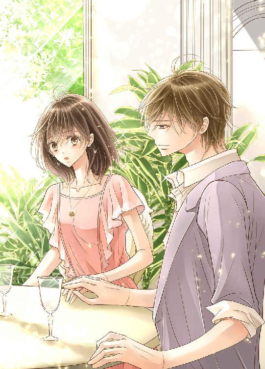
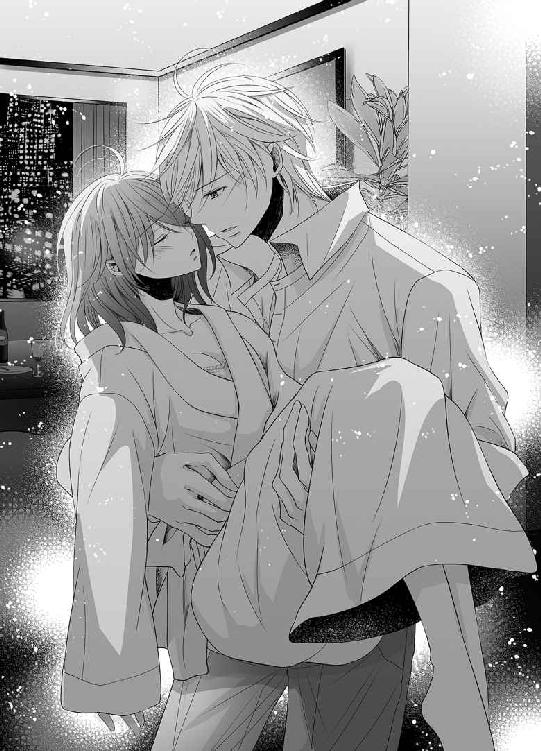
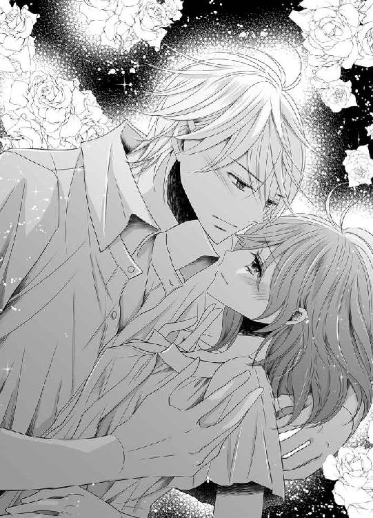
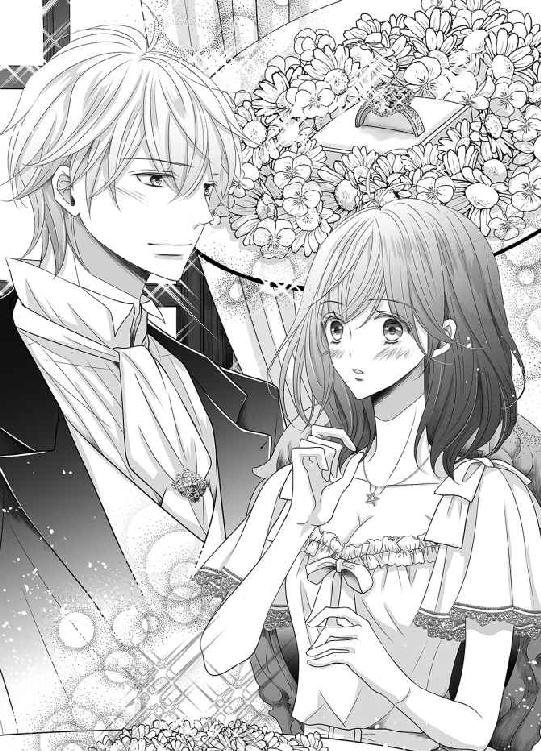

| キスは魔法の呪文から (蜜愛セレナーデ文庫) | |
| 粟生慧 | |
| A-KAGURA編集部 (2016) | |

本作品の全部または一部を無断で複製、転載、配信、送信したり、ホームページ上に転載することを禁止します。また、本作品の内容を無断で改変、改ざん等を行うことも禁止します。
有償・無償にかかわらず本作品を第三者に譲渡することはできません。
本作品を示すサムネイルなどのイメージ画像は、再ダウンロード時に予告なく変更される場合があります。
本作品は縦書きでレイアウトされています。
また、ご覧になるリーディングシステムにより、表示の差が認められることがあります。
キスは魔法の呪文から
粟生慧
イラスト：龍胡伯
プロローグ
沼田功夫は、金に困っていた。働いた金のほとんどがパチスロに消えていく。どうしても賭け事をやめることが出来ず、負けが込むと酒に逃げる毎日を繰り返していた。
（いつか勝つ。絶対勝ってやる。たまたま運が悪いだけなんだ。あともうちょっと金があればリーチ目からツモれるんだ。あと少し......）
そう思いながらスロットボタンを擦る。けれど出るのはハズレ目ばかりだ。もう今日だけで五万突っ込んだ。オープンからたった二時間でだ。給料日まで水と握り飯だけで過ごさないといけなくなった。それでも沼田はパチスロがやめられない。
チッと舌打ちをしてクシャリと潰れたパッケージからタバコを取り出そうとする。灰皿にはイライラした分だけふかした吸い殻が、指先で潰されて山を作っている。一箱五百円もするタバコをあっという間に吸い尽くしたことも癇に障った。
周囲を気にしながらイライラするけれど、どんと控えめに台を叩く。台を叩けばスタッフが注意しに来るからだ。
「これじゃあ養分──いいカモ──じゃねぇか」
パチスロにつぎ込んだ金が業界の養分として吸い上げられていく。それが虚しい。もうすっからかんになった財布からは一枚も金は出ない。台を離れれば７──ラッキーセブン──を捨てることになるかもしれないが銀行に行かないかぎり金はない。ない金と出るはずもない台との間に挟まれて立ちあぐねていると声をかけられた。
「出ますか？」
丁寧な言葉づかいに優しげな声だ。沼田は顔を台から声の主に向ける。出る、という言葉がメダルが出るということなら出ているわけがないことは明らかだ。店から出るというならば今は迷っているというしかない。
訝しげに声の主──年齢の分からない、やけに長い髪を後ろでくくった男を見やった。
男はにこやかに笑っているが目は鋭利な刃物のようにギラついている。まるでヤクザのようだ。顔と手以外は黒い服に包まれていて、沼田は暑苦しくないのかと訝しんだ。
なぜ声をかけられたか、自分が何かしでかしたのではないかと考えてみるが思い当たる節などひとつもない。この男は店が雇っているか、店を縄張りにしているやつだろうか。
沼田が答えずにいると男が続けた。
「出しましょうか？」
沼田は首を傾げる。何を『出す』と言っているのだろうか。金を出すのか？
「ひと月これくらい出しますよ」
と言って五本の指を立てた。五万かと思ったら、男が言った。
「ひと月五十万です」
沼田は耳を疑った。思わず、
「ひと月五十万!?」
と復唱していた。何かやばい仕事なのだろうか。命が掛かる仕事なのだろうか。それにしてもどうして自分に声をかけてきたのか。そんな考えがぐるぐると頭の中を駆け巡る。
すると、男が笑った。
「どうですか？ 受けてくれますか？」
ひと月五十万副収入があればそれを倍にできるチャンスがある。いや、副収入でなく仕事となると五十万は安い。肉体労働の上残業代もなくブラックな会社かもしれない。ためらっていると、男が付け加える。
「マンションに住んでもらうだけです。住むだけでひと月五十万ですよ？」
初めて沼田は問うた。
「いまのアパートから引っ越すのか？」
「引越し代も出します。ここから遠くない場所です。あなたの住んでいるアパートからそう離れていないマンションなんです」
「マンション？」
「あなたのアパートは根岸でしょう？」
男が住所を沼田に告げた。
たしかにその住所は沼田の住んでいるアパートの所在地だ。
「そこから二十分と離れてないマンションです」
男は機械のように話す。感情も抑揚もなく、声からは男の真意をうかがい知ることができない。
沼田は渋る。承諾するだけの確証がないからだ。仮に承諾してもからかわれているだけかもしれない。それが顔に出ていたのだろうか、男がジャケットの内ポケットから札束を出した。
「五十万」
そう言ってその金を沼田の前に差し出した。
沼田は台と男を見比べる。今この五十万があればツモるかもしれない。可能性は大だ。
「マンションってどこなんだ？」
五十万を目の前にして男の顔を見やる。笑みを浮かべたまま男は答える。
「浅草です。案内しましょう。引っ越しは今日中にしてください。業者は手配しましょう。台、気になりますか？」
「そりゃ、まぁ......」
「じゃあ、前金として五万渡しましょう」
沼田は差し出された手を見て生理的な嫌悪感を抱く。
不安感を抑えきれなかったが沼田は差し出された五万を受け取った。一万をメダルと換金しかちゃんかちゃんと投入口に放り込む。音楽が高らかに鳴り正面の液晶にアニメ絵が踊り出す。すっすっすとボタンを擦る。いきなりリーチ目が来た。騒がしく音楽が鳴り始める。沼田は一気にアツくなった。ドーパミンが脳内に音を立てて放出される感じがした。興奮に汗がにじむ。スタッフがリーチの札を出しに駆けてくる。あっという間に７が出て、景気のいい音楽と声優の声で沼田の心が興奮に湧き上がる。メダルがジャラジャラと出てきて止まらない。こんな経験はついぞ知らなかった。初めての経験だ。興奮に口が開きっぱなしになる。沼田は自分の横に佇んでいる男を見上げる。
男は沼田だけを見つめていた。そして沼田が台に夢中になるのを見届けると去っていった。
ひとしきり出した沼田は手に十六万を握っていた。それをポケットに突っ込み、その足で遅い昼飯を食いに行く。アパートに戻ってきて驚いた。二トントラックがアパートの前に停められていた。その横にはあの黒い男が立っている。
「引っ越しましょうか」
沼田はポケットの中の十六万円を気にした。このまま五万円を還して、なかったことにならないだろうか......。
「運も上がりますよ」
男の言葉に沼田はそれまでの考えを変えた。五万円が十六万円になったのだから、その十倍の百六十万円をこれから手にすることができる。パチスロしているだけで大金が手に入る。働くことが馬鹿らしくなるだろう。
荷物は業者が積み込んでいった。沼田はそばで見ているだけでよかった。あっという間に引っ越しの準備ができて、沼田は男から残りの四十五万円を受け取った。
その日のうちに引っ越しが済んだ。引越し先は沼田が今まで住んでいたアパートより広かった。２ＬＤＫのマンションだ。梅雨なのに薄ら寒い。クーラーが効いてるのかと思ったがそうでもないらしい。
広いリビングを見ているとでかいテレビとソファが欲しいと思った。手元には六十一万円がある。沼田は引越し業者が配置した自分の家具があまりに少ないことが気になった。ベッドだっているだろう。それも買おう。
部屋を見回した後沼田は電気街に出かけていった。
マンションに帰って沼田は姉の美枝に電話をした。引っ越したことを一応告げておかなければ時々様子を見に来る美枝が困るだろうと思ったからだ。美枝はこまめな女で、沼田の世話をあれこれしてくれる。散らかった部屋を掃除し栄養の偏った沼田に手作りの料理を食べさせてくれる。溜まった洗濯物を干し、乾いたらたたんで仕舞う。美枝がいたら嫁などいらないほどだ。実際女と付き合うのは面倒くさいと思っている沼田にとって、美枝は都合が良かった。
「住所は浅草だから」
「引っ越しするお金なんてあったの？」
「それがさ、マンションの住み心地をリサーチするバイトなんだ。引っ越しも全部その会社がしてくれた」
沼田は姉に噓をついた。ただ半分はそのとおりだ。住めばいいのだから間違っていない。
「リサーチってどのくらい住むの？」
「どうもずっとらしいよ。とにかく広いんだ。２ＬＤＫなんだぜ。姉さんも驚くよ」
沼田は自慢半分で美枝に告げると電話を切った。
十数日が経ち、沼田が新居に慣れてきたころ、やはりエアコンが効いたような寒さは続いていた。もう梅雨は終わりかけていたが、それでも外に出れば蒸し蒸しと暑い。それが家に一旦足を踏み入れると芯から冷える。それを何ら不思議に思わないで沼田は過ごしていた。それ以外はとても住み心地の良いマンションだったからだ。
沼田は冬物のスウェット上下を着込んでソファに寝転んだ。
会社の帰り際に買った弁当の入ったコンビニ袋を怠惰な手つきで広げる。シャリシャリとビニールが擦れて音を立てた。一旦寝転んだはいいけれど、冷えたビールを持ってくるのを忘れたことを思い出し、面倒臭げに沼田は腰を上げた。
休みの度にパチスロに行き、今までにないくらい勝って帰る。発泡酒ばかり飲んでいたのに今は贅沢にビールを飲んでいる。
「発泡酒はやっぱり安物だな......。ビールにはかなわないよ」
沼田は嬉しそうにそんなことをつぶやきながら、冷蔵庫からビールの五百ミリリットル缶を取り出す。キンキンに冷えたそれを持ってリビングに戻ろうとした。
すると体が金縛りにあったように動かなくなった。
氷水を全身に浴びたような寒さが背後からやってくる。
生臭い風が吹き抜けていく。
ぎこちなく後ろを振り返る。そこには白くて背が低い冷蔵庫があるはずだった。
しかし、視界に入ってきたのは墨をひっくり返したように真っ黒い穴だった。
生臭さは穴から吹いてくる。
ビールを手に持っていた手が痺れてくる。
足は床に張り付いたまま動かない。
気が付くと黒い闇の縁がタコの足のように伸びてきた。黒い触手が沼田の手を取った。あっという間に触手が体にまとわりついた。
強い力で穴の中に引き込まれ、沼田は穴の中に飲み込まれた。
穴は泡立ちながら小さくなっていき、最後は黒い点になって消えた。そこに残っているのは床に転がる、沼田が取り出したビール缶と白い冷蔵庫だけだった。
第一章
桜庭萌絵は、会社があったはずのビルの前に立ちすくんでいた。回りにいる人間も同じだ。ビルのガラス戸には倒産の知らせを書いた張り紙があるだけだった。
ガラスに映る肩までのボブに灰色のリクルートスーツを着た小柄な女性。その顔に驚きの色が浮かんでいた。
驚きばかりが先立って、怒りは湧かなかった。給料振込みがなくなって三ヶ月も経っていたから、会社が危ういことはわかりきっていたはずだったのだ。今までなけなしの貯金を崩して生活していた。もしかしたらもしかしたらという偽りの希望で自分をごまかし続けていた。それは呆然と立ちすくんでいる周囲の人間にとっても同じだろう。
小さな会社ではなかったのだからいつかは立てなおすことができると思っていたのだ。これだけ一生懸命働いていれば、いつか報われると思っていた会社員も少なかっただろう。
萌絵もそのひとりだった。
「噓ぉ......」
萌絵は啞然として声を漏らした。貯金は底をついて残高は一万円を切っている。アパートの管理人から督促が来てもう二ヶ月。なんやかんやと言い訳をしてごまかしてきたけれど、今日の給料日にもしも金が支払われていたらアパートを追い出されずに済むかもしれない。そういう思いが頭をめぐる。でも言葉にできたのはたった二文字『うそ』という間の抜けた声だけだった。
会社の周りに佇んでいた社員たちも時間とともに一人減り二人減りしていった。お昼近くになりとうとう萌絵も諦めがついた。
ガラス戸の向こう側の社内の様子を見ていると嫌でもあきらめが付く。レンタルのデスクや椅子、電子機器の全てが引き払われており、コピーされた紙だけが床に数枚散らばっている。もぬけの殻とはこのことだろう。それを見ているだけで、『倒産』という言葉が骨身にしみた。
萌絵は地下鉄に向かう。手元に残っているのは千円札数枚と定期券。アパートに戻れば数日間分の食料はある。バイトを見つけてなんとかすれば一ヶ月水だけは止められずに済むかもしれない。
気分は朝起きた時よりも数段と急降下している。ここ数ヶ月あまり気分のいい日はなかったけれど、今日ほどではなかった。実家に頼ってもいいかもしれないが無理を言って都会に出た萌絵にとって実家は最後の手段だった。もうどうにもならなくなったら実家に戻らざるをえないだろう。
萌絵は頼りない足取りでトボトボと歩き続けた。地下に降り、丁度やってきた電車に乗る。降りた地下鉄の駅から二十分ほど歩いたところに萌絵のアパートはある。駅から離れるととたんに住宅街も寂しくなり古びた建物ばかりになる。都心で六万円払ってもワンルームを借りることが出来ない中、萌絵の住んでいるアパートは管理人が階下に住んでいるおかげで一ヶ月四万円で借りることができた。その四万円を三ヶ月滞らせている。昨日も管理人がやってきて萌絵に「早く三ヶ月分の部屋代を払ってくれなきゃ困るよ。もし今日中に支払いがなかったら部屋から出て行ってもらうからね」と言った。萌絵はなんとか管理人を説得して帰ってもらったが支払う自信がなかった。まさか会社から給料が入っていないとは言いがたい。とうとうサラ金に手を出すしかないのだろうか......。
頭を悩ましながらアパートに戻ると萌絵は鍵を取り出して鍵穴に差し込んだ。回そうとしたけれど、鍵はあかなかった。どういうことかわけがわからなくなって、萌絵は階下に降り管理人の部屋のブザーを鳴らした。化粧っ気のない顔に吊り目の中年女が顔を出した。
「はいはい。......なんだ、桜庭さんか。あんた、もう期限切ったから出て行ってもらうから。服とかいるものがあれば庭に置いてるから持っていきな」
冷たい一言だった。萌絵は恐る恐る管理人に言った。
「あの......なんとかお金を工面しますから、住むことできないですか？」
「できるわけないだろう！」
いきなり管理人が上げた怒声に萌絵は小さな体を縮こまらせた。怒られるのも大きな声も苦手だった。女ならヒステリックな声もだめだったけれど、男の強い語調も苦手だった。
「さぁさぁ、話は終わり。あんたの借金、十二万円ちゃんと書き留めてるからね。これも近いうちに払わなかったら裁判起こすよ」
脅しに近いことを言われたが滞納したのは萌絵だ。何を言われても仕方ないかもしれないと萌絵は肩を落とし、アパートの裏手にある庭に向かう。
こたつ台の上に服が散乱している。下着までそのまま野ざらしにされていて、萌絵は顔から火を吹きそうになった。情けない思いをしながら、運よく手つかずになっているスーツケースの中に入るだけの私物を詰め込んだ。当座、ネットカフェで寝泊まりできる程度の荷物だ。パソコンもテレビもレコーダーもすべて管理人が処分してしまったようだ。金にならなかったものだけが庭に残されていたのだろう。
萌絵は行く宛もなく定期券の範囲内を歩き、職と住む場所を探すことに決めた。
繁華街ならば日雇いの仕事があるかもしれないと思い、バーやスナックや居酒屋の多い町で地下鉄を降りて歩きまわる。地理に詳しいわけではないので段々と知らない場所に入り込んでしまった。所在を確かめるためにスマートフォンの地図アプリを開いた。思ったほど駅から遠いわけではないようだった。どうやらぐるぐると駅の周りを回っていたようだ。スマートフォンを見て初めて夕方だとわかった。残暑の季節でもまだ六時くらいならかろうじて日暮れ時ではない。けれど、六時をすぎればあっという間に暗くなってしまうだろう。
朝ごはんを抜いて出勤してそれから何も食べていなかった。腹がキュルルと音を立てる。なんでもいいから食べないといけないかもな......。水でもいいかなと、コンビニを探すためにまた歩き出した。
ふと、香ばしい匂いが鼻腔をくすぐった。コーヒーの香りだった。萌絵はまるで匂いに取り憑かれたようにその香りを追って歩を進める。なんだかその香りに包まれたいという気持ちでいっぱいだった。疲れ果てた萌絵の心をコーヒーの香りが癒やしてくれるように思えたのだ。香りの導線が目に見えるように萌絵は迷いもせずまっすぐにコーヒーの香りをたどっていく。
そしてとうとうある店の前に立っていた。グリーンカーテンが広めの窓を覆い、その横には赤茶色いドアがあった。すりガラスの小窓にオープンの札がかけられている。店名は『サビエンス』。
外からは中を伺うことは出来ない。何しろ窓には蔦がカーテン代わりに窓を覆い尽くしているからだ。音も何も聞こえない。静かな通りでもある。他の店はシャッターを閉めてまだ開店の兆しもない。
それなのにコーヒーの香りだけが辺りに立ち込めている。萌絵は一杯だけ飲みたいという気持ちにかられた。いくらするのか知らないが今日の食事代わりに飲むくらいはいいだろう。ほんの少しの贅沢だ。明日からはコーヒーすら飲めないかもしれない。だからこれで最後にする。そう決めて萌絵はダークチェリー色のドアを開けた。
「いらっしゃい」
静かで落ち着いた声が萌絵を迎える。店内はカフェと言うにはレトロな作りだった。向かい合わせのソファごとに仕切りがありプライベート空間になっている。ドアと同じダークチェリー色と臙脂色で統一されてしっとりと落ちついた大人のイメージだ。ほとんどのボックス席は人で埋まり繁盛しているのが伺える。人が座っていないのはカウンターだけだ。
空色のおおきなスーツケースを持ち、くたびれたリクルートスーツを着ている萌絵はこの空間では浮きまくり反対に目立っている。
（場違いなところに来ちゃった......）
萌絵は後悔し引き返そうとした、その時。
「なんだか疲れてるようだから、ここに座って休んでいってはどうですか？」
マスターらしき男が萌絵に声をかけた。
萌絵は頰に手を当てた。疲労が顔に出ていたのだろうか。
マスターは人懐っこい笑顔を浮かべる。甘いマスクに少しタレ気味の目が魅力的だ。茶色い猫っ毛を耳の長さまで伸ばしているがだらしなさはない。むしろ爽やかで清潔感がある。真っ白いシワひとつない開襟シャツ、腰には黒のエプロンを巻いている。
マスターの声が耳障りよく、萌絵はためらったけれど素直に店内に入りカウンターに座った。
カウンターに座った萌絵にマスターがお冷を出してくれる。今時珍しいタオルの手拭きも用意してくれた。冷たいタオルが汗ばんだ肌に気持ち良い。萌絵はもらったお冷を一気に飲み干した。途端に腹が刺激されてまたキュルルルとなる。
マスターがくすりと笑い、
「なにか注文されますか？」
と訊ねてきた。萌絵は慌てて手を振ると、
「いえっ、あの......、食事は......、いいです......」
しかし、食事を断ってから少し迷って続けた。
「でも......、このコーヒーの香り......、同じコーヒーをください」
「ブルーマウンテン？」
マスターが言った。萌絵は不安になり訊ねる。
「その......、ブルーマウンテンって高いんですか？」
「普通よりも高いですよ」
萌絵は恐る恐る問うた。
「あの、いくらするんですか？」
「同じものだと千五百円ですね。他のコーヒーもありますよ？」
萌絵は悩みながら財布を取り出して中身を確認する。二千円しかないが贅沢はこれでおしまいだから思い切って注文することにした。
「あの、それください」
マスターはニコリと微笑む。
「ブルーマウンテンですね」
そう言って、加熱器の上にある銅製のポットを持ち上げた。高価そうな陶製のカップにお湯を注ぐ。サーバーもお湯で温めてから中身を捨て、ドリップ用の陶器をサーバーの上に置いた。
萌絵はてっきり紙フィルターでコーヒーを淹れるのだと思っていたら、マスターが冷蔵庫を開けてネルを取り出した。布製のフィルターだ。萌絵にコーヒーの知識があるわけではないがサイフォンよりも繊細な味がするのだ。
マスターは温めたネルの中にブルーマウンテンの粉を入れ、銅製ポットで湯を一旦注いだ。そこでふわっと香ばしい香りがあたりに漂う。この香りだと萌絵は感じた。この香りが萌絵をこの店まで案内したのだ。
マスターがサーバーに滴ったコーヒーを捨ててしまう。そしてもう一度セットする。ゆっくりと銅製ポットを傾けると細い口から糸のように細くなった湯が注ぎ出る。ポットをゆっくりと円を描きながら動かしては膨れ上がり泡だった茶色い粉がしぼむのを待つ。それを三回ほど繰り返すと、マスターはまだドリップにコーヒーが残っているにもかかわらず、ドリップをサーバーから外した。
それを萌絵が身を乗り出してカウンターから覗き込む姿を見て、マスターは思わずかわいいなと思ってしまう。
サーバーに琥珀色の液体がたゆたむ。温められたカップの中の湯を捨ててからサーバーのコーヒーをゆっくりと注いだ。
「はい」
目の前に置かれた琥珀色の液体の表面にモヤのような湯気が渦を巻いている。
「砂糖とミルクはいりますか？」
マスターに訊ねられて、萌絵はまた迷った。コーヒーをブラックで飲むのは苦手だ。でも、目の前に出された琥珀色の液体を他の味で誤魔化したくない。
「あの......、最初はこのままで」
萌絵は思い切って申し出るとカップを両手で持ち上げて唇に当てた。まだ熱い液体が舌の上を転がる。熱くて一旦カップをソーサーに戻した。
「熱かったですか？」
マスターが苦笑交じりに声をかけてきた。萌絵は恥ずかしく思いながら、こくんと頷いた。
「でもコーヒーって冷めると味が変わるんですよね？」
なけなしの知識を萌絵は披露した。マスターが笑いながら肯定する。
「よくご存知ですね。コーヒーは冷めると雑味が増すんです。だから熱いうちに飲んだほうが美味しいんです。もしかして、お客さんは猫舌なんですか？」
萌絵は顔を赤くして頷く。熱いコーヒーを飲もうと思ったのはこれが初めてだった。いつもだったらアイスコーヒーを頼んでしまうのに、今日はこの香りを楽しみたくてホットを頼んだのだ。
「マイペースに飲んだらいいですよ」
マスターは優しげな声で言ってくれた。
萌絵はゆっくりとコーヒーに口をつけて時間をかけて飲み干した。まろやかでコクのあるコーヒーは生まれて初めてだった。美味しいコーヒーを最後の一滴まで飲み干してふと気づくとソーサーの横にサンドウィッチが置かれていた。
「あ、あの......、わたし、その......、お金がないからサンドウィッチ......、食べられないです」
萌絵は慌ててマスターに断った。するとマスターが微笑みを浮かべて優しく言った。
「これはサービスですよ。僕の気持ちです。こんなに美味しそうにコーヒーを飲んでくれて、とっても嬉しいんですよ」
マスターの人懐っこい笑顔にほだされて萌絵も微笑んだ。
「ほんとに......、食べちゃっていいんですか？」
「どうぞどうぞ」
マスターに言われるがままにサンドウィッチを手に取ると萌絵は頰張った。オムレツに仕上げたふわふわの卵と甘酸っぱいケチャップがパンと一緒に口の中に広がっていく。
萌絵は気が付くと夢中でサンドウィッチを食べていた。
「おなか、空いてたんですねぇ」
マスターに言われて萌絵は恥ずかしくなって食べるのをやめた。なんだか申し訳なくなってきて謝った。
「その......、ごめんなさい。ちょっとみっともなかったですね」
「いえいえ、美味しそうに食べてくれて嬉しいですよ。でもなんでお金がないんですか？ 何か困ってるんですか？」
萌絵はマスターの言葉に答えるのをためらった。知らない人に話していいのだろうかと逡巡した。するとマスターが笑って萌絵の背を押すように言った。
「僕はあなたのことを知らないでしょう？ あなただって僕のことを知らない。だから気を遣わずに話せるんじゃないでしょうか？ 気兼ねなく僕に悩み事を話してください」
萌絵はその言葉に甘える事にした。愚痴っぽくなってしまうけれど、実は心から誰かに自分の境遇を聞いてもらいたくてたまらなかったのだ。
萌絵は給料をもらえなかったこと、会社が倒産したこと、とうとう金が底をつきてしまったこと、家賃が払えなくて追い出されたことを一気に話していた。
その間に何人の客が出入りしたかわからないけれど、マスターは一度も腰を折るようなこともせずに最後まで萌絵の吐露に耳を傾けてくれていた。優しく何度も相槌を打ち、萌絵の気持ちを受け止めてくれたのだ。
萌絵は思わず泣いていた。涙がポロポロとこぼれていく。
「辛かったですね......。良く頑張りましたね」
マスターの声音が胸にしみた。萌絵は泣きじゃくりたい気持ちを抑えて、会計を済ませようと財布を出した。
すると、マスターがそれを引き止める。
「代金はいいですよ」
萌絵は目を見張った。
「え？ それじゃあ、食い逃げみたいになっちゃうじゃないですか」
するとマスターが苦笑いを浮かべる。
「あなたの気持ちを受け取ったからお代はいいんですよ」
「でも......」
萌絵はマスターを見つめた。このまま甘えていてはいけない気がしたのだ。なんだかマスターにお礼がしたい気持ちが湧き上がってきて思わず口走っていた。
「あの......！ あの......、わたし働いて返します。今日も何時間もわたしの相手をしてくれて......、その......、良かったらでいいんです......」
マスターが顎に手を当ててしばらく考え込んでいるような顔つきになる。そのうちに笑顔になった。
「じゃあ、その申し出を受けましょう。溜まった家賃も払わないといけないでしょう？ それに今はお金もないわけですし......。もしいやじゃなかったら、僕のマンションに来ませんか？ 幸い、部屋がたくさん余ってるんです。あなたがいやじゃなかったらですけど」
思ってもみなかった申し出に萌絵は言葉が出なかった。嫌じゃない、それどころか心なし嬉しい気持ちが溢れてくる。それはお金や住居の心配をしなくてすむというレベルのものではない。
マスターと一緒にいることができることへの喜びだった。話を聞いてもらっているうちに萌絵は知らず知らずマスターに好意を抱いていた。こうして好意を抱くなんて不躾なことかもしれないけれど、隠していれば迷惑にならないだろうと萌絵は思った。
「ご迷惑じゃないんですか？」
マスターの言ったことが噓でないことを祈りつつ、萌絵は用心して訊ねた。
「大丈夫ですよ。店が終わるまで待っていてください。そうだな、ここでバイトをしてもらうんだから名前くらいは言わないといけないですね。僕は日下部雅史です」
萌絵は慌てて自己紹介する。
「わ、わたしは桜庭萌絵です」
「桜庭さん、よろしくお願いします」
「はいっ、わたしの方こそよろしくお願いします！」
萌絵は頭を下げた。
夜間はバーを営業しているわけではなさそうだった。夜の八時近くになると自然と客は会計を済ませて出て行った。日下部は店内の掃除を済ませると、電気を消して、ドアの札をクローズにして萌絵とともに店外へ出た。ガチャンと鍵をかける。
「お待たせしました。じゃあ、この近くに駐車場があるからそこに行きましょうか」
どうやら店長は車で店まで通っているらしい。五分ほど歩くと月極の駐車場にたどり着く。落ち着いた色合いのスモーキーな４ドアタイプのポルシェが一台停まっている。
萌絵は足を止めた。
まさかあのポルシェが日下部の車なのだろうか。キョロキョロと周りを見回してもそれらしい他の車はなかった。
ポルシェの横に立った日下部が萌絵を呼ぶ。
「どうしたんですか？ 荷物を積みますから貸してください」
萌絵は遠慮がちにスーツケースを日下部に渡す。華奢に見える日下部は軽々と重たいスーツケースを持ち上げてトランクに積もうとした。
「あれ。やっぱり後ろに積みますか」
もう一度スーツケースを取り出すと、後部座席のドアを開けスーツケースを横倒しにして積み込んだ。
「桜庭さんは助手席に座ってください」
萌絵は本能的に車の左側に回ろうとした。それを日下部が止める。
「右側ですよ」
萌絵は気恥ずかしさに顔を赤らめる。外車だから左ハンドルなのは当たり前だ。それでもポルシェなんて高価な車を目の前にすると緊張する。むしろ、スーツケースを押し込んだ後部座席が汚れてないか、そっちのほうが気になって仕方ない。
「あの、後部座席、汚れちゃわないですか？」
「大丈夫。気にしないでいいですよ」
日下部がさわやかな笑顔を浮かべた。
いい人だな......、と萌絵は感じ入った。バイトや部屋の件にしても見ず知らずの人間に親切すぎるかもしれない。確かに萌絵が日下部の好意を受け入れたのは下心があったからだが、それでも日下部の親切はあまりある。
少し不安になってもう一度聞いた。
「ほんとにいいんですか？ お部屋を借りたりバイトに雇ってもらったりしても......」
すると日下部が目を大きく見開いて驚いた様子を見せる。しかし何か納得したようにまた笑顔に戻った。
「ああ、一緒に住むと言っても一緒の部屋じゃないですから安心してください。それにバイトはちょうど欲しかったんです。募集を出してもなかなかこなくて」
「そうなんですか」
一緒の部屋じゃないと聞いてホッとしたような残念なような気持ちになりながら、萌絵は右の助手席に座った。車内にいい香りが充満している。けれど芳香剤のようなどぎつい匂いではない。香りのもとを探すと隣で運転している日下部から香っていることに気付いた。甘い香りではなくさわやかな野草のような香りだ。
連れて行かれた先は都内でも高級住宅が立ち並ぶ場所だった。富裕層向けの高層マンションが街路沿いに建っている。そのマンションの一つに車は入っていった。
萌絵は自動で締まっていく車庫のシャッターを見、運転席から降り後部座席のドアを開く日下部を見つめた。
「ここですか......？」
萌絵ですらこのマンションが庶民では暮らせないものほど賃貸料が高い場所だとわかる。この喫茶店のマスターは一体何者なのだろうかと思うが、ズケズケと聞くことが出来なかった。
スーツケースをおろして日下部は呆然としている萌絵に声をかける。
「さぁ、このエレベーターに乗っていけばすぐに部屋につきますから」
気が付くと日下部の向かう先にたしかにエレバーターがある。
直通なのかと萌絵は耳を疑い、聞き返す。
「他のフロアには止まらないんですか？」
「ワンフロアにしかエレベーターが止まらないようにしてあるんですよ。住人同士が顔を合わせないようにプライバシーを守ってるんです」
そう言ってカードを刺す穴に鍵のようにポケットから出したカードを日下部は差した。すると勝手にエレベーターが動き始める。表示板には回数が表示される。
「これ、自動なんですか......？」
「そうですよ。このカードがないと自分の部屋に行けないようにしてあるんです」
萌絵はそれを聞いただけで驚いた。
「こ、こんなすごいマンションにひとりで住んでるんですか......？」
日下部がきょとんとした顔をする。
「独身ですから。じゃなかったら桜庭さんを連れてこれないですよ」
そう言ってひょうひょうとした様子で微笑む。こんな高価そうなマンションにひとりで住んでるのかという疑問は、別に結婚しているかどうか聞いたわけではなかったけれど、独身だと聞いて萌絵はなんだか安堵した。
萌絵は日下部に促されてエレベーターに乗る。
「ここ何階まであるんですか？」
「九階です。今向かってるのは最上階です」
九階建ての最上階と言ったら見晴らしが最高の部屋ではないか。ずいぶん高い家賃だろう......。それをあの喫茶店だけでまかなえるのだろうかと萌絵は不安な気持ちを抱いた。喫茶店は表向きで何か怪しい仕事をしているのじゃないだろうか......。日下部の甘いマスクにつられてついてきてしまったが間違いを犯してしまったんじゃないだろうか。萌絵の頭の中で疑念が渦巻く。
エレベーターはあっという間に二人を最上階へと連れて行った。ドアが開き先導して日下部が降りる。萌絵もついていった。そこでずっと日下部にスーツケースを持たせているのに気がついて萌絵は慌てた。
「すみません。スーツケース、わたしが持ちます」
「気にしないで。男の僕のほうが力があるんですから」
エントランスは広く観葉植物の鉢植えが置いてある。ダークブラウンの木製のドアに床は暗褐色のじゅうたん。非常階段も設置してあるようで、壁と同じ色のド鉄製のアがエレベーターの隣にあった。
日下部は木製のドアを開く。ふわっとアロマのいい匂いが漂ってきた。なんという名前のアロマなのかはわからないけれど、日下部の体にまとわりつくいい香りと一緒だった。
「この香り......」
萌絵は思わずつぶやいた。
「セージですよ。いい香りでしょう？ いろいろなものを浄化するときに使うんですよ」
「浄化......」
聞き慣れないスピリチュアルな言葉に萌絵は目を丸くする。それを見て日下部は笑う。
「単純に香りを楽しんでいるんですよ」
そうか......と萌絵は納得した。たしかにこの爽やかな香りは気分を一新させてくれる。萌絵の中にわだかまっていた将来への不安が消え去っていくように感じた。
「桜庭さんはバスルームから近い部屋がいいですね。窓があったほうが良いですか？ 一応窓はあるんですけどバルコニーに通じてないので......」
「あの、どんな部屋でも構いませんから」
「部屋数はリビングを別にして五部屋あるんです。僕は少し広い部屋を使ってます。バスルームの隣の部屋は客室になってるのでベッドも揃ってますよ」
至れり尽くせりの待遇に萌絵はまたも啞然とした。こんな時に窓がどうとかという話など野暮だろう、というかそんな贅沢なんて言ってられない。
「じゃあ、バスルームはここだから、隣の部屋にスーツケースを入れておきますね」
「あ、はい！」
「そうだ。疲れたでしょう？ お風呂に入ってリラックスした格好になってはどうですか？」
「え！ あの......、わたしは今日はずっと椅子に座ってただけだし......、どちらかと言うとマスターさんのほうが疲れてるんじゃないですか？」
萌絵は遠慮がちに言ってみた。
『マスターさん』と言われて日下部は苦笑いを浮かべた。
「マスターさんって呼ばなくていいですよ。マスターか日下部って呼んでください」
萌絵は迷った末、バイトのこともあるので『マスター』と呼ぶことにした。
「お風呂はマスターから先に入ってください。わたしは後からでいいです」
「でも、桜庭さん、今日はいろんなことがあったでしょう？ お風呂にアロマオイルを入れてあげますから待っててくださいね」
日下部は萌絵に有無も言わせない勢いでバスルームに入り湯をバスタブに張りだした。パウダールームの棚を開きそこに並べてある小瓶から一つを選び出すと、それをバスタブに一、二滴垂らした。ふわりと優しい香りが漂う。それは萌絵もよく知っている香りだった。
「ラベンダーです」
小瓶を棚にしまいながら日下部が教えてくれた。
「いい香りですね」
「リラックス効果があるんです。疲れてる桜庭さんにはちょうどいいと思いましたから」
それを聞いて萌絵は急に気恥ずかしくなった。
「あ、ありがとうございます......」
今日初めて会った日下部に気遣ってもらうのがとても心地よかった。今まで気を張っていたせいかもしれない。喫茶店で大泣きしてしまったことも思い出してしまった。
「こまごまとしたことはお風呂から上がって着替えてから説明しますね」
開け放たれた部屋に萌絵は通されてひとりきりになった。
清潔なベッドが部屋の壁に設置してありタンスなどはないがウォークインクローゼットがあるようだ。スーツケースはベッド脇に置いてある。ベッドの掛け布団は薄いシーツのようなもので淡い緑色だ。壁紙は落ち着いたクリーム色で床はダークブラウンのフローリングになっている。
萌絵はベッドに座り込んだ。ちょうどいい具合にスプリングが利いている。この部屋もセージの香りがする。ベッドフレームにクリスタルの小瓶が置いてあって、その中に白っぽい緑色の葉っぱが入っている。どうやらそれがセージのようだ。思ったより大きな葉で乾燥したそれはくるりと丸まっている。
ぼんやりしているとドアをノックされた。
「お風呂が入りましたよ」
「あ、はい」
しかし、着替えはかろうじてあるもののタオル類は何もない。萌絵は部屋から顔を出してタオルを貸してもらおうと日下部に言おうとした。すると、ドアの前に立つ日下部の手にバスタオルとフェイスタオル、それからバスローブがあった。
「これ。ゆっくり浸かってください」
「はい......」
萌絵はそれら受け取ってバスルームに入っていった。
汗を流してバスローブを身につけた萌絵は廊下に出た。突き当たりのガラスをはめたドアの向こう側が仄かに明るい。濡れたタオルを手にして萌絵はドアを開けた。
白い開襟シャツにベージュのチノパンをはいた日下部が、ソファに座って本を読んでいた。その頭上を昼光色のランプが照らしている。他に照明はついておらず、日下部を中心に部屋は薄いオレンジ色に照らされて部屋の隅は濃いブラウンに見えた。それがまるで絵画のように見えて萌絵は思わず見とれてしまっていた。
「上がりましたか」
日下部が佇んでいる萌絵に気づいて振り返った。
萌絵はハッとしてもじもじとする。
「あの......、このタオル、どこに置いたら良いですか？」
「ああ」
日下部は微笑むと立ち上がり萌絵をランドリールームに案内した。その部屋はパウダールームの中にあり、ドアをふすまのように開くとちょうど目の前に洗濯乾燥機が設置してあった。
「女性のもので見せたくないものがあったら乾燥機を使ってください。干せるんですけどさすがに恥ずかしいでしょうから」
萌絵は顔を赤くして部屋においてきた下着類を思い出した。管理人が放り出した衣類で残っていたのは地味な下着類だけだった。もしかすると他人が持って行ってしまったのかもしれない。だから替えの下着は二、三着しかなかった。
「ありがとうございます......」
萌絵は日下部の好意に甘えて洗濯乾燥機を使わせてもらうことにした。
「桜庭さんこっちに来て」
萌絵が日下部にキッチンを案内された。
「ここの冷蔵庫の中のもの、好きに食べていいですから。おなかすいてるでしょう？ ラザニアで良かったら温めますよ」
日下部は冷蔵庫から白い深皿を取り出す。食べかけのラザニアだ。
「遠慮しなくていいですよ。昨日多めに作ったんです。僕もお腹空いてますし、一緒に食べましょう」
萌絵は日下部がラザニアを温めている間ソファに座っているように言われた。テレビはついてない。明かりはキッチンの蛍光灯とソファを照らすランプだけだ。ブラウン色の闇が蛍光色に押されて小さくなっている。
「すぐ温まりますよ。飲み物は炭酸水がいいですか？ それともお水？」
炭酸水と聞いて萌絵は緑色の瓶に入ったフランス産の炭酸水を思い起こした。少し好奇心で「炭酸水をお願いします」と頼むと、案の定冷蔵庫から日下部は緑色の瓶を取り出す。萌絵の記憶では三百五十ミリリットルの小さな瓶のつもりだった。けれど目の前にあるのは一リットルはありそうな大きな瓶だ。
「大きいですね、初めて見ました」
萌絵がびっくりしていうと、日下部が笑う。
「業務用ですよ。早く飲まないと気が抜けてしまうから助かりました」
細長いコップに日下部は氷を入れて炭酸水を注いだ。それを持ってリビングの低いテーブルに置く。
「喉、乾いたでしょう？」
萌絵は甘くない炭酸水をごくごくと飲み干した。冷たくてさわやかな炭酸水が喉を刺激して口の中をすっきりとさせる。
「ふー」
ひと心地ついてコップをテーブルに置いた。
「お代わりはいりますか？」
「あ......、すみません。お願いします」
ちょっと図々しいかなと思いつつ萌絵はお代わりを頼んだ。その間にラザニアが温まり、萌絵はダイニングテーブルに移った。
部屋中があっという間にミートソースの香りに満たされる。小皿にラザニアを盛り付けて日下部が萌絵に差し出した。
「いただきます」
萌絵は小皿を受け取ってナイフとフォークを使ってラザニアを食べた。平たい板状のパスタはよく茹でられて柔らかく、ミートソースも程よい甘みとコクが有り、とても美味しかった。最後に炭酸水を飲むとミートソースでいっぱいだった口の中がすっきりと洗い流される。
「ごちそうさまでした」
萌絵が手を合わせると、突然日下部が身を乗り出して手を伸ばした。
「口にミートソースがついてますよ」
ナプキンで口元を拭われて、萌絵は顔から火が出るほど恥ずかしかった。真っ赤になってうつむいていると、日下部が謝る。
「すみません。つい妹みたいに扱ってしまって......。桜庭さんは大人の女性ですもんね。配慮が足りませんでした」
しょぼんとする日下部に萌絵は慌てて言った。
「あ、あの......、いえ、怒ったわけじゃなくて、あの......、全然怒ってませんから」
日下部のしょげた表情がどうしようもなく萌絵の胸に響く。キュンとときめいて鼓動が早くなった。ただ日下部からしたら自分は妹みたいに思えるのだと考えると複雑な気分になる。日下部の年齢が幾つかはわからないけれど、大人の女性に見てもらえると嬉しい。
「良かった。それから......、桜庭さん」
急に真面目な声で日下部が言った。
「は、はい！」
「今日はまっすぐ帰りましたけど、たまに残業もしてもらおうと思ってます。ちょっとした手伝いなんですけど、良いでしょうか？」
日下部が真面目な顔をした。
萌絵はどんな仕事なのか訊ねる。
「賃貸マンションや分譲マンションを浄化しに行くだけですよ」
またも『浄化』という単語だ。
「浄化ってさっきもおっしゃってましたけど、実際には何をすればいいんですか？」
日下部が微笑んだ。
「特に何も。道具類を持ってきてもらうだけです。浄化自体は僕がしますから。それから敬語はなくていいですよ」
萌絵は苦笑いを浮かべる。
「でも、マスターは敬語ですよ」
「ああ、ほんとですね。でも、なんだか癖で......」
「あの......、浄化ってどんなことするんですか？ スピリチュアルなことですか」
すると日下部が困ったような顔をする。
「そのとおりですよ。スピリチュアルなことです。部屋自体を綺麗にして人が安心して住めるようにするんです」
「それって、地鎮祭みたいなことですか？」
日下部はそれを聞いて苦笑した。
「そうかな......、そうですね。それに一番近いと思います」
日下部が立ち上がる。
「少しワインでも吞みますか？ それともジュース？」
萌絵は見栄を張って、ワインをくださいと頼んだ。
日下部が冷蔵庫の隣にある小さなワインセラーを開く。中からワインの瓶を取り棚からワイングラスを出した。そしてふと思い立ったように萌絵に訊ねる。
「赤がいいですか？ それとも白？」
萌絵はワインなどあまり飲んだことがない。ワインのイメージは赤だ。
「赤をお願いします」
味などわからないけれど、少し大人の女性の気分になった。日下部がグラスに半分注いだワインを手渡す。萌絵はグラスを取りワインを口に含んだ。アルコールが口の中に広がりその後にフルーティな香りが満ちた。それでも萌絵はなれないアルコールにむせる。
それを見ていた日下部が苦笑いを浮かべる。
「アップルジュースのほうが良かったですね」
「そ、そんなことありませんから。あの、飲めますよ。久しぶりだったからむせただけです」
萌絵は強がってみせた。日下部は大人の男性だ。自分だってそれに見合う女になりたい。ワインくらいなんてこともないくらい平然と飲んでみせたかった。残ったワインをぐっと一息に飲んでしまう。それから日下部にお代わりをせがんだ。
「もう一杯、吞みます」
萌絵の顔は真っ赤になっている。
「これ以上はやめておいたほうがいいですよ」
日下部が止めるのも聞かないで、酔いに任せ萌絵はワインの瓶を手にとってグラスに注いだ。
血のように赤いワインがグラスいっぱいに注がれる。真紅の液体の表面が揺れ萌絵の顔が映る。萌絵はグラスを手に持ち半分まで飲んだ。心臓が壊れそうなくらいに鳴り響いている。頭がぼんやりとしてくる。手に持ったワイングラスが重たくてテーブルに置いた。ふわっと宙に浮いたような感覚が襲ってくる。目の前がグラグラとぐらついて見える。その向こうで日下部が驚いた顔をしている。何もかもが水の中から見ているような気分だった。
「桜庭さん、萌絵さん！」
どこかで日下部が呼んでいるような気がしたが、萌絵はそのまま頭をテーブルに突っ伏し気を失った。
日下部はまさか萌絵があんなにワインを吞んでしまうとは予測していなかった。というかあれほど弱いとは思っていなかった。知っていたらジュースのことしか聞かなかっただろう。慌ててしまって萌絵と叫んでしまったけれど萌絵に気づかれたとは思っていない。一緒に住もうという提案もまさか受けてくれるとは思っていなかったけれど、こうして目の前で寝ている萌絵を見ていると良かったと思ってしまう。
日下部はバスローブ姿の萌絵を抱きかかえた。とても軽い。最初に抱いた儚くてか弱いイメージそのものだ。一生懸命過ぎて無理をしすぎてもろく崩れてしまいそうな可愛い女性だった。
萌絵が喫茶店のドアを開けて店に入ってくる前、古馴染みの五十嵐万生がタロットで予兆が出たと言ってきた。彼女はすぐに帰ってしまったけれど、新しい出会いがあると言われた。まさかそれが萌絵だとは思っていなかったが結界を張った店を見つけ出した萌絵にはある種の力があるのだろうと思えた。
店には、一定の力のある者にしかわからないように結界が張ってあるのだ。闇雲に一般の客に入ってきてもらいたくない理由があったからだ。それなのにくたびれたリクルートスーツ姿に汗をかいて疲れきった色を顔ににじませる若い女性が入ってきたのだから、日下部は正直驚いた。
大きなスーツケースを抱えた萌絵は行き場をなくしたウサギのように弱々しく見えた。その姿を見た途端、日下部は思わず守らなければいけないものを見つけた気がした。彼女を見守りたい。いや、そばにおいておきたい気持ちが沸き上がったのだ。そんな風に他人を見たことなど生まれてこの方なかった。日下部にとって人は失くしてしまうものだった。大切な人ほどいなくなってしまう。だから執着することを避けてきた。
それなのに、目の前に立ちすくむ萌絵に対してひと目で執着が生まれてしまった。思わず萌絵を店に引き入れてコーヒーを飲ませた。腹をすかせて弱り切った彼女にサンドウィッチを作ってあげた。それだけでなく何でもしてあげたい気持ちになった。
萌絵が語る境遇に同情したせいかもしれない。泣き出した萌絵を可哀想に思ったせいかも知れなかったが、ますます萌絵を守りたいと感じた。
その萌絵が腕の中にいる。急性アルコール中毒ではなさそうだった。多分疲れがアルコールと相まって眠ってしまったのだろう。あどけなく眠る萌絵の唇を見つめ、日下部はたどたどしく唇を重ねる。
幼子にするような可愛らしいキスだった。

もしも彼女が目覚めていたら、彼女を求めてしまったかもしれない。一緒に住もうという言葉の裏には彼女に対する欲望もあった。これ以上彼女を近くに置いておいたら、彼女を奪ってしまいそうだ。
日下部は急ぎ足で萌絵の部屋に入りベッドに寝かせた。シーツを被せ整える。
一緒に住もうなどと口走ってしまったことを後悔していた。賃貸マンションならいくらでもあるからそのうちの一つを無償で貸してあげればよかったのだ。
これほどに執着してしまうのは生まれて初めてだ。日下部は自分の思いに戸惑いながら部屋を後にした。
萌絵は朝六時に目が覚めた。いつの間にかベッドで眠っている。萌絵の記憶はダイニングにいたところで途切れている。ということはここまで日下部が運んでくれたのだろうか......？ そう考えるとすごく恥ずかしいようなくすぐったいような気分になった。声に出さず「きゃー」と叫び、じたばたすると次第に冷静になれた。何かお詫びをしないといけない。もし日下部に迷惑でなかったら朝食を作るのはどうだろう。萌絵はそう考えてすぐに普段着に着替える。ドアから顔を出し日下部が起きていないことを確かめる。廊下の突き当りにあるガラスをはめたドアから朝日が漏れているが日下部はまだ起きていないようだ。物音一つしない。
喫茶店が何時に開くかわからないがその前に朝食を作っておこうと思ったのだ。そろりと足音を忍ばせてリビングへのドアを開く。昨夜は暗くてわからなかったがリビングはとても広く二十畳はありそうだ。ダイニングはそれとは別に六畳ほどの広さでキッチンは広々としたアイランド型だ。昨夜はあたふたとしていてゆっくりと観察している暇がなかったけれど、とても贅沢で憧れる間取りのキッチンだった。
冷蔵庫を開けて中を見る。新鮮な野菜が小分けにされた状態でパウチに入れられて並んでいる。すぐに調理できるようにしてあるのだろう。卵とハムを確認してハムエッグを作ろうと決める。冷蔵庫の中身を丹念に探すと茶色いペーストもあった。匂いを嗅ぐとどうも玉ねぎペーストのようだ。これでコンソメスープも作れる。にんじんと玉ねぎ、ピーマンを取り出しまな板と思しきシリコン製のボードを見つけてキッチンの台の上にある包丁たてから包丁を取って、細かく刻んだ。フライパンやミルクパンはすぐに見つかった。壁に綺麗に吊るしてあったからだ。日下部は几帳面な性格らしい。塩や胡椒のミルやオリーブオイルはしまっておらずステンレスの板の上に置いてあるから助かった。
ＩＨコンロの上にフライパンとミルクパンを置きボタンを押すとＩＨが起動して表面が赤く点灯した。ミルクパンでコンソメスープを作りフライパンでハムエッグを焼いた。
皿を探すのは一苦労した。幾つもの棚を開きようやく見つけるとさらにハムエッグを盛りつける。スープボウルだけがどうしても見つからず、コーヒーカップにコンソメを入れた。スプーンやフォークはどこにあるのか昨日見ていたので知っていた。
なんとかテーブルに品数の少ない朝食を並べる。なにか足りないと思ってはっとするとパンがなかった。どうしようと困っていたらリビングのドアが開いた。
「あれ？ いい匂いがしますね」
すでに着替えた日下部がダイニングテーブルを覗く。
「あ、材料わかったんですか」
「あの......、勝手に作ってすみません......」
萌絵は恐縮して頭を下げた。
「いえいえ、気を遣わせてしまってすみません。美味しそうですね」
そう言って日下部はダイニングテーブルの席についた。
「いただきます」
日下部は嬉しそうに料理に口をつけた。
「塩加減、だいじょうぶですか？」
「ちょうどいいですよ。それにとても美味しいですよ」
「あの......、パンの場所がわからなくて......中途半端なご飯になってすみません」
「気にしないで。パンはないんです。いつも店で作っていたから」
それを聞いて萌絵は顔が真っ赤になった。日下部は家で朝食を食べないのだと知って、まさに勝手に作ってしまったことが恥ずかしくてたまらなかった。日下部は気にしなくていいと言ったけれど、余計なお世話をしてしまったのだ。
「ごめんなさい......、ほんとにごめんなさい......」
ひたすら頭を萌絵が下げていると萌絵の頭にぽんと日下部の手が乗せられた。
「そんなに恐縮しないでください。こういうことって気持ちでしょう？ 僕は桜庭さんの気持ちが嬉しいです」
反対に日下部に気を遣われて萌絵はますます顔をあげられなくなった。
「さ、桜庭さんも食べましょう。せっかく作ったんですし」
「はい」
萌絵も椅子に座り朝食を摂った。
朝食の後、萌絵が皿を洗い終えると日下部が黒いエプロンを手に持ってきた。
「これ、今日から桜庭さんの制服です。替えはあるので気にしないでくださいね。定期的に洗うのでそれは桜庭さんに任せます」
萌絵はエプロンを受け取って返事をした。
「喫茶店は何時からなんですか？」
「下準備を入れたら九時からです。モーニングをするならもう少し早いほうがいいんですけど僕の仕事、意外に宵っ張りだから店主のわがままなんです」
「開店は十時ですか」
「はい、モーニングって言うよりはブレックファーストですね」
「お客さんはいつもあんなに多いんですか？」
「そうですね。みんな僕の顔馴染みさんばかりです」
出かける準備をしながら二人はマンションを出て車に乗り込んだ。
町中は渋滞しているはずなのに、その割にはスイスイと車は進んだ。信号がちょうどよく青になったり混んでいるかと思ったら前方の車が左折したり。あっという間に喫茶店の月極の駐車場についた。
店に入り下準備が終わると萌絵が扉のクローズの札をオープンにひっくり返す。その途端、待っていたかのように客が入ってきた。
「あれ？ 新入りさん？」
地味な中年の女性に訊ねられて、萌絵は今日からバイトに入りましたと答える。女性の後ろからくたびれた感じの同行者も入ってきて、ボックス席に座った。一見夫婦かと思ったがどうも違うようだ。
その後も次々と客が入ってきてボックス席はあっという間に埋まった。
萌絵はコーヒーや軽食を慌ただしくテーブルに持って行き、チラリチラリと客の様子を窺った。
みんな差し向かいに座っている。同性異性関係ない組み合わせな上に老若男女問わずだ。必ず片方の客がメモ用紙なものを広げているし、連れの客はトツトツとなにか重大なことを話しているような顔をしていた。悩み事が解決せず困っている人そのものだった。まるで昨日の萌絵のような気がした。萌絵も昨日は同じように自分の境遇を見ず知らずの日下部に話した。それに対して日下部は相槌を打ちながらも腰を折らずに聞いてくれた。同じことが全てのボックス席で行われている。ここは何かの相談所として使われているのだろうか。押し売りではないとわかるのは、話すのがたいてい悩みきった顔つきの客で判子も押さなければサインも書かない。唯一悩みを話した客がすることは食事代を払って先に店から出ていくというだけだ。
萌絵はステンレスの盆を持ってそれらを眺めていた。ここって普通の喫茶店ですよね、なんて萌絵は日下部に聞けないでいた。
客足は途絶えることがなく萌絵は時間の合間にまかないを食べてまた働いた。すぐに出て行く客もいれば、いつまでたっても席を立たない客もいて何度も水のお代わりをした。日下部は嫌な顔ひとつせず、仕事をこなしている。たまに連れの客が帰ったあと残った客が日下部のいるカウンターに来て小声で話してから出ていくこともあった。
「マスター、あれはわたしの手に負えない。代わりの人に頼んでくれないか」
という客もいれば、
「次の依頼を教えてほしい」
ということもあった。そのたびに日下部はコソコソと客に耳打ちしている。
萌絵にはさっぱりわからなかったが、どうも仕事の斡旋を日下部がしているのかもしれないと思った。法に触れている依頼なのかどうかは聞かなければわからないけれど、萌絵にはそんな勇気はなかった。
午後三時になるとようやく客がまばらになった。
「桜庭さん、少し休憩しませんか？ コーヒーを淹れますよ」
「え、でもマスターは休まないんですか」
「僕は平気ですよ。どれを淹れようかな......。まだ飲んだことがないコーヒーがいいですよね」
そう言って日下部が背後にあるたなから豆の缶を取り出してコーヒーを淹れる準備を始める。すぐにコーヒーの香ばしい香りがし始めて萌絵の目の前にコーヒーのカップが差し出される。
「はい、今日はエチオピアです」
「ありがとうございます......」
萌絵はカウンターの中の椅子に座り、ちびちびとコーヒーを飲んだ。マスターも一息入れるのか同じコーヒーをマグカップに注いで飲んでいる。
「そうですねぇ。桜庭さんにもマグカップを買わないと......」
カウンターの下からカタログを取り出し、
「この中から好きなカップを選んでください。注文しますから」
萌絵はカタログを開く。綺麗なカップが並んでいて何度も頁をめくって迷いに迷って薄紫色の模様が描かれたマグカップを選んだ。
「じゃあ、頼んでおきますね」
日下部は注文票を取り出してなにか書き込むとファックスで送信した。
「明日には届きますよ」
午後四時から閉店までまた忙しくなり、萌絵は休む間もなく立ち働いた。
二日後、日下部から「喫茶店は休みです」と告げられた。
「どうしたんですか？」
バイトを初めて三日も経たないうちに休みだと告げられて店休日かと思った萌絵は聞き返した。
日下部が萌絵の全身を上から下まで見る。
「な、なにかおかしいですか？」
萌絵は自分の自身な格好を見下ろして慌てた。
「そういうわけじゃないですけど、桜庭さん、あまり荷物を持ってないでしょう？ 今から買いに行きましょう」
萌絵は面食らった。洗濯なら毎日すればなんとかなるしバイト代をもらって安い下着と服を購入しようと思っていた。しかし、日下部からもおかしく見えるほど自分はみすぼらしいのだろうか？
「服ならバイト代をもらって......」
「そう言わないで。僕に付き合ってください」
日下部は地味な格好に身を包んでいる萌絵を優しく見つめた。
車で連れていかれた先はブティック『フィオーレ』だった。小洒落たお店で、可愛いワンピースや清楚なブラウスやフェミニンなものがずらりと並んでいる。
もともと女らしい物が大好きな萌絵は目を輝かせたが、一点ものの店だと聞いて値札を見るのが怖くなった。
それなのに萌絵の様子を無視して日下部がブティックのオーナーと話をしている。
「萌絵さん、この方は五十嵐万生。占い師でもあるんですよ。店が休みの日は『サビエンス』に時々来てくれてるんです」
萌絵は万生を見やって挨拶をした。
万生は長い黒髪を一つにまとめ、店の商品だろう一点もののツーピースを着ている。フェミニンな姿が雰囲気にとっても似合っている。柔らかな物腰に穏やかな表情。どこか日下部に似ている気がした。
「お好きなものがあったら出しますよ」
「とりあえず下着から上下ひとそろい何着か持ってきてくれますか？」
「はいはい」
どうやら二人は仲がいいみたいだ。萌絵はその様子を見て少し心の中が逸る。なんとも言えないジリジリとした感情がせり上がってくる。日下部が万生に優しげな笑顔を向けるのがなんとも言えない気持ちにさせた。
（わたし、五十嵐さんに嫉妬してる......。マスターとはまだ知り合ったばかりなのに......）
自分のそんな思いとは反対に萌絵は戸惑った。たった一日で自分は日下部に恋に落ちたのだろうか。それとも仲が良い二人を見て羨ましくなっただけだろうか......。判然としない気持ちを萌絵は抱いた。
「これはどうかしら。あ、こら。雅史は下着なんて見ちゃだめよ」
呼び捨てにしている万生を見て、萌絵ははっきりと確信した。
（わたし、やっぱり嫉妬してる。五十嵐さんみたいにマスターを下の名前で呼びたいんだ。なんだか胸がもやもやする）
ドロリとしたものが心の底から湧き上がるのを必死で抑えこむ。萌絵はそんな感情を無視して、試着室でブラジャーを始め、服一式に着替えてみた。ベージュにベビーピンクに小花を散りばめた優しい色合いの生成りで作られた生地。肌に優しく馴染みやすい。下着もそうだ。万生はひと目で萌絵のサイズを見きったようだ。そっと値札を見てみると萌絵がいつも買う服よりゼロが一つ多い。
（うわ......、バイト代が全部なくなっちゃう......。こんなの買えない......。ローン組まないと無理だ......。でも今のわたしにローンなんて組めるのかな）
「どうですか？」
日下部が聞いてきた。
「ぴったりです......、でも......」
「じゃあ、万生。出してもらったもの全部包んでくれますか、靴も」
試着室の中で萌絵は驚いて声を上げた。
「そ、そんな！ わたし、こんな高価なもの買えません！」
「あなたにいつまでも着るもので苦労させたくないんです。気にしないで。うちの喫茶店を選んでくれたお礼です」
萌絵は袋にいくつも詰め込まれた荷物を目の前にしてめまいがした。さっきまで着ていた服もたたんで詰め込まれたようだ。萌絵は落ち着かず心配になって日下部を見つめる。
（ていうか、なんでこんな高価な服や靴、昨日会ったばかりのわたしに買ってくれるの!?）
萌絵の姿を見て、日下部が微笑んだ。
「すごく似合ってますよ」
萌絵は鏡の前の自分を見た。こんなにおしゃれをしたのは生まれて初めてだ。こんなに素敵な服を着ていていいのだろうかと萌絵は気後れした。
「さ、今度は海でも見に行きましょう。帽子も用意しましたから」
萌絵の頭にふわりと白い帽子が被せられる。日下部に女性としてエスコートされて萌絵は気恥ずかしくなる。
車は都市高速に乗り神奈川の海沿いまで来た。海沿いをドライブし、リゾートホテルに駐車した。フットマンに鍵を預けて、オタオタしている萌絵を日下部は案内していく。向かった先は展望の良いレストランだ。
「ここの和風フレンチが美味しんです。でも、萌絵さんは普通のフレンチかイタリアンが良かったですか？」
「そそ、そんなことないです！ こんな素敵なところ、嬉しいです！」
萌絵は硬くなって周囲を見回した。
落ち着いた赤色のビロード張りの椅子と真っ白く糊のきいたテーブルクロス。右横は全てガラス窓で海の様子が展望できる。キラキラと波が太陽に反射する。
「夕方に来るともっと良かったんですけど......。今度は夕方に来ましょうね」
「で、でも......、こんなふうにわたしにお金をかけるのは......」
萌絵にとってこんな贅沢は生まれて初めてだ。せいぜい両親と暮らしていた頃に桶入りの寿司を食べたのが一番の贅沢だろうか。
「萌絵さんが『サビエンス』に来てくれた前祝いです」
「前祝いってことはまたあるんですか!?」
さっきから萌絵は面食らってばかりいる。ただの喫茶店のマスターがポルシェに乗っていたり十何万も服を買ったり高級レストランに一従業員を連れてきたり......。何もかもが破格で謎めいている。日下部は一体何者なんだろう......？ ただの喫茶店のマスターではないのだろうか？ 大体住んでいる部屋自体も豪華だ。萌絵はいろいろと考えを巡らせたけれど何も思いつかなかった。
「さぁ、オードブルがきましたよ」
気が付くとウェイターが優雅な物腰で皿を二枚二人の前に並べた。大きな皿の中に小さくこじんまりと可愛らしい盛り付けがされている。糸を引いたようなソースが円を描き、鯛や魚介類のゼリー寄せと小さなパテが盛られている。アクセントにセリがイタリアンパセリのように乗せられている。
食べながら会話をしている間に次々と料理が運ばれてきた。
「萌絵さんの実家は山形なんですね」
「はい、そうです」
「どうして実家のご両親にお知らせするのを拒んだんですか？」
萌絵は言いにくそうに答える。
「それは......、東京で働くのに反対されてたからです。絶対自分で自活してみせるって強がったせいで、なかなか言い出せなくて......。両親に迷惑がかかるし......。家賃滞納したなんて知られたら、一生家から出られない気がしてるんです」
日下部は考えこみ提案してみた。
「家賃のことですけど、提案があります。わたしが一時立て替えましょうか？ そうしたらバイト代から天引きで還してもらえますし」
「でも......」
そこまで甘える事はできない、と萌絵は焦った。
「それに普通は強制退去する前に訴状を送るものです。萌絵さんは管理人さんと話をしていたんでしょう？」
「はい。会社からの給料支払がないから待ってほしいって言いました」
「大家さんには？」
「管理人さんが大家さんなんです」
「契約書に立ち入って荷物を撤去することなど書いてありました？」
萌絵は遠い記憶を探って契約書の内容を思い出してみたが、そんな文言はなかった気がする。
「なかったような......」
すると、日下部が憤ったような声音で言った。
「そうしたら、違法なのは大家さんの方ですよ。あなたの持ち物を勝手に撤去することなんてできませんし、そもそも保証会社があるはずです。法的手続きもとらないであなたにそんなことするいわれはないです」
萌絵は驚いて日下部を見つめた。
「マスター、すごく詳しいですね」
「まぁ、勉強しましたから」
デザートが運ばれてくる。あんこを使った水菓子だった。萌絵は竹製のフォークを使って楽しみながら水菓子を食べた。もうお腹いっぱいで水も飲めないほどだ。
いろいろと身の上を話しているうちに一時を回っていた。早く帰らないと午後の渋滞で時間がかかってしまうだろう。
「じゃあ、少し遠回りになりますけど、富士山を見て帰りましょうか」
日下部は萌絵にそう言って立ち上がった。
「富士山ですか!?」
東京に出てからしゃにむに働いていたから、萌絵は富士山すら見たことがなかった。日下部の好意に甘えて萌絵は富士山のよく見える場所まで連れて行ってもらうことにした。今日はとても良く晴れていて富士を拝むにはちょうどいい天候だ。車は箱根に向かった。
四時半過ぎに到着し、夕方になる前の頃合いでぎりぎり富士を拝むことができた。
「すみません、渋滞で時間が遅くなってロープウェイが運行してなかったですね」
それでも萌絵は目の前に広がる芦屋湖の向こう側に望む富士に感嘆した。
「そんなことありません！ 今日はほんとに楽しかったです！」
萌絵の喜ぶ姿を見て日下部は照れくさい思いがした。
「まだ帰り着いてないですから。帰るまでが遠足だって言うでしょう？」
萌絵はなんだか日下部に子供扱いされたように感じたが、日下部から頭に手を置かれて優しく撫でられると気持ちが落ち着いた。
「そうですね。帰るまでが遠足ですね」
萌絵はニッコリと笑った。
一週間が経ち、ようやくバイトに慣れてきたころ......。
閉店の準備を終え、萌絵はエプロンを外した。萌絵がため息を吐き、疲れた体を伸ばしていると、日下部が告げる。
「さて、これからまた仕事です。休んでる暇なんてないですよ」
日下部は萌絵を急き立てて店を出ると車に乗った。
「どこに向かってるんですか？」
「今度入居予定のマンションです」
萌絵は首を傾げる。空き部屋になんの用があるというのだろう。
「何をしに行くんですか？」
「浄化ですよ。前の住人が残した穢れを浄化するんです」
「穢れ？」
「まぁ、部屋の掃除をするんですよ」
萌絵が目を丸くする。浄化といえばこの間も日下部が言っていた。これも仕事なのか。それを萌絵もおこなうのだろうか。
「わたしもですか？」
「いいえ、桜庭さんはマンションの外で待っていてくれたらいいです」
「え、と......。それじゃあ仕事にならないんじゃ......」
日下部が前方を見ながら微笑んだ。
「助手がいる必要があれば呼びますから」
「あ......、はい......」
萌絵は余計なことを聞いてしまったのかと顔を伏せる。なんだか日下部の顔色が気になって仕方ない。彼が怒ってないのはわかるけれど迷惑になっていないか気になってしまうのだ。
「そんな顔しないで。怒ってないですから」
日下部は運転しながら萌絵の頭に手を乗せた。萌絵の頭を軽く撫でると運転に戻る。
萌絵は日下部のその仕草が好きだった。子供扱いされているというよりも別の気持ちを感じられるからだ。日下部の愛情の一端だろうか。それとも友人への好意？ どちらかとも判別できないけれど、萌絵は顔に照れくささが出ないように必死に隠した。
目の前のマンションは都内のよくあるマンションだ。渋谷に近く、萌絵が前に住んでいたアパートよりも家賃は倍以上は高いはずだ。日下部は車を駐車場に停めて中から出る際にトランクから黒いかばんを取り出した。アタッシュケースのような形の黒皮張りのかばんだ。
萌絵は疑問に思っていたことを日下部に訊ねる。
「あの......、マスター。マンションの浄化って誰かから依頼されるものなんですか？」
「自主的なものかなぁ......。特に誰に言われてというものではないですよ」
誰かに依頼されていない仕事なんてものが存在するのだろうか。萌絵は首を傾げる。
「すぐに済みますよ」
日下部に言われても萌絵はなんだか不安を拭えない。ではどういう経緯で浄化などすることになるのだろう。勝手にそういうことをしてもいいのだろうか。
日下部はスタスタとマンションの中に入っていく。萌絵は慌てて追いかけた。
日下部はポケットから鍵を取り出してマンションのオートロックを解除する。当たり前のように入っていく日下部の後ろを萌絵は追いかけた。
エレベーターに乗り、二階で降りる。なんの変哲もないマンションの廊下だ。左側に部屋の扉があり、反対側は夜闇に沈むビルが見える。こうこうと明るい廊下を進み三部屋目、二〇三号室の前に日下部は立つと振り返って萌絵に言った。
「桜庭さんはここで待っててくださいね」
「え？ お手伝いするんじゃないんですか？」
萌絵は驚いて聞き返した。
「うーん、桜庭さんにはできないことですから」
「できないって......、雑巾がけなら大丈夫ですよ」
スピリチュアルなことと聞いていたが、やはり部屋はほこりをかぶっているかもしれない。萌絵はそう言って手伝うと申し出た。
すると日下部は苦笑する。
「浄化とはいいましたけど本当の掃除ではないんですよ。だから桜庭さんにできることはないんです」
萌絵は日下部の言うことが理解できず、それならどうしてついてこさせたのだろうと首を傾げた。
「わたし来る必要あったんですか？」
萌絵は率直に聞いてみた。
すると思わぬ表情で日下部は戸惑うように言い訳する。
「あの......、それは桜庭さん一人マンションに残していくのは気が引けて......。あ、でもこういう仕事がいやでしたら次からはマンションに帰っていいですから」
萌絵は日下部が時折見せるしょげたような表情にほだされて微笑んだ。
「いいえ、これも仕事ならついてきます。でもかばんくらい持たせてください」
そう言って萌絵は黒いかばんに手を伸ばした。
「重たいから桜庭さんには持たせられないです」
それでもと強く言い張って萌絵がかばんを持つと、がくんと腰が曲がるほどずっしりと重たかった。
「ほらね」
日下部が笑い、かばんを受け取る。あんなに重たいかばんを細い日下部が軽々と持つのを見て萌絵は感嘆する。考えてみれば萌絵を抱えて寝室まで連れて行ったことがあるのだから当然といえば当然だろう。
薄いグレーの鉄扉の向こう側に日下部が入ってしまってから数十分経った。ドアからかすかにベルの音がする。耳を澄ますと誰かの声がして「来て」と囁いているように聞こえた。もしかすると日下部が萌絵を呼んでいるのかもしれない。萌絵は日下部が困っているのだろうと考えてドアを開けて中に入った。
日下部の声とベルの音が聞こえてくる。玄関には黒曜石が置いてあった。萌絵はその石を拾い、何のための石なのだろうと不思議に思う。
部屋の中は暗く、残暑の生ぬるい風と一緒に冷たい風が萌絵を包み込んだ。萌絵はゾクリと肌を粟立たせて両腕を抱え、なんだか気持ち悪くなってくる。怖気が走るといったほうがいいだろうか。おもわず深い溜息が口から漏れる。なんとも言えない不快感が全身を襲う。体が寒さと真逆に火照ってきて下半身に違和感を覚えてうずくまった。体全体が敏感になり服が肌をこするだけで熱い息が漏れてくる。
（どうしちゃったんだろう......。なんだか変な気分だ......）
「マスター......」
萌絵はよろめきながら立ち上がり靴を脱いで部屋に上がった。どうしてだかマスターがいるところがわかる。熱い固まりがこの先にいると頭の中で何かが囁く。
萌絵はその熱い存在に向かっていった。
やはりリビングに日下部はいた。リビングに二本の青いキャンドルを立てて、その前に日下部が立っていた。それを見た途端、萌絵は体がうずくのを止められなくなった。何かに突き動かされるように日下部に駆け寄っていた。
「桜庭さん!?」
日下部は驚いて詠唱をやめ萌絵を見つめる。彼女の様子が変なことにすぐに気づいた。儀式に邪魔が入ったため、すぐに中止しなければと思いベルを置いた。駆け寄ってきた萌絵が日下部の体を抱きしめてうわ言のように囁いた。
「マスター......」
日下部はすぐに察知し、これは部屋にわだかまっていた淫魔、サキュバスの仕業だと断定した。この部屋に潜んでいたサキュバスが萌絵を誘惑したのだ。念入りに結界を張っておかなかったことを日下部は後悔したが、サキュバスを押さえるにはサキュバスに取り憑かれた人間から悪魔を抜かねばならない。しかしそれは萌絵と体を合わせることになる。サキュバスに惑わされた萌絵を組み敷くのはためらわれたが、このままだと萌絵は狂い死ぬかも知れなかった。萌絵が夜ごとに男を求め生気を吸い取られて狂死するなど日下部には耐えられない。
それならば......。
日下部は萌絵の体を抱き、その可愛らしい唇を塞いだ。情欲に突き動かされているだけで、純情な萌絵はいまだに異性との交わりを知らないようだった。日下部はキスをしていくうちに次第に自分を抑えられなくなっていった。萌絵の唇を吸い、たどたどしい萌絵の舌を日下部が絡めとる。
日下部は無垢な体を蹂躙する獣になった気分だった。しかし、今、獣になっているの萌絵の方だった。サキュバスの誘惑に取り憑かれた萌絵をなだめるために、さらに深いキスを交わす。二本のキャンドルに照らされる中、日下部はフローリングの床に萌絵を横たえた。萌絵が手を伸ばして日下部の抱擁を求め、両足を日下部の腰に絡ませる。淡い色あいの生地でできたスカートが捲れて太ももまで丸見えになった。
ほのかな明かりが淫猥な影を二人に落とす。萌絵のむき出しの足を日下部は左手で弄った。右手でゆっくりと萌絵のブラウスのボタンを外していく。ブラウスの下のキャミソールをたくし上げると清楚な下着が萌絵の体を隠している。日下部はその下着と萌絵の白い肌に刺激されて胸に顔を埋めて唇で強く吸った。赤い斑紋が萌絵の肌に残る。ハッとしたがもう遅かった。日下部は萌絵がこの赤い印を虫に刺された痕だと思ってくれることを祈った。
ブラジャーを上にずらすとやわらかな胸が露わになった。ふるふると両胸が震える。頂きはすでに興奮しきって赤く尖っている。その頂きに唇を寄せて舌先を乳輪に沿わせる。くるりと円を描きながら舐めとるとクニクニと舌先で頂きを刺激する。萌絵が微かな吐息を漏らす。サキュバスは萌絵の思考回路から体まで支配している。いつもは恥ずかしがり屋でおとなしいはずの萌絵が自分から日下部に腰をこすりつけてくる。
日下部は冷静でいたかったが萌絵に刺激されて次第に興奮してきた。サキュバスを追いだす詠唱を唱えたいけれど萌絵の体をもっと味わいたくなってしまう。寝込みを襲うようなものだとわかってはいたが自分を止められそうになかった。
日下部は貪るように萌絵の胸にしゃぶりつき、口の中で萌絵の赤く色づく頂きを強く刺激する。舌でつついたり頂きの側面を舌でなぞると萌絵が切なげにあえいだ。
「んああぁ......」
その声があまりにもみだらで日下部は自分の目的を一瞬忘れそうになった。萌絵の興奮を収めるには一度オルガズムを味わわせて、サキュバスを萌絵の体から追い出すしかないのだ。そして淫魔を消滅させる呪文を詠唱するしかない。
サキュバスは悪魔の一種だが雑魚に過ぎず、ラブマジックにはよく使役される。おそらく無防備な萌絵に憑いて逃げ出す算段だったのだろう。だが萌絵が日下部の張った結界の中に入ってしまったことでサキュバスの計算は狂った。萌絵から出られなくなったのだ。それでこうして日下部を誘惑し、体から出ようとしている。しかしこのままにしておけばサキュバスは味をしめて萌絵につきまとう。日下部はサキュバスに操られる萌絵を見たくなかった。萌絵に害をなすものはことごとく消滅させ、あらゆるものから萌絵を守りたい思いにかられる。
日下部は体の下で喘ぐ萌絵を見つめ思った。
萌絵の体を蹂躙するつもりはない。萌絵に快楽を少しだけ味わわせるだけだ。酒に酔ってしまった萌絵には淡いキスしかできなかったけれど、そんな子供だましのキスではサキュバスを追い出せない。
キスをしながら萌絵が見たとおりの純真な乙女であることが日下部には感じ取れた。そんな萌絵を傷つけたくない。萌絵にさとられずサキュバスを消滅させるだけだ。
再び日下部は萌絵の胸にむしゃぶりつく。萌絵の乳首を唇で挟み舌先で頂きをなぞる。
「はぅうん」
萌絵の体がビクンと揺れる。声を押さえることなく甘ったるい泣き声を漏らしている。日下部は萌絵の下腹部に手を伸ばす。スカートの下へ手を忍ばせストッキングをずらし、白いパンティの中へ手を差し込む。淫魔に侵された体はほんの少しの快楽でびしょびしょに萌絵を濡らしていた。
萌絵の体温を感じながら日下部は茂みに指をしのばせる。濡れた茂みの奥に指が滑り込み花芯を見つける。花芯は包皮から顔を出してぷっくりと膨れ上がっている。その花芯に指をこすり付けてもみほぐす。
「ふぁ......っぁあっ」
いきなり萌絵の背がのけぞって腰が跳ねた。日下部は丹念に萌絵の花芯をいじくり、クリクリと捏ね回す。
「ひゃぅん」
萌絵の体がピクピクと硬直して震える。
「あ、あ......」
萌絵がキスを求めるように日下部にしがみつき、囁いた。
「マスター......好き......、好きです」
日下部はハッとする。たとえサキュバスに取り憑かれていても心の声はごまかしきれない。萌絵の心は隙だらけで本心が漏れて見えているのだ。
「僕もですよ......」
この言葉がサキュバスに侵された萌絵に届いていなくても日下部には関係なかった。萌絵が感情をひた隠していても、ここでその本心を知ることができただけで嬉しい。
日下部は萌絵を失いたくなかったから手に入れようとは思わない。手に入れれば手の中にあるものは指の隙間からこぼれ落ちてしまう。愛しいものほどなくなってしまう。執着はしないと両親を亡くした時にそう決めたのだ。
萌絵への愛は隠し、萌絵には知られないようにする。失くしてしまった時の悲しみを味わいたくない。
日下部は花芯の責めを緩めず、中指で萌絵の花びらをめくる。すでに蜜が溢れ指がびっしょりと濡れる。甘酸っぱい香りが満ち、日下部は理性を保って機械的に萌絵を愛撫する。萌絵の中に指を入れ内壁を優しくこすり押さえつける。中指の第一関節まで沈め周辺を探り腹側の一点を強くこすった。
「あっ......ぁっ」
萌絵が切なげな声を上げた。
日下部はその一点を責め、萌絵の頂きに唇を寄せる。日下部の袖をつかむ萌絵の力が次第に抜けていく。弛緩した体がビクビクと跳ね、萌絵が何度も喘ぎながら首を振った。それでも日下部は萌絵に与える刺激を緩めなかった。
「はう......マ、マスタァ......」
日下部は今にも打ち壊されそうな理性を必死でとどめ、萌絵の声を聞こえなくするために唇を塞ぐ。小さく喘ぐ萌絵のみだらな声が今度は空気を求める吐息に変わる。
「んむ......んん」
日下部は執拗に萌絵の感じる一点を責め苛んだ。萌絵の手が袖から落ち、何度も低く呻きながらのけぞる。固く閉じた瞳から生理的な涙が萌絵の頰を伝う。
オルガズムを迎えた体からサキュバスが抜け出していく。日下部は素早く体を起こすとぐったりとしている萌絵の回りに塩水で五芒星を描いて、鞄の中に用意しておいた五本の赤いろうそくを図形の先端に立てて火を灯し、スペルを唱えた。
「われは汝を望まず、汝の恐怖、汝の鎖、汝の与える苦痛から自由になる。去れ！ われは悪魔である恋人を望まない！」
詠唱が終わると萌絵の体を包んでいた紫色の靄が飛散した。日下部はそれを確かめてホッとため息を吐いた。これで萌絵に取り憑いていたサキュバスはいなくなったのだ。
日下部は急いで萌絵の服を整える。抱き上げ、ペンタグラムから運びだし、部屋の隅に寝かしつけて部屋の浄化を続けた。
十分ほどで浄化が終わり、日下部は気を失ったままの萌絵の肩を揺らして起こした。
萌絵はぐっすりと深い眠りから起こされたようなぼんやりとした目で日下部を見上げる。
「あ......、れ？ わたし......」
「ドアの前に倒れていたから中に運んだんですよ。大丈夫ですか？」
「倒れていた......？ でも、わたし......、あの......なんとなく覚えてるような気が......」
萌絵はドアに近づいたところまでははっきりと覚えていたが、その後のことはぼんやりとしか思い出せない。日下部のところまで行き、抱きついた後、日下部と言葉に出来ないことをしてしまった気がする。夢かもしれないけれどそれを日下部に告げるのは死ぬほど恥ずかしい......。
覚えているような気が......、と萌絵が言った途端、日下部の顔が仄かに赤くなった。それを見てやはり夢ではなかったのかもしれないと、萌絵は思い顔を赤くしてうつむいた。萌絵は自分が日下部に好きだと言ってしまったのもなんとなく覚えていた。日下部がそれに対して答えていたのも......。
「あの......、なんであんなことになったんですか？」
萌絵は勇気を出して訊ねてみた。毎回あんなふうになってしまうと日下部に迷惑ではないかと思った。
「桜庭さんはサキュバスに取り憑かれたんです。そのうえで僕が結界を張っている部屋の中まで入ってしまったので、サキュバスは容易にあなたの体から出られなくなってしまって......。あなたにあんなことをしてしまって......、本当にすまないことをしてしまったと思ってます。すみません......！」
それを聞き、萌絵は顔を上げる。日下部が謝ることではないからだ。あの時、確かに萌えはいやらしいことを考えて日下部にどうにかしてほしいと思い抱きついた。いやらしいことが具体的にどんなことかまではわからなかったけれど、萌絵は自分の身体を日下部に触ってほしかったのだ。日下部に触られている間、萌絵は満足感と飢餓感に苛まれた。心は満たされているのに身体が満足してないという相反する感覚に戸惑いながらも、日下部に身を委ねたのだ。それはただひたすらに日下部が好きだったからに他ならない。
「マスター、わたし......、マスターのことが好きなんです。だから、悪いことをしたなんて思わないでください......。わたしはサキュバスに取り憑かれていたかもしれないけど、マスターに触れてもらって嬉しかった......」
萌絵の言葉に日下部が目を見張った。
「あれは......、サキュバスを身体から追い出すためにおこなった行為です......。あなたを勘違いさせてしまったかもしれないですが......」
日下部はためらいがちに言った。
萌絵は納得できなかった。日下部の『僕もです』という言葉が忘れられない。
「じゃあ、マスターが言った言葉は噓ですか？」
いつになく萌絵は強気に詰った。このまま萌絵が引き下がれば日下部はあのことをなかったことにしてしまう気がしたのだ。
「わたしはマスターが好き......！ マスターもそれに答えてくれたと思ってました......！」
その言葉に日下部は言葉をなくした。萌絵の好きという言葉に応えてしまったのは自分の感情を抑えきれなくなってしまったからだ。失態だったと思わざるをえない。サキュバスを追い出すためとはいえ萌絵に触れることができたのは理性とは反対の情欲から来たことだ。萌絵に対する欲望を満たすために触れたことを知られたのは心が苦しくなる。けれど、萌絵と同じく、情欲とは別の部分で萌絵を愛おしく思い、守りたいとさえ感じている。それに対して噓はつけない。
「あなたを守りたい、愛おしいと思っています。でも......！」
萌絵はひざまずいて自分を見つめる日下部に抱きついた。
「それでもいいです！ わたしのこと、そう思ってくれてるだけでいいです！ でも、このことをなかったことにしないでください......！ わたしはマスターとなら......」
「桜庭さん......」
萌絵の小さな肩を抱きしめる日下部の手に力がこもる。
萌絵はあの欲望の結果がありえることだと処理されている。むしろそうなってほしいと願っていたと......。
「桜庭さんの気持ちは、サキュバスが生み出したラブマジックかもしれないんですよ？」
萌絵は首を振る。喫茶店で自分の話を最後まで聞いてくれた日下部の優しさを忘れていない。そして日下部が愛おしそうに萌絵の頭を撫でてくれること......。萌絵自身が日下部に惹かれて仕方ないことを伝えたかった。でもうまく言葉にならない。
「マスター......」
萌絵は日下部の唇をそっと指で触れた。
「サキュバスに取り憑かれる前からわたし......マスターのことが好きだったんですよ......？」
日下部は困ったように微笑む。
「そんなに前から？」
「そうです。だからサキュバスのせいじゃないんです。わたしはマスターに触れて欲しかったんです......。きっと......」
段々と声が小さくなっていき、恥ずかしさに萌絵の頰は上気して赤くなる。とうとう言ってしまった。ずっと黙っていたのに、サキュバスのせいで萌絵は自分の気持ちを偽ることができなくなった。サキュバスのせいにしてなかったことにしたくないから、いつも以上に勇気を出して告白したのだ。
萌絵の告白に日下部は恥じ入るようにうつむく。サキュバスのせいにして萌絵にふてたことを無視しようとした自分を卑怯者だと思った。萌絵のことは最初から気になっていたはずなのに。次第に萌絵の一生懸命さに惹かれて守りたい愛おしい存在に変わっていったのに。それを偽るのは難しいことだ。いつかは理性の歯止めが効かなくなるかもしれないと......。
次の瞬間、そんな理性はすっかり消し飛び日下部は萌絵を抱きしめて唇を奪っていた。
「決して僕の前からいなくなったりしないでください......」
萌絵は押し当てられた唇から熱い吐息を漏らし頷いた。息ができないほどの激しい口づけに萌絵は喘ぐ。いつもは温厚な日下部のどこからこんなにも激しい情熱が湧き上がってくるのだろう。押し当てられる胸が硬くたくましい。日下部の体に染み付いたセージの香りが芳しい。その香りを思い切り吸い込む。頭がくらくらしそうなほどに苦しい。萌絵は息をしようと唇を離すが日下部はもっと深く口づけを求めてくる。
日下部は今までこらえていた分の情熱を萌絵の身体にぶつけているのだ。途中でやめることなどできないとばかりに、日下部は萌絵を抱きすくめてその柔らかな唇を貪る。舌で萌絵の口角を舐め唇をなぞる。彼女の唇を唇で挟みゆるく吸い、下唇と上唇を丹念に愛撫していく。萌絵の唇を分け歯列をなぞり歯をこじ開け萌絵の中へ入っていく。萌絵の舌と舌をこすりあわせて甘い唾液を啜る。戸惑っている萌絵の舌を絡めとり唇で吸いもう一度口腔を蹂躙する。舌先でつるりと萌絵の口蓋を舐める。萌絵の体がビクンと震えるのを感じ取る。彼女の身体が欲しい。自制したいけれどできそうもない。萌絵が日下部の舌の動きに合わせて身体を震わせるのが愛おしい。
萌絵はキスだけで胸が苦しく切なくて甘やかで、息が止まりそうになった。日下部の舌が萌絵の中をまさぐると快感が突き上げてくる。サキュバスの時よりも心が通い合っていると思えて嬉しい。日下部の思いが唇を通し伝わってきて身の内が震える。萌絵にとって初めての激しいキスは脳みそがくらくらするほど気持ちいい。背中に回された日下部の手がそろりと萌絵の胸に回される。服越しに萌絵の乳房をやわやわと弄ぶ。萌絵は日下部のシャツを握りしめてなされるがままに身を預けた。
日下部の左手が萌絵の下半身へ移りスカートの上から尻の双丘を揉む。割れ目に指を差し入れて尻全体を撫でさすった。それがくすぐったくて萌絵は身を捩る。それとは反対にゾクゾクとした震えが下腹部に走り、股の間が熱くなってくる。じんわりと汗をかいたブラウスが肌に張り付いてキャミソールが透けて見える。
ふいに日下部が萌えを横抱きにし床に寝かせた。
「ベッドじゃなくてすみません」
すまなそうに日下部が囁く。萌絵はふるふると首を振った。
「マスターとならどこでも......」
日下部にその可愛い唇を塞がれる。
「あなたはほんとに可愛い人ですね」
日下部が微笑んだ。

日下部の手が萌絵の汗ばんだ下半身に伸びてスカートとストッキングを脱がせる。丁寧に脱がされて萌絵は恥ずかしさに顔を隠した。目をつぶると日下部の手の動きに敏感になっていき羞恥心と快感が交互に襲ってくる。萌絵のパンティを日下部が脱がしていく。汗ばんだ体に外気が涼しく感じられた。
湿った茂みに日下部の指が差し込まれる。すっかりびしょびしょになった秘裂をかき分け中指がじっとりと濡れそぼった蜜壺に沈んでいく。先ほど萌絵が感じすぎて達してしまった一点をこりこりと刺激されて萌絵は耐え切れずに声を上げた。
「あ、あ......マスター......」
マスターの唇が萌絵の唇から離れると指で愛撫を続けながら萌絵の首筋を舌でちろちろと舐めとっていく。
「あ......ぁ......汗......」
萌絵は自分の汗ばんだ体を無心に舐める日下部に気が引けて体を固める。
「大丈夫......、気にしないでください。リラックスして......」
日下部の優しい声が耳朶をくすぐる。日下部の香りが体臭となって立ち上り萌絵の鼻腔を満たした。その爽やかな香りに萌絵の固まった体がほぐれていく。四肢の力を抜き、萌絵は全身で日下部の愛撫を感じた。日下部の優しい触れ方に深い愛情を覚えて萌絵は悦びに打ち震える。
日下部が左手で萌絵のブラウスのボタンを外していく。ブラウスとキャミソールが脱がされ、ブラジャーも外された。生まれたままの姿を萌絵はろうそくが照らす中、日下部の目の前に晒し、羞恥に肌を朱に染める。
夜のフローリングの床はひんやりとして涼しい。素肌が床に密着して汗が少しだけ引いていく。適温に体の緊張はすっかりなくなり萌絵の両足が愛撫の気持ちよさに少しずつ開いていく。
「んっ、ん、ぁう......」
徐々に高まっていく官能の波に萌絵は身を任せた。
日下部の手の動きが早くもなくゆるくもなく抽挿され気持ちいいところを責めてくる。日下部の唇が興奮に尖った頂きを含み舌先でいじめてくる。乳首の横腹をなぞり、乳暈を円を描くように舐られる。萌絵の体はどんどん熱を帯びていきフローリングに当たった背中にも汗をかいてしまう。つんつんと頂きを舌でつつかれれば、喉を突いて甘ったるい鼻声が漏れてしまう。
「んぁ......んふ......」
胸に顔を埋めた日下部が顔を上げて囁く。
「あなたの反応は素直ですね、すごくエッチです」
「いやぁ......」
下半身からはあふれる蜜でブチュッグチュッという卑猥な水音が響く。
打ち寄せて体を震わせていた波が次第に高まっていく。萌絵の口から間断なく泣き声が漏れ出る。萌絵は唇を嚙み、これ以上淫猥な声を日下部に聞かせたくなくて声を押し殺した。
「声を聞かせてください」
日下部が優しい声音を漏らす。耳元で囁かれる声に萌絵は背筋に電気が流れたように感じた。そのとたん抑えていた快感が津波のように全身を覆い電気ショックのような激しい感覚が脳天を衝いた。七色の光が目の中で瞬き萌絵の蜜壺が引き締まって日下部の指を締め付けた。
「んうう......ああぁ......んああ......！」
「指が飲み込まれていきますよ。蜜もすごく溢れて......」
萌絵の蜜壺から指を引き抜いてその指を日下部が口に含んだ。
「や......やめ......きたな......」
達したばかりの朦朧とした意識で萌絵は日下部の隠微な仕草に子宮をキュンとときめかせる。
「あなたの蜜は美味しいですよ。僕には甘露です。今度は口でしてあげたいですね」
「やぁ......、口でなんて......、マスターのいじわる......」
萌絵の抵抗が可愛く感じたのか日下部が左手で萌絵の頭を撫でる。そしてその手を萌絵の頰に当てた。萌絵は日下部の手を握りしめる。
「好きです......、マスター......」
思いがかなったことが嬉しくて、萌絵は日下部を見上げる。日下部も優しい目つきで萌絵を見つめている。
「さぁ、服を着て......。すみません、こんな場所で。シャワーも浴びれないのに」
と言いつつ、日下部が萌絵に服を着せてくれる。あまりに甲斐甲斐しくて、萌絵は慌てて自分一人で着られると言って断った。気がつけば日下部も汗をかいている。暑いのにシャツ一枚脱ぐこともしなかった。萌絵は男の人は初めてなのでそんなものなのかと思った。それにしても汗でびっしょりの日下部を見ていると体が冷えて風邪を引かないか心配になってくる。スカートのポケットからハンカチを出して萌絵は日下部に差し出した。
「汗、よかったらこれで拭いてください」
小さなハンカチで申し訳ないと萌絵は思った。大きなハンドタオルであれば首筋も拭けるのだけれど、日下部は萌絵のハンカチで額の汗だけ拭い『洗って返しますね』と言って自分のチノパンのポケットに仕舞った。
一緒に住んでいるのに洗って返すという言葉が面白くて萌絵はクスクスと笑う。
日下部は萌絵がなぜ笑っているのかわからないといった顔をして萌絵を見ていた。
第二章
「今日はサビエンスは午前までで、午後からは問題のある物件を見に行きますよ」
お昼十二時になると日下部はドアの札をクローズにしながら告げた。
萌絵は店内のテーブルを拭きつつ日下部を振り返り首を傾げる。
「問題物件ですか？」
「現場に行って、見てみないとわからないんですけど」
二人は準備をしてから車に乗り込み浅草近くのマンションに向かった。
萌絵は車中で今から行くマンションのことを訊ねる。
「行ってみないとわからないって言ってましたけど、情報とかあるんですか？」
「情報ですか......。そうですね......、その賃貸マンションには入居者がいつかないってことでしょうか。みんな数週間で行方不明になるんです。夜逃げですね。今回も多分そういうことだと思います。そこは今まで浄化をしたことがない物件で必要ないと思ってたんですけど......」
萌絵は驚いた。
「一体何件行方不明になったんですか」
「不動産屋が報告してきた件数は五件ですね。もう一年になります。入金はされていたから問題なしと思ったらしくて、僕への報告を怠っていたんです。今回はじめて知りました」
日下部は珍しく不機嫌そうな声で言った。
「いつかない部屋ってあるんですか？」
萌絵は不思議そうに訊ねた。
「ありますよ。たまたまそういう作りだったり、えーと......風水的にということですけど。金銭感覚のない方が自己破産したせいだとか。僕の持っている物件でもいくつかそういうところがあって、仕方ない部分もあるかなと思ってます」
「じゃあ、なんで今回は物件を見に行くんですか？」
日下部は苦笑した。
「連絡してきた親族と揉めてしまったようなんです。オーナーを呼べということになってしまったらしくて......」
そこで萌絵は疑問が湧いた。
「オーナーって......」
「あれ？ 言ってませんでしたっけ？ 僕いくつかマンションを所有してるんですよ」
「ええええ!?」
萌絵は思わず叫んでいた。東京の繁華街にマンションをいくつ所有しているか知らないけれど。大した資産になっているはずだ。だから最初のころいきなり服を買ってくれたり、家賃を立て替えてくれたり、ポルシェに乗っていたりしたのだ。それなのになぜ喫茶店など経営しているのだろう。
「マスターって、資産家なんですか？」
「そうなりますね。両親の遺産なんですよ」
萌絵は初めてマスターの両親が亡くなっていることを知った。富士を見るために箱根に行った時や食事の時に話すのはいつも萌絵の方だった。萌絵の話を日下部はいつも嬉しそうに聞いてくれていたのだ。一度も「マスターはどうなんですか？」と萌絵は話を振ったことがなかった。もし振ったとしても日下部から「そういう萌絵はどうなのか」と言われただろう。
「あのー......、どのくらいマンションを持ってるんですか？」
「そうですねぇ......。書類を見たらはっきりわかるんですけど、細かなものを含めると三十件位ですか。あはは......、サビエンスの赤字もこれで帳消しにできてます」
「全部マンションなんですか？」
萌絵は恐る恐る訊ねた。
「テナントもありますよ。サビエンスも僕の所有です。テナントのほうが多いかな」
どこにテナントがあるのか萌絵は聞かないことにした。多分日下部がスラリと一等地を口にしそうな気がしたのだ。
日下部は萌絵が黙りこんだのを不思議に思った。
「どうしたんですか？」
「あ、いいえ......。その......、すごいなぁって思って......。その問題物件ってどこにあるんですか？」
「浅草付近です。雷門からさほど離れてない場所です。今から二ヶ月前に契約されて入居したんですけど、連絡が取れなくなったと入居者の親族の方から連絡が来て調べたらもぬけの殻だったと」
萌絵は会社が夜逃げしてしまったことを思い出した。
「夜逃げとか......？」
「それが親族の方が絶対に違うと言いはって......。必ず戻ってくるからと言っているらしいんですけど」
「そうなんですか......」
萌絵は日下部の車のハンドルを握る手を見た。色は白いけれど骨ばっていて男らしい手をしている。蠟燭の火が照らす中、隠微な仕草で萌絵の蜜に濡れた手......。その手で萌絵の秘所をかき混ぜて......。萌絵は胸をドキドキさせて目をそらした。額に汗を浮かべ萌絵の体を愛撫する陶然とした顔つきの日下部を思い出す。その目つきと唇がやたらセクシーで、萌絵はぞくりと背筋を震えさせた。胸の鼓動がどんどん早くなっていく。
あれから一週間たった。けれどあれ以来日下部は萌絵に触れてこない。嫌いになったのだろうか......。サキュバスに取り憑かれた萌絵の欲望を収めるためだけだったのだろうか......？ 萌絵はもんもんと考える。
「着きましたよ」
萌絵は日下部の言葉に顔を上げた。周囲にはコンビニが一階にあるビルやマンションに囲まれた住宅地だった。十分ほど歩くとつくばエクスプレス駅がある。観光地が近くにあるとはいえ閑静な場所だ。便利もいい。
「じゃあ、車を駐車場に停めてくるので降りて待っててください」
萌絵は車から降りるとマンション前で待っていた。間もなく日下部が黒いかばんを持って走って戻ってきた。
「お待たせしました」
そういう日下部の額に汗が滲んでいる。九月終わりとはいえ残暑が厳しい。麻のジャケットを羽織っている分、暑いだろう。萌絵は日下部から買ってもらったツーピースを着ているがこれはシフォン生地で涼しく感じられる。
「ジャケット脱いだらどうですか？」
萌絵は余計なお世話かと思ったが言ってみた。
「大丈夫です。すぐに汗なんて引きますよ」
日下部がニコリと微笑んだ。
二人はマスターキーでマンションに入り、問題の部屋へ急いだ。
部屋の前には管理会社の男性と女性が佇んでいる。
「あ、日下部さん、お待ちしてました！」
男性がおじぎをする。一緒に女性も軽く礼をした。
「飯田さん、お待たせしました。その......、そちらの方が入居者の沼田さんのご親族の方ですか？」
「はい。沼田美枝です。あの......、飯田さんには全部話したんですけど、もう一度話したほうがいいですか？」
日下部は飯田を見た。
「あ、わたしから話しましょうか。当時の現場を見たのはわたしですから」
「じゃあ、お願いします」
「ここではなんですから、中に入りましょう。まだ電気は通ってますからエアコンが利くはずです」
四人は玄関を開けて中に入る。すでにエアコンを利かせてあったらしく涼しい。２ＬＤＫのカップル向けの部屋だ。そこに入居者の沼田は一人で住んでいた。年収は四百万ほど。このマンションの家賃は月に十六万以上。とてもではないが沼田の収入で住める場所ではない。
「沼田さんは三ヶ月前に入居してきました。それは沼田さんのお姉さまに電話があったので確認できました。でも、お写真を拝見する限り入居の手続きをしたのは沼田さんではないんです」
「どういう意味ですか」
「沼田さんの名前は合ってるんですが、ご来店くださった方は保証人の方なんです」
「保証人の方とは連絡は取れたんですか？」
日下部が訊ねる。
「それが電話番号も住所もでたらめだったんです。でも、入居確認をとった時は本物だったというか......、ちゃんと調べが取れてたんですよ......。私どもも全くわからなくて......。それにしてもこの部屋エアコンつけてないのに寒いですね」
萌絵は驚いた。こんなに涼しいのにエアコンがついてないなんて......。まるであの部屋のようだった。それになんだかあのキッチンが怖い。
「沼田さんはどのくらい住んでたんですか」
「わかりません。二ヶ月分前払いのシステムだったので」
飯田が言った。
「じゃあ、いなくなったとわかったのは二度目の振り込み時期になってからですね」
「はい。私どもが鍵を開けて部屋に入った時、荒らされた様子もなくて......。あ、キッチンにビールが落ちてました。中身がこぼれてましたけど」
日下部は沼田の姉、美枝を見て言った。
「沼田さんはいつから弟さんと連絡が取れなくなったんですか」
「弟とは頻繁じゃなくても二週間に一度は連絡を取り合ってました。だから引っ越したという連絡があってからもう二週間経ってまた連絡したら出てくれなくて......。たまにそういう時はありましたから、気にしないで二ヶ月放っておいたんです。どうせ住んでいる場所はわかってましたし......。でもあんまり連絡が取れないから、このマンションに来て管理会社に連絡して中を見てもらったんです。スマホも財布も鍵も置きっぱなしでした。ビールだけが転がってて......。警察にも来てもらったんですけど特に争った形跡がないと言われて行方不明だろうって、失踪届を出したばかりです」
「失踪......、ですか。たしかこの部屋ここ一年入金後失踪することが多かったですね」
「そうなんです......。今回のタイプと似てるんですけど、保証人は違う名前でしたし......、たまたま家賃が払えなくなってこういうことが重なったのかなと......」
「今回だけでなく一年前から同じことが起こってるなら、ちゃんと僕に報告するべきでしたね」
日下部が語調を強めた。
「申し訳ありません。こちらの不注意でした......」
飯田が頭を下げた。
「沼田さん、申し訳ありません。僕もちゃんと報告されていれば、この部屋はしばらく人に貸さなかったと思います。そうすれば、弟さんもなんらかの事件に巻き込まれずに住んだかも知れなかったです」
日下部がなんらかの事件と口にした途端、飯田が慌てる。
「日下部さん！ 警察は事件性なしといったんですよ」
日下部は部屋を見回しキッチンに目を向けた。スタスタとキッチンへ歩いて行く。アイランドキッチンにへしゃげたビール缶が置いてある。それを日下部は持ち上げる。しげしげと見つめた後、美枝を見やった。
「このビール缶へしゃげてますけど不自然です。炭酸飲料水は大抵底が凹んでいますが、このアルミ缶は膨れ上がっている。急激な温度変化がないとこういったことは起きません。あと、すっかり乾いてしまってますけど、床に乾いた何かが五つ落ちてます」
日下部がそれを拾って見せた。
「人の皮だと思います。それもおそらく指」
「ひっ」
美枝が息を吞んだ。
「僕の推論では、急激に冷えて凍ったビール缶を沼田さんは持っていた。そしてビール缶だけ残して消えた」
飯田が引きつった笑みを浮かべる。
「そんな......、神かくしじゃあるまいに......。日下部さん、冗談がきつすぎますよ」
日下部は萌絵を見つめる。
「桜庭さんも気づいていると思いますが、この部屋、エアコンが利いてないのに寒いと思いませんか？」
「あ......、はい。すごく寒いですね」
萌絵は半袖から覗く腕をさすりながら答えた。
「神かくしなんてあるんですか......？」
美枝が不安そうに訊ねてきた。
「あるかどうかは今から調べてみます。できたら僕と桜庭さんの二人にしてもらえますか？」
日下部が言うと飯田は美枝を伴って部屋から出て行った。
二人が出て行ったのをしっかりと確認した日下部は、手に持っていた黒いかばんをおろして開けた。鞄の内側は別珍で裏張しており、中に入っている数々の道具類が傷つかないようにしてある。そこから外国語が記載してある小箱を取り出した。箱の中身はセージだった。
萌絵はそれを見て部屋の浄化を今から日下部がするのだと思った。それで今回の仕事は終わりなのだろう。
しかし、日下部は萌絵のそんな考えとは裏腹にセージをクリスタルの皿に乗せ、火を灯して燻すとキッチンへ向かっていった。それまではまっすぐにくゆらせながら立ち上っていた煙が、キッチンに入った途端乱れ始め、煙がキッチンから逃げるように流れる。日下部は考えこむように皿を左右上下に移動させた。冷蔵庫の前に行くとさらに煙は踊り狂い風に吹きつけられたようにキッチンから出て行く。
「ここか......」
日下部はアイランドキッチンに皿を置くと何もない空中を手さぐりする。ある場所に手をかざすといきなり「つうっ」と唸って手を離した。
「ど、どうしたんですか！」
萌絵が慌てて駆け寄った。それを日下部は制して止めた。
「こないでください！ 危ないから。ここに何かあるんです。できたらかばんをアイランドキッチンの上に置いてくれますか？」
萌絵は重たいかばんを抱え上げてなんとか台に載せる。
日下部は鞄の中身を一つ一つ取り出して必要な物を探り当てた。
「これは簡易型だから、わからないかもしれないですけど......」
日下部は蜜蠟のキャンドルを灯し、かばんから三十センチほどの黒い木の棒を取り出した。
「それで何をするんですか？」
萌絵がたずねると日下部が真剣な口調で説明する。
「空間の歪みを調べるんです。ワンドで空間が歪めばそこに何かある証拠です。何も起こらなければ別の術が施されているというわけです」
「別の術......、その......危険じゃないんですか？」
萌絵は心配になってきた。
「大丈夫。僕は平気ですよ。でも、桜庭さんは影響を受けやすい体質ですから、離れていてくださいね」
「は、はい」
萌絵は少しだけリビングよりに離れる。そして日下部が今からすることを凝視した。
日下部はスペルをつぶやく。
「われに姿を見せよ。邪悪な魔法によって生み出されしものよ。われに姿を見せよ」
日下部は何度かその言葉を繰り返し、指に電気の流れた場所にかざした。次第にそれは歪みを見せ始める。まるで閉じた目のようだった。横長の透明の線が一本空中に浮かんでいる。その長さは大きく、もし開いて円になれば人一人は入れそうなほどだ。日下部はワンドからその黒い力を探ろうとさらにスペルをつぶやく。
「黒い力よ、汝の主を示せ。われは汝の力をここにおいて浄化する」
しかし、日下部の力は術をかけた人物を示さず、簡単に黒い力を消失させた。要するに今までそこに施されていた術自体がなくなってしまったのだ。まるで術を施した人物を探らせまいとするかのように。
あっという間に消えてしまったということは、ホワイトマジックに反応すると消えるように最初から仕掛けられていたということだ。
「どうしたんです......？」
萌絵は黙ったままの日下部に声をかけた。
日下部は我に返って萌絵を見るとワンドを鞄にしまい、蜜蠟の火を消した。
「犯人には逃げられてしまいましたけど、この部屋は浄化されました」
「やっぱり神かくしだったんですか？」
「そうともいえますね......。ただ、この神かくしは人為的なものだったんです。この装置を作った人物がいるということです」
「装置？ 神かくしって人間が作れるものなんですか？ 神かくしって言うから神様がしているんだと思ってました」
萌絵の言葉に日下部は微笑んだ。かばんの蓋を閉じてカギをかけると手に持った。
「人為的なもの、魔物によるものといろいろです」
日下部は萌絵を促して外に出た。外では飯田と美枝が汗をかいて待っていた。
「済みましたよ。だけど、沼田さんの行方はわからないです......。残念ですが......。後は書類から該当人物の共通点を見つけるしかないですね」
日下部の言葉に二人は不思議そうな顔をした。
「共通点というと？」
飯田が質問した。
「保証人がだめなら、借りた人間を調べるしかないです。記録は残してあるんでしょう？」
「はい。過去十年分は」
「沼田さん、ご心配だと思いますが弟さんのことは警察にお任せするしかないと思います。他の線から僕達も調べますから」
美枝が頭を下げる。
「お願いします。弟を見つけてください」
日下部は萌絵を連れてマンションを去った。
車中、萌絵はあることを思い出して日下部に話した。
「神かくしといえば、わたしも経験があるんですよ」
すると、日下部が顔を青くして聞き返す。
「桜庭さん、神隠しにあったんですか!?」
萌絵は日下部が自分を心配してくれているのを感じ取って嬉しく思いながら続ける。
「いいえ、小さい頃、一緒に遊んでた男の子なんです。うちの近くすごく田舎なんですけど古い神社があって、かくれんぼしてたんです。そしたら、どうしてもその子だけ見つからなくて......。一週間くらい探しても見つからなかったのに、その代わりものすごく離れたところで見つかったんです。その子は一週間行方不明だったんですけど、まるで十日以上経っていたような感じで衰弱しきってて......。でも、今は元気にしてますよ。農家を継いでお米作ってます」
たまに送ってくれるんですと言うと、萌絵に日下部がなじるように言った。
「桜庭さんはその少年と特別な関係だったんですか？ 今も交流があるようですけど」
萌絵は面食らった。まさか日下部がやきもちを焼くとは思わなかったのだ。もちろんその少年とはなんでもないし今では別の女性と結婚している。萌絵は日下部がやきもちを焼いてくれるとは思っていなかっただけに、日下部の様子がおかしくなってしまってクスクスと笑った。
「何かおかしなことを言いましたか？」
日下部が不機嫌そうにしている。
「いいえ。その人、もう結婚してるんです」
「え......、ああ......。その......」
途端に日下部はうろたえた。萌絵の故郷の話を聞いて、ごまかすように思いついたことを口にした。
「休みが取れそうなときに、桜庭さんのご両親に会いに行きましょうか」
萌絵は顔を赤くする。両親に会いたいということは何か特別なことだろうか、と勘ぐってしまう。
「その神社、僕も見たいですし」
萌絵は日下部の言葉に一気に落胆した。神かくしの方に興味を持っただけだったのだ。がっかりしたが、自分の故郷に興味を持ってくれたことは素直に嬉しかった。
「それに遠出のドライブで温泉に入るのもいいですよね」
「旅行ですか？」
「ええ。日帰りじゃつまらないでしょう？」
それを聞いて萌絵は途端に嬉しくなってしまう。今も二人で暮らしているとはいえ寝室は別だし、その後二人の関係が進展したとは言いがたい。二人きりの旅行というとなんだか特別な感じがし、萌絵の心を浮き立たせた。
「嬉しいです！」
そんな萌絵を日下部は微笑ましく感じた。萌絵との関係にけじめをつけたほうがいいように思っていたからだ。萌絵の両親に会い萌絵とのつながりを深めておきたい。そうすればなかなか踏み込めずにいる萌絵の心に近づけるのではないだろうか。日下部自身の踏ん切りもつくのではないかと思った。
二人はそれぞれの思いを胸にいだいて帰路についたのだった。
この数週間、喫茶店『サビエンス』に勤めて萌絵にはわかったことがある。サビエンスに集う客は『霊能力者』や『占い師』とその『客』なのだ。謎だった日下部の正体が明らかになるにつれて小耳に挟む話の内容を萌絵にも理解できるようになってきたのだ。しかも普通の客が入ってくることはない。日下部が何かしているのかなと、萌絵は考えている。
占い師の一人、万生は『フィオーレ』の店休日には必ず喫茶店を訪れる。客を連れている時もあるがたいていは年下の萌絵をからかいに来るのだ。この間もニコニコ笑いながら、萌絵にやきもちを焼かせるようなことを言った。
「わたしと雅史、裸の仲なのよ」
「え!?」
萌絵が驚き日下部を見ると、彼は苦笑している。
「つ、付き合ってたんですか!?」
萌絵が思わず詰るような口調で日下部に言うと、彼は、
「まぁまぁ......、万生もそういうことを言わないでください」
などと言って、否定しようとしないどころかごまかす。
そのたびに萌絵はやきもきして日下部と万生の関係を疑って胸が締め付けられる思いにかられるのだ。しかしそんな思いに駆られている萌絵を見て万生は余裕の笑みを浮かべて続ける。
「幼なじみなのよ。小さい頃はよく一緒にお風呂に入ったの」
それを聞くと萌絵の心の中に渦巻いていた黒いモヤが晴れてくるが、幼なじみと聞くと少し勘ぐってしまう。もしかしたら万生は日下部が好きなのかもしれない。だから、こうして客のいない日でも日下部に会いに来ているんじゃないか。
日下部が店の奥に入り軽食を作り始めると、万生が萌絵の耳元で小さく囁いた。
「魔法ってあるでしょう？ 魔法にもいろいろとあるのよ。でも最強の魔法があるの」
「最強？」
萌絵は魔法についてはからきしわからない。日下部が教えてくれないからだ。まるで萌絵をそういったものからわざと遠ざけようとしているかのようだった。
「愛の魔法。愛が一番最強なの」
「......愛、ですか......」
萌絵にはピンと来ない。魔法といえばマンションの浄化のために日下部が唱えるものくらい。道具も蜜蠟や香草、アロマオイルにワンドと言われる木の棒だ。
「ワンドとかキャンドルは強くないんですか？」
萌絵の質問に万生が微笑んだ。
「ワンドもそれは強い力を秘めてるわ。なにかあれば雅史のワンドでなら解決できると思う。それでも雅史にはない強い魔法が愛なのよ」
萌絵はワンドがとても強い力を持っていることだけは理解できた。けれど、そのワンドよりも日下部よりも強い魔法が愛とはやはり理解できなかった。
「わからないならそれでもいいわ。あなたが雅史についてくれてればいいから」
「助手としてですね」
萌絵は日下部の恋人と言うにはまだ自信がなかった。日下部がもっと萌絵を求めてくれれば少しは自信も出てくるかもしれない。
「ふふ」
万生はおかしそうに笑うと日下部が持ってきた軽食とコーヒーに口をつけた。
いつ頃からだろうか......。萌絵が自分の寝室で寝ているとトタトタトタと小さな足音が天井から聞こえてくるようになった。最初は気にしていなかったがそれが毎日続くと気味が悪くなってくる。ねずみがいるかもしれない。いくら高級マンションでも配線のための天井裏があるだろう。萌絵はそのことを夕飯の席で日下部に相談してみた。
「足音ですか......」
日下部が洋食が好きなため、自然と食事は洋食が多くなる。今日はラタトゥイユだ。日下部は肉をあまり食べない。主に野菜中心だ。洋食となると肉を使うこともあるがかろうじて食べるのは鶏肉くらいだ。
「今度調べてみましょう」
翌日、すぐに日下部は管理会社に連絡を取り天井裏を調べてみたが、ネズミのいる気配も何もなかった。ほこりの積もった天井裏には小さな動物の足跡すらなかったのだ。それでも日下部は萌絵の言うことを信じてくれ、配管も調べてくれたがそれも異常なしだった。
それなのに足音が続く。
日下部は萌絵に今度足音が聞こえたらすぐに自分に知らせるようにと告げた。それが夜中だろうがいつだろうが起こしていいと。萌絵は迷惑じゃないだろうかと心配になったけれど、日下部は萌絵の頭を撫でて優しく言った。
「あなたが困っているのをただ見ているのはいやですから」
それだけだが萌絵の心は暖かくなってくる。日下部の優しさが全身に広がる。
そしてとうとうある夜、萌絵は夜中に寝苦しくて目が覚めた。
枕元にある時計を見ようと体を動かそうとしたがピクリともしない。萌絵は焦ってもがいた。息苦しくて暑い。真夏のようだ。このまま眠ってしまえばこれは夢だと思えるのではないかと、萌絵は考えて目をつぶる。
トタトタトタ......。
またあの足音だ。萌絵は日下部のところへ行きたいが体が動かないのでどうすることもできない。足音は次第に萌絵の近くまで寄ってきた。天井から聞こえる足音が萌絵の真上に来た時萌絵は思わず目を開けてしまった。
「ヒッ」
萌絵は引きつった悲鳴を漏らした。天井にはネズミではないものがいた。それは足を天井につけて逆さまに歩いていたのだ。天井裏を歩いていたわけではなかった。黒くて頭に二本の角があり長い尻尾が垂れている。萌絵はそれをサキュバスだと思ったが違うようだった。
それは天井にぶら下がったまま、顔を萌絵に向けた。
悲鳴を上げたくても上げられない。その顔を見て萌絵は気絶した。
「桜庭さん、桜庭さん！」
萌絵は日下部に肩を揺らされて目覚めた。朝になったかと思ったが部屋はまだ暗い。体は汗だくだった。
「マスター......」
萌絵は放心したように日下部を見つめる。
「どうして......？」
萌絵の言葉に日下部が答える。
「悲鳴が」
萌絵はぼんやりと思い出そうと記憶を探った。おかしなものを見たのだ。それの顔を見た途端に萌絵は悲鳴をあげようとしてそれがかなわず気絶したはずだった。
「わたし......、すごく怖いものを見たんです......」
「すみません、僕が気づかなかったから......。この部屋には結界を張っているんです。でも、またあなたを無防備にしてしまいました」
「マスターはわたしを守ってくれてますよ」
「いいえ......」
日下部が眉をしかめて後悔しているように苦しげに声を漏らす。
「この間行方不明になった男性のマンションに行ったでしょう？ その時、僕はブラックマジックを消滅させる呪文を唱えたんですが、罠が仕掛けられていたんです。魔術に対して全く無防備なあなたに悪魔が取り付くように。あまりにも力が小さな悪魔だったので僕は見落としていたんです」
「あれは悪魔だったんですか......？ 今は、今はどこにいるんですか？」
萌絵は怯えて日下部にしがみつく。萌絵の肩を抱いて日下部はつぶやいた。
「消えてしまいました。でもあなたと繫がっていることは確かです」
萌絵はあの恐ろしい顔を思い出し体を震わせた。
「マスター......、そばに居てください。わたしを一人にしないでください......！ 朝まで一緒にいてください」
すると、日下部がためらった。
「あなたと一緒にいると我慢できなくなってしまいます......」
萌絵は不思議に思った。何が我慢できなくなるのだろう。
「あなたがそれでもいいというのなら、朝まで一緒にいます。ずっとあなたのことばかり考えていたから......」
萌絵はやっと日下部の言いたいことがわかった。途端に頰が赤くなるが、答えは決まっていた。日下部の思いに間違いがなければ萌絵も同じ気持ちだ。日下部と一緒にいたいだけでなく体も合わせたい。日下部の愛を感じたかった。
「マスター......、わたし、構いません」
「後悔しないですか？」
「後悔なんてしません！ わたしは前からマスターが好きだって言ってます。今だって同じです」
萌絵の言葉を遮るように日下部が萌絵にキスをした。唇を重ねて、あの日以来の甘い口づけを交わす。日下部の唇が萌絵の下唇と上唇を交互に食む。舌を唇に這わせて口角まで舐め取り萌絵の唇を割る。
萌絵もその舌の動きに応えるようにぎこちなく口を開けた。日下部の熱い塊が萌絵の口腔に入ってくる。日下部の舌が萌絵の舌の横腹をこすり歯列の裏をなぞる。萌絵の敏感な口蓋をくすぐって舌を吸う。
萌絵は日下部の動きに応えようと舌を動かすけれど、貪るように深くなる日下部のキスに飲み込まれていった。
「ん、んふ......んん」
空気を求めて喘ぎ、萌絵は身じろぎする。しかし喉奥まで侵入してくる舌の動きに萌絵も段々と頭が痺れてくるのを感じた。まるで体中を舐め取られて子宮の中にまで舌を挿し入れられたように子宮がキュンと痺れる。とろりとした感覚が全身に及び力が萎えてくる。
日下部の激しい口づけは今まで我慢していたという彼の気持ちを表しているのだと、萌絵には感じ取れた。これほどに求められて萌絵は自分自身も日下部に触れられたいと切に願っていたと悟った。日下部の手が萌絵のパジャマを脱がせていく。あっという間に生まれたままの姿になる。日下部だけがシャツを脱がずに萌絵を愛撫し続けた。
「マスター......」
一瞬唇が離れて萌絵が囁いた。
「雅史って呼んで。萌絵さん......」
「雅史......さ、ん......んん......」
再び唇が塞がれて、日下部の手が萌絵の胸へと降りていく。仰向けになった萌絵の胸は張りを見せながら弛んでいる。その胸を日下部はかき寄せて唇を寄せた。左手の中の胸を唇に含み右手で萌絵の左胸を揉みしだく。指先で萌絵の尖った頂きをつまみクリクリと捏ねる。唇で萌絵の頂きを食み舌先でちろちろと舐める。同時に責められて萌絵は太ももをこすりあわせ身悶えた。
「はっ......ぁん」
浅く息をしながら胸を上下させ、体は切なさで芯が火照る。日下部が丹念に萌絵の淡く色づいた乳暈をねぶる。くるりくるりと舌先が乳首の周りをめぐる。焦らされて萌絵の体はわななきながら腰を捩る。
日下部の丹念な愛撫に萌絵は嬉しさに泣いていた。触れたくても我慢していたなんて......。なぜなのかはわからないけれど日下部なりの優しさがあるのだろう。サキュバスに取り憑かれた時は普通の状態ではなかった。だから日下部は挿入をためらったのだ。萌絵が萌絵であるときに体を重ねて心を通い合わせたかったのかもしれない。
萌絵は手を脇に伸ばしてシーツを摑んでいる。先程までの恐ろしさは搔き消えていた。日下部がそばにいれば何も怖いものなどなかった。何かあれば日下部が守ってくれる。あの小悪魔さえも追い払ってくれるだろう。そんな思いを抱きながら萌絵は喘ぐ。
日下部の指が爪先で萌絵の頂きの腹をかく。ジリジリと子宮と秘部に電流が走り切なさが倍増する。
「触ってほしいですか......？」
日下部が身を捩る萌絵に訊ねる。萌絵はこくこくと頷いた。
日下部は右手で萌絵の腹を撫でる。なかなか秘部へと手を伸ばしてくれない。脇腹を触れ腹を撫で回しさんざん焦らす。
「ゆっくり息をして......、リラックスしてください......」
日下部の優しい声が萌絵の耳朶をくすぐる。手つきと同じやんわりとした囁きが萌絵のくすぶっている官能を激しく揺り動かす。日下部の触れる場所が熱くなり子宮へ響く。萌絵の茂みの奥はしっとりと濡れ蜜をたたえ始める。花芯は充血して膨らみ包皮から顔を出して弄られるのを待っている。
「んぁ......はぁああ......」
萌絵は深いため息を吐いた。蜜口がじんじんと疼き日下部の指にいたぶられるのを待っている。
「汗ばんできた......。萌絵さんの体がすごく熱いです......」
汗が浮く萌絵の腹から日下部の右手が滑り降り茂みを手のひらで包み込む。
「すごく火照ってますよ......」
撫で擦るように花びらの膨らみを手で触れ優しく撫で回す。膨らみの付け根まで指を伸ばし蜜口に触れず何度も行き来する。それがたまらなく体を焦らし熱く火を熾し萌絵は眦に涙を浮かべてどうにかしてほしくてあえいだ。
「ぁあ、んぁ」
焦がれて萌絵が腰を揺らす。萌絵の花びらから蜜がにじみ出て垂れ落ちる。日下部はその蜜をすくい膨らみきった花芯になすりつける。萌絵の蜜口と花芯にじわじわと熱がこもり始める。耐え切れなくなって萌絵は喉をのけぞらせ次に来る快感を待った。
「あぅう......」
日下部の指は揺れた花芯の腹を優しくこする。こすり付けられると蜜壺から蜜が溢れる。日下部は唇を萌絵の乳首から離し舌先で乳房を舐め腹へ移りへその周りをねぶる。萌絵の体がびくびくと震える。
萌絵はぞくぞくとする快感が背筋を這い上がってくるのを感じた。その感覚に全身が囚われる。気持ちよさに頭の中がどんどん痺れぼんやりとしていく。日下部の愛撫だけを、全身で日下部の手の動きを感じ取る。
萌絵の右太ももの内側を日下部は撫でる。軽いキスをし、火照りきった蜜を滴らせる萌絵の股の間に埋める。汗のにじむ太ももの付け根を舌で舐めとる。舌先で花びらと足の境目をくすぐり、花びらへと舌を移す。茂みを舌で探り花芽を探り当ててぞろりと舐める。
「あっ、はぁあ......んん......やっぁあ......」
萌絵はビクンと背をのけぞらせた。
日下部は萌絵の花びらを両手で開き赤い蜜口を露わにする。熱くじんじんとするそこが外気に触れてひくひくとわななく。ぷっくりと飛び出した花芯に日下部は舌先を伸ばし包皮と花芯の境目をなぞる。
「んあぁああ」
萌絵は激しい快感に腰を揺らしてかかとでシーツを蹴った。
その両足を日下部は捉えて肩に乗せて萌絵の足をＭ字に開く。
「は、恥ずかしい......」
萌絵が耐え切れず声を漏らす。羞恥とみだらな感覚が交錯する。執拗に花芯を責められ萌絵は何度も泣いた。
「やっ......、そ、れ......だめ......」
「何がだめなんですか？ やめてもいいんですよ？」
日下部が意地悪く言う。
甘く痺れたそこから舌先が離れて萌絵は切なさにあえいだ。
「あ......うぅ......」
「もっとしてほしいんでしょう？」
「......は、ぃ......」
消え入るような声で萌絵は精一杯答える。恥ずかしさに体が燃え尽きてしまいそうだ。
「萌絵さんの体が赤く染まって綺麗です......」
日下部が萌絵の体を見て恍惚とした表情で囁く。股の間に顔を埋めて花芯を舐めながら指を萌絵の中に差し入れる。中指を浅く埋めてゆっくりと萌絵の気持ち良い一点をこする。
「ふぁっ......ぁん......」
萌絵がギュッとシーツを握りしめる。
「んあぁあ」
何度も頭を振り萌絵は身悶える。
萌絵の中はねっとりと日下部の指に絡みつきゆるく蠕動する。浅くこすり続ける日下部の指を吞み込んでいく。
「萌絵さんの中、すごく熱いですよ......」
「やぁ......」
萌絵の羞恥心を日下部が煽ってくる。
「すごい......、僕の指を吞み込んでいきます」
「だめぇ......」
萌絵は両手で顔を隠した。恥ずかしさがにじむ表情を見られたくなかったのと、そんな自分の姿を見たくなかった。みだらでふしだらな自分の身体を日下部がじっと見て探っている。それが萌絵の身体を痺れさせて子宮がキュンとわななく。
プチュ、ヌチュと音を立てて日下部の指が出し入れされる。段々と体が火照り、萌絵は思考が曖昧になっていくのを感じる。感じる部分をこすられながらこみ上げてくる高まりに抵抗しようと身体を固くする。
「萌絵さん、リラックスして......。息を深く吐いてください」
萌絵はゆっくりと息をした。目をつぶり日下部だけを感じるようにする。
緩慢な快感がじんわりと全身に広がっていき、次第にその官能がビリビリと痺れを伴って萌絵をとらえた。萌絵の肌が粟立ちお漏らししそうな感覚がブワッと襲う。
「や、やぁあ」
白い電流が一気に突き抜けて萌絵の体は弛緩してぐったりとベッドに伸びた。
「萌絵さん、今日は最後までしますよ......？」
萌絵は薄っすらと目を開けて日下部を見つめる。
「は、い......」
かすかな声で答える。
萌絵の足を抱え込み日下部が体をずらす。萌絵の股の間に熱いものが当たる。固いそれが萌絵の濡れた蜜口を行き来する。
「萌絵さんのあそこ、温かいです......」
日下部はそう言って固くて太い肉棒をぐっと萌絵の中に突き立てた。
「ふぁあ......ん......くぅう」
目の前に白い火花が散るほどの痛みに萌絵はあえいだ。日下部のシャツにしがみついて痛みに耐えるが体が逃げてしまう。その腰を日下部は強く摑み逃がさない。
「萌絵さんの中......気持ちいいですよ......」
萌絵の耳元で日下部が囁く。
「んぁあ」
痛みをこらえていると深く突き入れられた肉棒が動きを止めた。
「すごく締め付けてきて痛いくらいです......」
「やっ......」
恥ずかしくなり、萌絵は日下部の胸に顔を埋める。
日下部が萌絵の耳に舌先を伸ばしてチロチロと耳殻を舐める。耳孔に舌を差し込み丹念に舐めとると萌絵の蜜道がひくついてしまう。
次第に萌絵の痛みが引いていき、反対にじんわりと快楽が溢れてくる。日下部が中にいると思っただけで嬉しくて涙がこぼれ落ちる。
「泣かないでください」
「う、嬉しいんです......。雅史さんが、わたしと繫がってる......。わたし......」
雅史さんが好きと言う前に日下部に唇を塞がれた。
「ああ、そんなこと言われたら我慢できなくなってしまいます......」
チュッチュと日下部が萌絵の耳朶にキスをする。
「ぁっ......ぁあん」
くすぐったさが快感に変わっていく。ゾクゾクと肌を粟立たせて萌絵は喘ぐ。
「動きますよ。乱暴になるかもしれない......」
萌絵は日下部にギュッとしがみつく。
ズンッと日下部が萌絵の子宮の入口まで深く腰を突き立てた。肉棒をゆっくりと引き出し、くびれで萌絵の感じるいいところをこすりつける。萌絵が小刻みによがり声を漏らす。
「あ、あ、あ......」
次第に日下部の腰の動きは激しくなり抽挿が繰り返される。何度も感じるところをくすられて萌絵は背をのけぞらせる。痛みよりもうねるような快感が萌絵の中に渦巻いていく。官能がスパークして電撃を受けたようにビリビリと痺れる。
肉棒に絡みつく媚肉は愉悦に蠕動して日下部を責めさいなむ。同時に萌絵は雷を浴びたような感覚に陥り爪先を伸ばした。それからゆっくりと全身を弛緩させてベッドに横たわった。
日下部はきゅうと絞まる媚肉の中へ絶え間なく大量の樹液を吐き出し蜜壺を満たした。
萌絵は力なく股の間から吹きこぼれる精液を感じながら、自分を優しげに見下ろす日下部を見つめて言った。
「赤ちゃんできちゃいます......」
日下部が手の甲で萌絵の頰を撫でつけて答える。
「あなたとの子供が欲しいです......。だめですか？」
萌絵は返答に困ってそっぽを向いたが心の中は沸き立つ悦びに打ち震えていた。日下部にこれほどに求められていることが嬉しくて仕方ない。
「だ、だめじゃありません......」
小さい声で萌絵は答えた。
「あなたとずっと一緒にいたいんです......」
わたしもずっと一緒にいたいと言葉にならず萌絵は代わりにギュッと日下部のシャツにしがみつく。
「ほら......、あなたとまだ繫がってますよ」
萌絵の中で日下部が再び蘇る。言ったばかりの体にその重圧が蜜壺を圧迫する。動かれればあっという間に達してしまうだろう。
「あ......やっ」
そんな萌絵の言葉など無視して日下部は再びゆっくりと抽挿を始める。
「まだ......、達ったばかりなの......ん！」
萌絵の唇を日下部は塞ぎ腰を萌絵の臀部にパンパンと打ち付けてえぐる。優しかった出し入れに容赦がなくなり、速さが増す。
「ん......、萌絵さんの中、すごく締まってきます」
「ん......やぁ......だめ。そんな激しく......ま、また達っちゃうぅ......は、うううう！」
弓なりに萌絵の体がしなり、ビクビクと跳ねたかと思ったら、パタリと力をなくした。
「何度でも気持よくしてあげます......。毎日あなたとこうすることばかり考えていたんですから」
「毎日......？」
日下部の甘いマスクの下でそんなみだらな考えが宿っていたなんて萌絵には想像もつかない。
「あなたに触れたくてたまらなかったんですよ？ キスだってしたかった......」
「触れてよかったのに......」
日下部の顔が薄っすらと赤くなる。
「あなたを傷つけてしまいそうで......。あなたが本当に僕を求めてくれているかわからなくて触れるのが怖かったんです......」
萌絵はそんな日下部が愛おしくなり、両腕を日下部の体に巻き付ける。その途端萌絵の中で萎えていた肉棒に血潮がみなぎるのを感じる。
「またあなたの中を感じたいです」
「はぃ......」
萌絵と日下部はお互い求め合うままに朝が明けるまで愛しあった。
第三章
翌朝遅くに目を覚ました萌絵の隣に日下部はいなかった。
「雅史さん？」
昨夜のことが噓のような気がしたが夢でない証拠にシーツが汚れている。これを洗わないとと萌絵はバスローブをまとってベッドから降り、シーツをベッドから剝がした。股間に違和感を感じるけれど、痛みはない。昨夜のことを思い出しながら萌絵は自分の痴態をすべて日下部に見られたのだと思うと、恥ずかしさに穴があったら隠れたい気持ちになる。しかし、それと同時に充足した幸せに心が満たされていく。シーツを洗濯機に入れ洗い出した後、リビングに入り朝食を作っている日下部を見つけた。
「おはようございます、萌絵さん」
「おはようございます......」
「起きてこなくても朝食を持っていこうと思ってたんですよ」
「でも、......ま、雅史さん......いないから......」
不安になって探してしまったとは言えなかった。なんだかあまりにも子供っぽい気がしたからだ。
「シャワーを浴びて朝食を食べたら出かけますよ」
二人で朝食を採った後、日下部が言った。
「今日は美味しいランチを食べに行きましょう」
「え？ サビエンスに行くんじゃないんですか？」
「サビエンスは休みです。今日は管理会社に行って調べてもらったことを聞きに行くんです。今朝連絡があったから。さ、先にシャワーを浴びて。それからおしゃれしてくださいね」
「おしゃれ？」
「可愛いあなたが見たいから」
甘い笑顔で日下部が萌絵に囁いた。
萌絵は素直にシャワーを浴びに行った。部屋に戻り買ってもらった服の中からワンピースとレースのボレロを選ぶ。あれから何度かブティック『フィオーレ』に足を運び、これ以上はいいですと萌絵が言っても、日下部は萌絵に似合う服を買ってくれたのだ。精一杯のおしゃれをして部屋を出て、待っていた日下部と一緒に車で管理会社に向かった。
「書類はこれで全部ですか？」
事務所の合皮張りの黒いソファに座り数枚の書類を眺めながら日下部は言った。
「はい、あそこは築年数が経っていないので住んでいた住民は八人程度ですね」
「これはもういいです」
何故か日下部は手元に一枚だけ残して契約書に見入った。そこには『東條直樹』という名があった。
「奇縁ですね、これは......」
日下部の渋い顔を見て萌絵は訊ねる。
「この人がどうかしたんですか？」
管理会社の男性も興味津々だ。
「ちょっと席を外してください」
男性をパーテーションの向こうに追いやってから日下部は萌絵に説明した。
「東條は五年前までサビエンスに出入りしていた男です」
「昔？ 今はどうしてるんですか？」
「東條はうちの決まり事を破ったので追放したんですよ」
萌絵はサビエンスに決まり事があると初めて知った。
「決まり事ってなんですか？」
「殺人です」
「え!?」
萌絵に日下部は真剣な口調で言った。
「実際に刃物などで相手を傷つけるわけじゃないです。魔術を使って人を死に導くんです」
「死に導く......」
「萌絵さんは昨夜、小鬼を見たでしょう？」
小鬼というものがあの化け物の正体なのかと萌絵は思う。
「あれは使い魔です。東條は使い魔に悪魔を使うのです。魔術にはいい性質のものもあれば悪い性質のものもあります。東條は悪い方を使った。それでサビエンスには入られないように結界を張ったんですよ」
「そんなことができるんですか？」
すると日下部がふっと笑う。
「ええ。その結界を破って入ってきたのが萌絵さんじゃないですか」
「そうなんですか！」
萌絵はそのことを初めて聞いて驚いた。普通のお客さんが入ってこないことはわかっていたけれど結界を張っていたためだとは思わなかった。その結界を自分が破ったことも。
「破ったらいけなかったんですか？」
「いいえ。結界を破ることができるということはそれだけ強いということです。萌絵さんには潜在的な魔女の素養があるんでしょうね」
魔女というとほうきに乗った邪悪な神を崇める女達というイメージがあるが、魔女にもいろいろといる。ヒーリングをおこなったりラブマジックやホワイトマジックを駆使する魔女もいる。萌絵はもちろん前者の悪い魔女のイメージがあった。
「わたし、あのほうきに乗ったりしてる魔女しか知らないです......」
日下部が笑う。
「全然違います。たしかにそういうイメージが魔女の代表でしょうけど。魔女はそんなものではないんですよ」
萌絵は魔女の素養と言われて万生のことを思い浮かべた。万生は占い師だと聞いたけれど実際は魔女なのだろうか。
「あの......、万生さんも魔女なんですか？」
「ええ、占い師とは言ってますけどね。本当は魔女ですよ」
そうするとサビエンスに集っている人たちは......。萌絵は疑問を口にした。
「サビエンスには魔女しかこないんですか？ 男性も魔女なんですか？ あの......、雅史さんも？」
「男の魔女もいますが、サビエンスに集うのは魔術師たちです。もちろん僕も魔術師ですよ。さっきの話に戻りますが、東條はわたしが属している魔術師結社の一員だったんです。サビエンスはその結社の窓口なんですよ。結社と言ってもグループという意味合いですけど......。その結社の決まり事がサビエンスの決まり事になっているんです」
「じゃあ、東條という人はその結社の決まり事を破ったから、サビエンスだけじゃなくて結社からも追放になったんですか？」
「そうです。彼は表向きまともな仕事を受けていた。けれど陰でブラックマジックの最悪な術を駆使していたんです。その男が二年前まで、このマンションを借りていたというわけです」
萌絵は不思議そうな顔をした。
「こういうことって雅史さんは事前に知らされないんですか？」
日下部が苦笑いを浮かべた。
「管理会社に全て委託していたので、不甲斐ないことに今知りました。多分東條はこのマンションのオーナーはわたしだと知っていたんでしょうから一手取られていたんです。迂闊でした」
「でも五年前のことでしょう？ なんで今になって？」
「時期を待っていたんですよ。魔の穴というものがあのマンションの部屋には作られていました。魔の穴はすぐにできあがるものではないんです。東條は追放された時にあの部屋を借り、魔の穴ができるまで住んでいたんです。そして犠牲者を出すことで僕を現場に引き出したんでしょう」
萌絵は訝しく思う。
「魔の穴って人を吸い込むだけなんですか？」
それは自分の知っている神かくしとは異質なものか気になったからだ。神かくしになった少年は生気を吸い取られたようになっていたから。
「穴が閉じてしまったから詳しいことはわからないですが......。前に萌絵さんが言っていた神かくしと同じようになってしまったとは思います。ただ神かくしの穴とは違って魔の穴がどこに通じているかは作った本人しか知らないんです」
萌絵と同じことを日下部は考えていたようだ。
「魔の穴には出口はないんですか？」
「出口は地獄でしょう。もしくは魔の穴を作るために召喚した悪魔に捧げたのかもしれないです」
「捧げた？」
日下部は眉をしかめる。
「生け贄ということです。東條が力を得るための見返りです。そして期が満ちたんでしょうね。でなければ僕に穴があると悟られるような事にはならなかったはずです」
「期が満ちたってどういうことですか」
萌絵は心配になって訊ねた。
「言葉のとおりですよ。東條は僕を倒す時期を見計らっていたんでしょう。東條に僕に匹敵するだけの力があれば五年前に仕掛けていたはずです。けれどその時は彼にはそれだけの力がなかった」
「じゃあ、雅史さん、隠れていたほうがいいんじゃないですか!?」
萌絵の言葉を日下部は優しげに否定した。
「いいえ......、萌絵さん。心配してくれてありがとうございます。けれど僕は逃げも隠れもしない。もし逃げれば東條は他にも魔の穴を作るかもしれない。それ以上にあなたの身が危険に晒されてしまいます。それだけは阻止したいんです」
「わたしが？」
萌絵には意味がわからなかった。東條がなぜ萌絵を狙うというのだろうか。
「萌絵さんには自覚がないんですか？ 困ったな......」
「え？ どういうことですか？」
日下部の頰を薄っすらと赤くなる。
「萌絵さんは僕の弱点なんです。出会った時僕はあなたに一目惚れしたんです。心があなたに傾いているんです。それだけ隙ができているんですよ......」
それを聞いて萌絵も赤くなってうつむいた。なぜ日下部がなんの取り柄もない自分を気に入ってくれたかわからなかったが、今その理由を知った。萌絵も出会った瞬間に日下部に恋をした。それは偶然ではなかったのだ。二人は惹きつけられる惑星のようにお互いを見て恋に落ちたのだ。それを聞いて萌絵は嬉しさに頰が緩んだ。
「あの......、嬉しいです......」
「だから、あなたを守るために僕は逃げも隠れもしないんですよ。さぁ、東條の目的がわかったことですし、気分を直すために美味しいランチを食べに行きましょうか？」
萌絵は日下部の微笑みに安心して笑い返す。
管理会社を出ると二人は再び車に乗った。
かれこれ一時間車に乗っている。都市高速に乗って渋滞に巻き込まれることなく車は東名高速を走る。
「あの......、どこに行くんですか？」
萌絵の言葉に日下部は答える。
「心配になってきましたか？ おなかがすく頃には到着しますよ」
そう言って微笑んだ。
車は長野に入り高速から降りると高原に向かう。
九月に入ったばかりの涼しい風が吹き渡る中、車は高原を走り抜けて趣きのある建物の前に止まった。白壁に黒い木枠と真っ青なうろこ屋根。幹は細いが背の高いトネリコの木に柊の低木。地面には茶色いレンガの道が続き、整備された駐車場から伸びている。
萌絵はレンガ道をヒールの低いパンプスで踏みしめながら前に進む。その手を日下部が支えて腕に回した。萌絵は日下部にすがりつく格好で道を歩く。なんだかヴァージンロードのような感じがして萌絵は気恥ずかしくなる。
「ここは？」
萌絵が日下部に訊ねると、
「スペイン料理店です。この辺りでは一番美味しいんですよ。本場に負けないくらい。シェフはスペインで修行したと聞いてます。長野県なのに具材は新鮮なものばかりなんですよ。スペイン料理は嫌いでしたか？」
心配そうに日下部が言った。
「い、いいえ！ あの......、パエリアくらいしか知らないんです......」
「じゃあ、良かった。スペイン料理を堪能してください」
萌絵は日下部の腕に寄り添って店内に入っていった。
案内された席はガラス張りの張り出しテラスで、高原を見渡すことができる。高原のずっと向こうには青く霞む山々が望める。真っ青な空にうろこ雲が空高く散らばっている。
店内に客はいない。
「お客さん、いないんですね......？」
萌絵が小さな声で言った。穴場なのだろうかと思ったのだ。しかし日下部の意外な言葉に萌絵は驚いた。
「いいえ、萌絵さんのために店を貸し切ったんです。僕達二人きりです。美味しい料理を楽しみましょう」
シェフがやってきて日下部に挨拶する。
「日下部様、お久しぶりです。今日はお連れ様がいらっしゃるんですね」
「久しぶりです。真壁さん、今日も美味しい料理を期待してますよ」
「今日はこの日のためにいろいろと珍しい食材を用意してますから楽しみにしていてください」
そう言ってシェフの真壁は厨房に戻っていった。
「いつもここに来るんですか？」
萌絵は日下部が真壁と親しげに話しているのを啞然として見ていた。
「そうですね。一人になりたいときはいつもですね。ここのシェフが東京でお店を開いていた時からなんですよ。穴場でいつも満員なんですけどたまにこうして貸し切るんです」
萌絵は改めて日下部がお金持ちだと思い出した。やることが大きくて萌絵ですら思いつかない。
「ここから見る景色、すごくいいでしょう？ 萌絵さんにも見せたかったんですよ」
萌絵は窓ガラスから高原を眺めた。
遮るものなど何一つなく、東京のように狭苦しい眺望ではない。淡いグリーンの丘陵とグラデーションの掛かったブルーが目に眩しい。
萌絵はため息を吐いて景色を眺めていた。
ふと日下部の手が萌絵のテーブルに置いた手を包み込む。萌絵はハッとして日下部を見た。優しく微笑む日下部がいる。萌絵の指に日下部の指が絡みつき力強く握りしめられる。
「あ、あの......。人が見てます」
萌絵はウェイターの目を気にして囁いた。そのウェイターが近づいてきたので萌絵は焦った。
「お飲み物は？」
相変わらず日下部は萌絵の手を握って離さない。
「萌絵さん、飲み物は何にしますか？ アルコールはやめておいたほうがいいですね......。僕はアルコール無しのサングリアを。萌絵さんも同じでいいですか？」
「はい......」
するとウェイターが訊ねてきた。
「白と赤がありますが」
「どちらもジュースですからね。萌絵さんは赤い色のと白いのとどっちがいいですか？」
「じゃあ、赤い色を」
「僕には白、こちらの方には赤を」
ウェイターが去ってから萌絵が不安そうに訊ねる。
「お酒じゃないんですか？」
日下部が車を運転しているので危惧したのだ。
「グレープジュースを使ってサングリアというカクテルを作ってくれるんですよ。赤は巨峰ジュース。白はマスカットジュース。ジュースはぶどうからわざわざ作るんです。だから新鮮で美味しいんですよ」
萌絵は胸を撫でおろした。
「そうなんですね」
「お酒だったらよかったですか？ 僕は萌絵さんにお酒を飲ませたくないな。意識をなくしたあなただと可愛い声が聞けないから」
萌絵は頭の中で爆弾が爆発したような気分になった。
「こ、こんなところで......か、からかわないでください......！」
萌絵は手を引っ込めると小さな声で日下部を詰った。
「からかってないのに」
日下部がひょうひょうとした様子でうそぶく。それが憎らしくて萌絵は軽く睨みつけた。それを見て日下部は嬉しそうに微笑んだ。
「そんな顔見るのは初めてですね。そんな顔も可愛いですよ」
「でも......、ウェイターさんが......」
「ウェイターは仕事をしているだけです。僕たちは恋人同士ですから何も問題はないんですよ。それとも手を握られるのはいやですか？」
日下部が不安そうに瞳をかげらせる。萌絵の胸がキュンとなる。
「あ......、いいえ......。その......、恥ずかしかったから......」
それを聞いた日下部が笑みをこぼす。
「恥ずかしがらないで」
「でも......」
萌絵は顔を赤らめてうつむいた。
「恥ずかしがってる萌絵さんは可愛いですね」
萌絵は日下部にからかわれてさらに頰を上気させる。
「そんな顔は僕にだけ見せてくださいね」
「わ、わたし......」
「この場で食べてしまいたいくらいなんですよ。でも我慢して、料理を楽しみます。萌絵さんを食べている時みたいに」
日下部がセクシーな声で萌絵に囁く。萌絵は体の中心がズクンとうずくほどの官能を覚えた。日下部の手の動きや舌先や声が蘇って体が火照ってくる。さらにからませた指が萌絵の手の甲に触れ優しく撫でつける。それさえも快感の呼び水になった。
ウェイターが皿を持ってやってくる。さすがに二人は手を離さざるをえなくなった。
「オードブルです」
フレンチとは趣の違う、野菜をふんだんに使ったオードブルが運ばれてきた。皿の上のタコのマリネなど三種類並んでいる。黒いバルサミコ酢ソースが糸をひくように掛けられていて綺麗だ。萌絵はひとくち食べてみた。タコもエビもイワシも新鮮で美味しい。
「美味しい......」
それを聞いて日下部は微笑む。萌絵が喜んでくれるのが一番嬉しい。
オードブルに続いてメロンをイベリコ豚のハムで包んだ二度目の前菜、次にガスパチョの冷製スープ。野菜と海老のアヒージョ。ラプチョップのステーキ。最後にクリームブリュレのようなクレマカタラーナとオルチャータが来た。萌絵は甘く冷えたオルチャータにしたが、日下部はカフェコンイエロを飲んでいる。
すっかりお腹がいっぱいになった時には午後三時になっていた。
「ちょうどいい時間ですね。この辺りをドライブしましょうか」
日下部と萌絵はスペイン料理店を後にして、ポルシェで高原をドライブした。空が赤みを差し始めた頃、日下部は車を展望台で停めた。
夕日が山々の間に沈んでいく。五時を過ぎるとあっという間に空は紫色に変化していった。うろこ雲はまだ茜色を反射させている。
「萌絵さん......」
助手席に座る萌絵の顔に日下部の手が触れる。日下部が身を乗り出し萌絵の顔を振り向かせた。
そのままぎこちなく二人はキスを交わした。最初は萌絵の唇を優しくついばむ。やがてキスは深くなり貪欲に萌絵を蹂躙し始める。萌絵は必死で日下部のキスに応えた。二人は水音を立てながら長い口づけに耽溺していたが日下部から唇を離す。
萌絵が物足りなさそうな顔をして日下部を見つめると、日下部は微笑んだ。
「今すぐに食べてしまいたいけれど、それはマンションに帰ってからにしましょう」
日下部は萌絵の頭を優しく撫でつける。萌絵の髪に指にからませて弄び名残惜しげに手を離した。
高速を降りてやはり渋滞に巻き込まれることもなく車はマンションの車庫に停められた。
二人はエレベーターで抱き合いキスを交わす。そのままエントランスから玄関に入ると萌絵の服を日下部は脱がしていく。萌絵を横抱きにして自分の部屋に連れて行くと萌絵の耳元に鼻を埋め萌絵の体臭を匂った。アロマフレグランスの香りがする。イランイランの優美な香りに日下部はクラクラとした。冷静さなど吹き飛び、貪るようにしゃぶりつく。萌絵の首筋、鎖骨、華奢な肩、両腕の内側に唇を這わし、ゆっくりと乳房へ忍び寄る。
「あう......」
萌絵が切なげに喘ぎもっと激しい愛撫を欲しがるが、日下部は優しく羽のようなキスを萌絵の体に降らせた。焦らし続け、やっと頂きに吸い付く。硬くなった頂きを舐り指は萌絵の中に滑りこむ。しっとりと濡れた萌絵の蜜壺はきつく締まっている。萌絵の体の緊張を解くためにキスをしながら横抱きに抱きしめる。後ろから萌絵の胸をかき寄せて、耳朶を食みながら萌絵の乳首をつまみ捏ねる。
「あ、......っ」
優しい愛撫に萌絵の体が次第に解きほぐれていく。日下部は萌絵の左足を立て膝にさせて露わになった茂みに再度指を差し込む。親指で膨れ上がった花芯をゆるく揉み、中指を萌絵の中で蠢かす。萌絵の花襞が日下部の指に絡みつき蠕動する。そして彼女が一番感じるところへと導いていく。浅い部分と子宮の入り口を交互に責めると萌絵は細く嬌声を上げた。
「あー......、あ、あ......んぅ、うう！」
痛いほどに蜜壺が引き締まり、萌絵は絶頂に達する。
日下部は朦朧としている萌絵の中に硬くなった肉棒を挿入して、背後から突き上げた。そのまま萌絵をうつ伏せにすると、萌絵の感じる部分をごりごりとこすり付けて責め立てる。
いたぶられて嬲られて萌絵は身をよじりながらあられもない声を上げ続けた。
「はう......ぁああっ！ ま、さふみ、さぁん」
「萌絵さん......っ、すごく気持ちいいです」
日下部と萌絵が繫がって部分から泡状になった蜜が吹きこぼれる。
日下部は細い萌絵の腰を持ち上げると、包皮から飛び出て膨れ上がった花芯を摘んでクニクニとよじった。
「ふ、ぁああ」
激烈な刺激に萌絵はもがく。シーツを強く握りしめ全身を覆う電流から逃げようとする。突き立てられ背骨を伝ってくる雷はあっという間に萌絵を飲み込んでしまう。
「まさふ、みさん......こ、壊れちゃう......！」
日下部は萌絵の花芯と蜜壺を同時に責めて萌絵を強制的に高みへと連れて行き、同時に果てた。萌絵の内ももにドロリとした体液が溢れて伝い落ちていく。どくどくと萌えの中の怒張が樹液を吹きこぼし萌絵の中に満ちていく。
「あなたとずっと一緒にいたい......」
萌絵の背中に口づけて日下部がつぶやいた。
九月中旬になった頃、喫茶店に来た万生が萌絵に言った。
「前々から思ってたんだけど、萌絵ちゃんは魔女向きよね？」
カウンターで洗ったコーヒーカップを拭っていた萌絵はきょとんとした。
「ま、じょですか？」
確かに万生が魔女であることを萌絵は知っている。けれどそれは自分には無関係なことだと思っていた。
「でも、わたし、そんな力みたいなものないですよ」
萌絵は思ったとおりのことを答えた。今まで生きてきて魔法のような力など発揮したこともなければ使ったこともない。
「魔女って魔法使いじゃないんだけど」
万生が萌絵の心を読んだかのように返した。
「じゃあ、魔女ってなんですか？」
「そうねぇ。四大元素ってわかる？」
「よんだいげんそ？」
「風、火、空気、大地のこと」
「はぁ......風林火山みたいなものですか？」
万生が苦笑した。
「字は似てるけどちょっと違うの。魔女は自然の力を使役するのよ。例えば、魔術師も同じ。ほら、雅史の車に乗った時絶対に渋滞に巻き込まれないでしょう？」
萌絵は思い出す。確かに言われたとおり、あれほど渋滞していたはずの道が日下部が通る時に限って空いてくる。信号で待たされることも少ない。
「あれは風の力に頼ってるの。迅速に目的地に着くように車に仕掛けをしているのね」
「はぁ......、そうなんですか。ちっともわからないですね」
「わからなくていいの。魔術は秘匿するものだから」
「それと、わたしが魔女向きということがどう関係あるんですか？」
すると奥で軽食を作っていた日下部が顔を出す。
「万生、何か萌絵さんにいらないことを吹き込んでるんじゃないですか？」
すると、万生が手を振って言った。
「あら、そんなに怒らなくていいじゃない。ここの結界を破った萌絵ちゃんが魔女に向いてるわねって話をしてたの。だいたいあなたと一緒にいるなら、少しは魔術のことを知っておいたほうがよくないかしら？」
日下部は眉をひそめて万生を見つめる。
「僕は萌絵さんにそういうことを教えたくないです」
「雅史さんもわたしに魔女の素養があるって言ってくれたじゃないですか」
「それとこれとは違いますよ」
しかし、万生の言うことは一理あると萌絵は思った。もしも日下部に何かあった時萌絵は日下部を助けたいと思うだろう。その時、何も出来ない自分では日下部の足を引っ張ることしかできない。もし少しでも魔術の心得があれば日下部の力になることができる。それは重要な事だ。萌絵は日下部の想いとは裏腹に万生に頼み込んだ。
「じゃあ、万生さん、よかったらわたしに魔女について教えて下さい」
「いいわよ」
すると日下部が渋い顔をした。
「余計なことまで教えなくていいですよ」
「あなただって言ったくせに。萌絵ちゃんが思いもよらないような潜在能力を持ってるって。少しの鍛錬で段違いになって現れるわよ」
「萌絵さん、あなたは今のままでいいんですよ」
しかし、萌絵は日下部の心配とは反対にすっかり魔女の鍛錬を受ける気になっていた。
「お願いします、万生さん」
「わかったわ、じゃあ、早速明日から始めましょ」
「どこでですか？ 万生さんのお店で、ですか？」
すると万生が微笑んだ。
「あら、ここだと結界も張ってあってちょうどいいじゃない。ここで少しずつ覚えればいいわ」
というわけで、萌絵は万生の弟子になって魔女の鍛錬を行うことになった。
十月に入った頃、日下部がベッドの中の萌絵に言った。
「そろそろ温泉にちょうどいい季節になったと思いませんか？」
「温泉？」
萌絵はそう言った後に、いつだか日下部が山形へ旅行に行こうと言ってくれたことを思い出した。
「サビエンスは大丈夫なんですか？」
「二、三日留守にしてても誰も何も言わないですよ」
喫茶『サビエンス』は日下部の道楽のようなものだ。たしかに一日二日休んだところで問題はないだろう。
萌絵も日下部と二人きりで旅行にいくのは初めてだ。今までは日帰りでいろいろな場所に連れて行ってもらった。それでも二人で愛を交わす事ができるのはわずかだ。毎日体を合わせて萌絵はいつの間にか日下部の形を覚えていった。日下部に嵌り込むように体が作り変えられたようだった。日下部のセージの香りを嗅ぐとそれだけで胸がドキドキとした。日下部の声を聞くだけで鼓動が早くなった。手の動きや視線やちょっとした仕草が萌絵を惑わせる。
（わたし......、雅史さんを愛してるんだなぁ......）
いつもそのことに気付かされて顔が赤くなる。日下部はどうだろう？ 萌絵を愛している、ずっと一緒にいたいと言ってくれる。けれど結婚したいという意味ではないことはわかっていた。子供も欲しいとは言ってくれるけれどどこまで本気なのかわからない......。日下部が萌絵の中に吐精した回数など数えきれない......。
何故か萌絵は日下部を見つめていると切なくなる。それは日下部が自分のことをほとんど語らないせいかもしれない。親のことも幼い頃のことも......。萌絵への愛は何度でも語るというのに......。
「山形まで新幹線で行きましょうか」
それを聞いて萌絵は現実に引き戻された。新幹線は初めてだ。夜行バスをいつも使っていた萌絵は嬉しかった。
「たまには車ではなくて列車にも乗ってみましょう」
「はい！」
萌絵は日下部の胸に抱かれて幸せを感じた。
数日後、旅行の荷物をまとめ萌絵と日下部はタクシーで上野駅に向かった。上野から山形新幹線に乗るためだ。
新幹線に乗り込み、荷物を足元に置く。到着までの約三時間、駅弁を買って二人で食べ、萌絵の故郷の話をした。
「すごい田舎なんです。回り全部田んぼなんですよ。周囲は山に囲まれてるし......」
「宿は老舗の旅館を選びましたよ」
「タクシー代かかりますよ？」
「全然構わないですよ。萌絵さんとゆっくり話ができますから」
日下部の甘い言葉に萌絵は赤くなる。
最寄りの駅から約三十分。萌絵の実家、庄内町に到着した。
事前に東京から友人を連れて顔を出すと言っておいたので両親が玄関から顔を出して二人を歓迎した。
母親は日下部を見てひと目で恋人とわかったようだが、父親は根掘り葉掘りと職業を聞いて勘ぐっている様子だ。何より東京で不動産運営をしていると聞いて疑念に満ちた視線を送ってくる。萌絵の父親は駅前の商社の支店に勤めているサラリーマンだ。怪しげな商売をしている男に引っかかったんじゃないかと心配でならない様子だ。
母親はそんな父親を無視して果物や地元の和菓子でもてなしてくれた。
「ご飯食べていきなさいよ」
三時間ほど話したところでお暇しようと二人が立ち上がると、母親が名残惜しげに引き止めた。
「泊まっていけ」
父親はふてくされた表情で二人に言う。けれど、日下部がやんわりと断った。
「申し訳ありません。旅館に予約を入れているものですから......」
「だったら、萌絵はうちに泊まったらいい」
父親が無茶を言った。娘が久しぶりに帰郷したから嬉しいはずだったのが、男を連れて帰ってきたものだから拗ねているのだ。そんな父親の気持ちが伝わってきて萌絵は父親に優しく声をかける。
「ごめんね、お父さん。今度はひとりで帰ってくるね。その時はゆっくりしていくから」
結局は父親も折れて、萌絵と日下部を見送った。
タクシーに乗り込んだ日下部がタクシー運転手に告げる。
「この近くの神社に寄ってほしいんですけど良いですか？」
「どうしたんですか？ 雅史さん」
「例の神社の場所わかりますか？」
萌絵は即座に神かくしの神社を思い出す。
「御嶽神社ですね。場所を案内できます。お願いします、運転手さん」
萌絵の案内に従ってタクシーはあぜ道を進んでいく。そして小高い丘の麓でタクシーは停まった。
「戻ってくるまで待っててもらえますか？」
日下部はタクシー運転手に頼み、二人は神社の階段を登っていった。
木でできた鳥居は古びており長く手入れされていないようだった。それでも正月に締め直されたしめ縄が社に飾られている。社は小さく子供が一人入るか入らないかくらいの大きさだ。格子の向こうは暗くてよく見えない。御嶽神社は古くから村にあり御嶽神社とは無関係のようだ。境内の傍らに苔むした五輪塔が立っており、神仏習合の名残もある。
「ここで昔、神隠しがあったんですか？」
社に比べて広い境内を眺めて日下部がつぶやいた。
境内には狛犬が二匹、社の正面両脇を守っている。境内を雑木林が囲み早々と落葉が見られる。風が吹くたびに梢がざざざとなる。静かな場所で空気も涼やかだ。
「かくれんぼをしてたんです。昔は社には鍵がかけられてなくて、幼なじみの子はどうも社の中に隠れたみたいです。直接聞いたから間違いないです」
日下部は社の前に立ち、二礼一拍一礼した。萌絵も同じようにする。今まで一度もそんなことをしたことがないのでなんとなく居心地が悪くなったが、日下部には黙っていた。萌絵にとってこの神社は神域というよりも遊び場だったのだ。神主もおらず近所の町内会が順繰りに管理を行っている。もちろんお祭りすらない。そんな神社だったので自然と敬意も薄れてしまったのかもしれない。
参拝を終えた日下部が社の格子から中を覗く。真っ暗だが薄光でぼんやりと何かが見えるようだ。
「ご神体はあるようですが、別の力があるみたいです」
萌絵も社に寄っていき中を覗いた。
「別の力、ですか？」
「神仏の力というよりも魔物に近い力ですね。ここのご神体がなんという神様か知っていますか？」
「いいえ......」
「名もない神を長い間祀っていたんでしょう。けれど、あの五輪塔を見ると神仏習合をなされた時に本当の神様を祀れなくなったんじゃないかと思うんです。祀られなくなった神は神としての力をなくし別のものになってしまったんです。それが魔物です」
「ここは良くない場所なんですか？」
「社に入らなかったら別に危ない場所ではないですよ。こうしてしめ縄で結界を張っていますし。幼なじみの少年はその結界を破って魔物の巣に入ってしまったせいで、一度魔物に取り込まれて神隠しにあったんです」
「取り込まれて......？」
「見つかったのは別の場所で、衰弱した様子だったんですよね？ 魔物と化した神は少年の精気を吸って自分の力にしたんでしょう。だから必要なくなった少年を放り出したんです」
萌絵は以前神かくしと人為的に作られた魔の穴の話を思い出す。
「魔の穴とこれは同じなんですか？」
日下部が萌絵を見下ろした。
「いいえ。この穴はもともと神である魔物が作ったものですが、あのマンションに会ったのは悪意ある人間が悪魔を通して作ったものです。最初から命を取るために作られたんですよ......。さぁ、行きましょうか」
萌絵は日下部の後について階段を降りた。魔の穴は神かくしの穴よりもずっと悪質なものなのだ。悪意ある人間が命を奪い力を得るものなのだ。
「萌絵さんが小さな頃によく遊んだ神社が見れて良かったです」
日下部が笑顔で言った。
「でもすごく田舎でしょう？」
「都会で育った僕には新鮮ですよ。ご両親もとても萌絵さんを大切にされているし......。安心しました」
萌絵は日下部のその言葉が少し寂しげなものを含んでいるような気がして不安になった。日下部の腕を取り、ギュッと抱きしめる。
「どうしたんですか？」
「なんでもないです......」
二人は再びタクシーに乗り駅に向かった。
列車を乗り換えて、主要駅につくと今度はタクシーに乗り換える。そこから三時間かけて蔵王の老舗旅館へと向かった。萌絵はタクシーのメーターが上がるごとに肝が冷える思いがしたがそんなことなど日下部は気にしていないようだった。
「あの......、雅史さん......、メーターがすごいことになってるんですけど......」
「気にしないで。それより疲れたでしょう？ 少し眠っててもいいですよ」
確かに朝から出発して随分と時間が経っている。車窓の外は真っ暗になって日も暮れた。旅館に着くのは七時すぎるだろう。実家でさんざんごちそうを振る舞われたので腹は空いてないが、さすがに萌絵も疲れてしまった。眠れと言われて眠れるわけがないと思ったが、外を眺めているうちに自然とまぶたが重たくなり、いつの間にか萌絵は眠ってしまった。
「萌絵さん、着きましたよ」
萌絵は日下部に揺り動かされて目を覚ました。気が付くと老舗旅館の名が刻まれた大きな看板とそれを支える岩が見える。それ以外は間接照明で浮かび上がる木立が茂っているのがわかるのみ......。車外に出てみると蔵王の麓というだけあって肌寒い。まるで十一月終わりのようだ。サービスで荷物をタクシー運転手が運んでくれた。二人は暮れなずむ中こうこうと明るい旅館へと入っていった。
案内された部屋は三間続きで、個別の温泉へと続いている。六畳の部屋にはテレビとソファセット。十二畳の部屋には神代欅の一枚板の座卓がある。座布団は尻が沈むほど柔らかい。鴨居は雲と鳳凰の透かし彫りが施されており、その黒光りに時代が感じられる。
荷物も整理し、二人が落ち着いた頃、女将がやってきて二人に挨拶した。
「本日は遠いところからようこそおいでくださいました。今からお食事のご用意をいたしますが、よろしいでしょうか」
なれた口調で日下部がお願いしますと言った。
程なくして料理が運ばれてくる。座卓いっぱいに並べられた山菜に新鮮な肉、刺し身、それらを見ていると萌絵の腹が小さく鳴った。萌絵は慌てて日下部を見たが聞こえていないようで安心した。
「今日はお酒が飲めますね」
日下部が言い、日本酒を頼んだが、萌絵にはアルコール度の低い梅酒ソーダを頼む。
二人は目の前の料理を楽しみながら二人だけの時間を楽しんだ。
「食事が済んで落ちついたら温泉に入りましょう」
「雅史さんからどうぞ」
「何を言ってるんですか。一緒に入りますよ」
それを聞いて、アルコールとは関係なく萌絵の顔が赤くなる。
「え！ でも......」
「二人きりでしょう？ ここの温泉なら二人で入っても狭くないです」
「でも......、でも......」
萌絵が躊躇していると、日下部が微笑んだ。
「恥ずかしくないですよ。僕は湯にあたってほんのり紅を差した肌のあなたが見たいんです。有無は言わせません」
萌絵は心の中で恥ずかしさに叫びながら両手で顔を隠した。
皿が下げられてようやく二人きりの時間がやってきた。座卓も立てかけられ、中央の八畳の部屋に布団も敷かれる。三部屋は縁側も含めて二十四畳もある。贅沢な作りだ。日下部は萌絵の手を取り布団が敷かれた部屋へ連れて行って襖を閉める。四枚あるふすまのうち二枚には金箔張りで萩と猪が描かれており、残り二枚には松と雉が描かれている。
縁側からは内庭が望め、縁側を真っ直ぐ行くと個室の温泉がある。萌絵はそこに連れて行かれると思った。しかし、一旦日下部は萌絵を布団に座らせて、自分の膝に抱え込んだ。後ろから抱きかかえられる形で萌絵は座り込む。
萌絵の背中のファスナーが降ろされワンピースが脱がされる。あっという間にブラも外されて、ストッキングも脱がされてしまった。パンティのみの姿になり、萌絵は何度も見られた裸体を、羞恥心から両手で隠した。その両手を日下部が外す。背後から耳元に日下部の息がかかり低い甘い声がかかる。
「逃げないでください」
日下部の舌が耳の縁をツツと舐めていく。萌絵は日下部の姿が見えない分指や舌の動きに敏感になった。姿が見えなくても安心して体を任せられる男性。萌絵にとって日下部は信用しすべてを預けられる存在だ。切ない顔で「ずっと一緒にいてください」と言われると萌絵も切なくなってくる。日下部とはずっと一生一緒にいたい。そう信じたい。日下部のあの時の言葉と顔つき、それだけで不安の縁に立たされる。ずっと一緒にいたいということだけだったら萌絵も不安を感じなかっただろうがまるで萌絵の前から消えていなくなってしまうような口調だった。それが何故なのかわからないから、信用して身を任せていても切なさが胸に迫ってくる。
「雅史さん、もっと触って......抱きしめて......」
萌絵は日下部の腕にしがみついてつぶやいた。
日下部の手が萌絵の両胸を揉みしだく。やわらかな胸を両手でかき寄せて尖った頂きを指で摘みクニクニと転がす。人差し指を立てて乳首の腹をかく。乳暈を親指が円を描きながら撫でつける。それだけで萌絵は首を横にそらせてよがった。その首筋に日下部が唇を沿わせて強く吸った。赤い斑紋が浮かび上がる。萌絵はツキンと痛む口づけに体の中心が燃え上がる気がした。口づけは首筋から肩に落ち、そのたびに強く吸われた。
「あなたは僕のものです......。だから印をつけます。誰にもあなたを渡したくない......。あなたを失いたくない......」
萌絵は切なさが胸に迫ってきて問うた。
「なぜそんな、こと......言うの？ わたしは雅史さんのものです......誰のものでもないです......」
雅史の指がカリカリと萌絵の敏感な頂きをかいてはクニクニと捏ねる。
「は......ぁッ......んん」
萌絵は熱い吐息を漏らした。
「僕は決してあなたを離さないですから......。あなたの体も......熱い息も......すべて僕のものです。だからどこにも行かないで......」
また日下部が切ない言葉を吐く。なぜそんなことを言うのか、萌絵にはわからなかった。萌絵は自分がどこにも行かないことがわかっている。自分はすっかり日下部の虜なのだ。甘いマスク、低く耳障りのいい声、優美な仕草、物腰、今こうして自分を弄んでいる指から自分を突き上げてくる腰、シャツ越しの彼の胸。そのすべてが萌絵を魅了して止まない。そんなこと全て知っているはずなのに、なぜそんなことを言うのだろうと萌絵は悲しくなってしまう。それはもしかしたら日下部が語らない過去に関係しているのかもしれない。何もかも自分に話して欲しいと萌絵は願った。
日下部の手が萌絵の腹を優しく撫でつけながら下へと這っていく。茂みの奥はすでに熱く露で満たされている。日下部の指戯に翻弄されて火照りきっていた。早く触って欲しくて萌絵は日下部の手に手を添える。
「もっと欲しがってください......」
日下部の声に萌絵の子宮がキュンと締まる。
「触ってほしいですか？」
萌絵は言葉にできずこくこくと頷いた。
日下部は指を茂みに潜らせてすでに大きくなった花芯に触れる。さらに指を滑らせ熱く火照りきった花びらをかき分けて蜜をすくった。さらさらとした蜜を指に絡ませると赤くなった花芯になすりつける。滑りの良くなった肉を指で優しく擦りつけた。途端に萌絵の腰が浮く。
「あっ、はう......！ あぁん」
萌絵は大きくのけぞって下半身を襲う激しい官能から逃れようとする。
「優しくしますから......」
指をゆるやかに動かし指の腹で花芯を嬲る。
萌絵はゆるやかに下半身が燃え上がり始めるのを感じ、尿道が引くつくのを意識した。だんだんとこみ上げてくる快感と尿意にか細く訴える。
「あ、あ......な、何かきそう......やぁ......だめ......だめ、それ以上したら、わたし......」
「達きそうなんでしょう？」
日下部のいじわるな言葉に萌絵はふるふると首を横に振る。じんわりと熱と波が下半身を襲い、萌絵は体中を電流が流れるのを感じ、両足を震わせながら脱力する。
「あ......はぁはぁ......」
「可愛い......。僕だけの萌絵......」
チュッと音を立てて日下部が萌絵の首筋にキスをする。萌絵は汗ばんだ肌と日下部の肌が吸い付くように合わさっているのを感じると胸いっぱいに幸せが広がった。
不安は気のせいなのだ。いつか日下部は過去を萌絵に話してくれる......。心からそれを願った。
日下部が裸の萌絵を横抱きにすると、立ち上がった。
「温泉に入って汗を流しましょうね」
まるで赤ん坊のような扱いに萌絵は顔を赤らめる。
「ひ、一人でいけます」
「ひどいですね？ あなた一人で温泉に入るんですか？ 僕は置いてけぼり？」
それを聞いて日下部が萌絵と一緒に温泉に入ると真剣に考えていると悟る。
「二人一緒だなんてきっと無理です......」
いくらなんでも温泉の湯船は狭いだろう。二人で入れそうな大きさではないのではないか。萌絵は勝手に想像していった。
「そんなことないですよ。この部屋は家族用のものですから。湯船もすごく広いはずです」
日下部が言ったとおり、湯船は四人くらい入れそうな広さだった。ひのきの白い湯船にひたひたと源泉掛け流しの湯が竹口から注ぎ出ている。ジョボジョボという音と湯気が風呂場を満たしていた。
日下部は萌絵を湯船に降ろして服を脱ぎに脱衣所に戻った。
萌絵は湯船に浸かり、汗に汚れた肌をさらりとした湯で洗い流す。湯は少し酸っぱかった。蔵王温泉は強酸性泉質で硫黄を含んでいるため独特な温泉臭がする。
しばらくしてから日下部が風呂場に戻ってきた。
「シャツ脱がないんですか？」
シャツを着たままの日下部を萌絵は不思議そうに見つめる。
「萌絵さんには見せたくない傷があるんです」
確かに萌絵は一度も日下部の裸体を見たことがない。いつもシャツを脱がないのだ。しかし、温泉にまで来てシャツを脱がないとなると少し異様な雰囲気だ。けれど、ひどい傷があると言われると無理に脱げ、傷を見せろとも言えない。
日下部は湯船に浸かり萌絵を抱き寄せる。
「体が温まって緊張がすっかりほぐれてきましたね」
「ずっと車に乗ってたから......」
三時間近く車に揺られてリラックスする時間が殆ど無かった。この宿についてようやく少し緊張が溶けてきた。さらに先ほど日下部に体を弄ばれたおかげで体のこわばりはほとんど取れたと言っても良い。
日下部は萌絵と向かい合わせに向き直り、萌絵を引き寄せる。
「あ......」
「もっとそばに来て」
あっという間に萌絵は日下部の太ももに腰を落ち着ける方に座り込んだ。
「萌絵さんがあんな声で泣くから僕はもう我慢できないです」
萌絵は先程のことを思い出して顔を朱に染めた。
「だって......、雅史さんがあんなに触るから......」
「プックリした可愛い部分だけで達っちゃうとは思わなかったですから」
萌絵は恥ずかしさにうつむく。
日下部が萌絵を抱きしめて、湯船の縁に押し付ける。膝を立てさせると、萌絵のまだ潤う蜜壺に指を入れてかき混ぜた。湯の暖かさにすっかりほぐれきった花壺はたやすく日下部の指を二本吞み込んだ。萌絵は自分の中に差し込まれた二本の指の太さにきゅうと中が締まっていくのを感じる。
日下部が指を動かすたびにたぷたぷと湯の表面がたゆたう。萌絵の浅いところにある気持ちのいいところを集中的に責めてきて、萌絵は喘ぎ声を止めることすらできない。
「はっ、ぁッ......はぁあん、んん、あうぅ」
日下部に横抱きにされて、いつの間にか片足が日下部の肩にかかっている。萌絵の体は縁によりかかり、体半分が湯船から出てしまっている。
「挿れますよ」
日下部の言葉と同時に圧迫感のある太い剛直が萌絵を貫いた。
「んん......！」
萌絵の中を日下部の肉棒がぐちゅぐちゅとかき回す。腹めがけて突き上げられて萌絵は自分のいい部分をえぐられ嬌声を上げる。
「あ！ あ、あ、あ......！」
温かな湯と快感に素直に官能が打ち寄せるのを受け入れる。流されるままに湯船の縁につかまって萌絵はみだらな声を漏らした。
「あ......はうぅ......まさふみ、さぁん......」
「萌絵さん、達きそうですか？」
そんな意地悪な質問に萌絵は答えることもできない。朦朧としてくる意識を必死で保つので精一杯だ。何度も日下部に抱かれ慣れきった体に彼はしっくりと収まっていく。萌絵の官能を簡単に引き出してめちゃくちゃにしてしまう。
「萌絵さんはここも好きなんですよね？」
「あ、やぁあ......」
萌絵の花芯を日下部がいたぶる。子宮まで突き上げられる快感と花芯に咥えられる刺激に萌絵は乱れた。
「だ、だめぇ......！ や、やぁ」
「だめですよ。止めません。あなたの乱れる姿が見たいんです」
日下部が愛おしげに言う。日下部の腰が萌絵の中でグラインドする。激しく抽挿を繰り返し萌絵を翻弄する。
「あぁ......だめだ......我慢できません」
日下部はそうつぶやくと萌絵を引き上げて、繫がったまま濡れた萌絵を抱きかかえ寝室へ連れていった。
「あ......濡れちゃう......」
「布団は二組あるんですから、片方が濡れても問題無いですよ」
日下部は布団に萌絵をおろして中断していた抽挿を再開する。
萌絵はほてった体をぐったりさせて快感に身を委ねる。自然と息が荒くなり、濡れた日下部の袖を握りしめる。濡れたシャツからポタポタと湯が落ちてくる。
「あ......あ、あ......んぁ、あうぅ！」
萌絵の愉悦が頂点を極め、ビリビリと雷が全身を支配した。同時に日下部の樹液が放出される。どくどくと流れだす樹液が蜜壺から抜き出された後、萌絵の腹に吐き出される。
「体を拭きましょうね」
日下部が用意していたタオルで萌絵の体を拭った。
「日下部さんも着替えないと風邪ひきますよ」
萌絵は心配していった。
日下部は萌絵の前で裸になったが決して後ろを向かない。浴衣を受け取って日下部はそれを着た。萌絵も宿が用意した浴衣を着る。
「寝る前にもう一度温泉に浸かりたいです」
「僕も」
萌絵は日下部を軽く睨んでたし舐める。
「もう、お風呂でふざけないでくださいね」
「さぁ......、保証できませんね」
二人は笑いながら、くつろぐためにテレビの置いてある座敷に移り座卓を戻してお茶を飲んだ。
その後、なんだかんだ言いつつ、温泉に浸かり二人きりなのをいいことに湯船ではしゃぎまくった。萌絵の体を日下部が洗い、また体の隅々まで愛撫して萌絵を翻弄した。萌絵を寝室に残して日下部が風呂から戻ってき、疲れて萌絵が眠ってしまうまで二人は愛しあった。
萌絵たちがマンションに戻ったのは翌々日の夜遅くになってからだった。タクシーと列車を乗り継ぎ、萌絵はクタクタになっていた。すぐにでもシャワーを浴びて眠ってしまいたい。眠気と闘いながら萌絵は日下部の後についていく。
日下部はドアの取手を握って動きを止めた。萌絵の鼻先が日下部の背中にぶつかる。
日下部が萌絵を制した。
「中に入らないで」
萌絵はきょとんとする。
「結界が破られてます。侵入者がいます」
「え!?」
泥棒かと思い、萌絵は驚いた。しかし、日下部の顔つきからすると泥棒などではなさそうだ。あの小鬼を送りつけ魔の穴を作りだした東條という男だろうか。
日下部はゆっくりとドアを閉めて萌絵に告げる。
「今からホテルに行きましょう。萌絵さんはそこに泊まってください。僕が迎えに来るまでそこにいてくださいね」
「でも......、もしあの男の人なら雅史さんはどうするんですか？」
萌絵は心配になって訊ねた。
「僕は東條より強い。その東條が僕の結界を破ったということは悪魔を召喚したということです。その悪魔を特定するまでは萌絵さんをこんな危ない場所にいさせたくないんです」
萌絵は日下部のジャケットの裾を握った。
「わたし、雅史さんのそばにいたいです」
「だめです。絶対にあなたを危険に晒すことなどできません。僕の言うことを聞いてください」
強い語調で言い切られて、萌絵は黙るしかなかった。
そのまま部屋には入らず、萌絵たちは車庫に戻りポルシェに乗り込むと六本木のホテルへ急いだ。
スウィートに案内されて、日下部が萌絵と自分の衣服をクリーニングに出す。
「寝る前までには仕上がってくるはずですから」
そう言って、萌絵に寄り添ってベッドに座った。自分の横におとなしく座り込む萌絵の顎を取り、上向かせる。
「不安ですか？」
萌絵は首を振る。
「雅史さんがいるから大丈夫です」
すると日下部が寂しげに笑った。
「僕がいなくなっても大丈夫ですか？」
萌絵は目を丸くする。
「いなくなるってどういうことですか!?」
「ホテルから」
日下部が微笑んだ。
「萌絵さん、これ......」
日下部がいつも持ち歩いている黒いかばんから五芒星のペンダントトップに銀の鎖のネックレスを取り出して萌絵の首にかける。
「これを外さないで」
「これは？」
萌絵が不思議そうにたずねると、
「お守りです。絶対に外さないでくださいね」
日下部は真剣な顔で萌絵に言い聞かせた。萌絵はその気迫に押されて素直に返事をした。
「は、はい......」
「さぁ、シャワーを浴びてすっきりしてください。僕はここにいますから」
シャワーを浴びた萌絵がバスローブに着替えて戻ってくるとベッドに腰掛けた日下部が深刻な顔をして座って待っていた。
「大丈夫ですか？」
萌絵が心配になって聞いた。
「大丈夫ですよ。心配しないで。ベッドに入って。僕がずっとそばにいますから」
萌絵は素直にベッドに入る。日下部もベッドに入って萌絵を抱きしめた。そして萌絵が寝入ってしまうまでずっとそばについていた。
萌絵が寝入ってしまったのを確認すると、日下部はジャケットを脱いで白いワイシャツ姿になった。萌絵を残し、日下部は部屋を出た。向かう先は自分のマンションだ。
マンションに着き、侵入者のいるマンションの前に立った。入る前に日下部はスペルを唱える。
「我は汝、精霊ヴィネーを呼び起こさん。至高の名にかけて我は汝に命ず。あらゆるものの造り主、その下にあらゆる生がひざまずく方の名にかけて、万物の主の威光にかけて！ いと高き方の姿によって生まれし、我が命に応じよ。神によって生まれ、神の意志のなすわが命に従い、現れよ！ アドニー、エル、エルオーヒーム、エーヘイエー、イーヘイエー、アーシャアー、エーヘイエー、ツアバオト、エルオーン、テトラグラマトン、シャダイ。いと高き万能の主にかけて、汝、ヴィネーよ、しかるべき姿で、いかなる悪臭も音響もなくすみやかに現れよ！」
すると、日下部の手の中に光り輝く魔導書が出現した。日下部は驚くこともなく、そのグリモワールをめくり召喚する悪魔の名を再度叫んだ。
「ヴィネーよ！ 神の偉大なる力によって喚起されし汝を歓迎せん！ 偉大なるテトラグラマトンの力によりて！ 悪魔ヴィネーよ！ 神によりて永遠に定められし法と汝の霊質をもて、わが意思、敵を追い見つけ探り当てることをせんことを助けよ！ 天地を揺るがし海をも沸かせる恐るべき神の名にかけて、われ、汝に命ず！ 汝、ヴィネーよ。敵を追い見つけ探り当てることをなせ！」
エントランスは一瞬闇に包まれた。やがて静かに光を取り戻す。日下部の白いワイシャツの背中に赤い文様が浮かび上がる。それは三角と円と五芒星とで作られた図形だった。その図形からまばゆい緑の光がはちきれんばかりに広がり、エントランスを包み込む。
マンションのドアの向こうからガラスの割れる音がした。
東條が送り込んだ悪魔を日下部が呼び出した悪魔が追っていったのだ。いずれ悪魔を取り込んだ日下部の悪魔は、日下部の命において地獄へと戻るだろう。
それは予兆としてもたらされ、東條は悪魔の力によって日下部の前に姿を表すのだ。悪魔の力は光よりも早く実行される。もうすでに東條は悪魔の力にとらわれている。それを日下部は実感した。この力は使いたくなかったが、萌絵を守るためには必要だった。萌絵は今タリズマンの力で守られている。あのペンダントを外さないかぎり東條は萌絵を探しだすことは難しい。
日下部は悪魔を地獄に戻すスペルを唱える。
「ヴィネーよ、汝、聖なる魔術の所作にのっとり、大いなる神の栄光のもとによりて、従順に来たれり。われ、汝に神が定めたる混沌の世界への退去を許可するものなり。汝の住まう混沌の宮殿にてわが意志をなし、わが命令に従って必要なときにはすみやかに現れるべし。エーヘイエー、テトラグラマトンの聖なる名によりて......」
再びエントランスの明かりが明滅する。日下部は手で五芒星を空中に切り、悪魔を退去させるとエントランスの明かりは元に戻った。日下部の手の中の光の書物も消え、背中の赤い図形も消えてなくなった。まるで何事もなかったかのように辺りは静まり返っている。
日下部は部屋に入り、もう一度破られた結界を張り直した。
リビングの窓が割れている。
「業者を呼ばないと」
日下部は脱力したようにつぶやいた。
早くホテルに戻って萌絵を守らねばならない。萌絵をこの力のせいでなくしたくなかった。東條が萌絵を標的にすることがないことを祈るばかりだ。
第四章
萌絵は一瞬自分がどこにいるかわからなかった。隣にいつも寝ているはずの日下部がいない。裸で目をさますことが多いのに今日はバスローブを身に着けていた。首には丸い銀盤に星のマークと文字のついたペンダントトップのネックレスが下がっている。それが肌に冷たくて目が覚めたのだ。
（これ......、雅史さんが昨日わたしにくれたものだ......。こうしてみると雅史さんが呪術を使う時に見る図形に似てるなぁ......）
萌絵はベッドに横になったまま考えた。次第に思考がはっきりしてくる。視野もペンダントだけでなく部屋にも広がっていく。見たことのないシーツの色、サイドテーブル、壁紙、目の前のカーテン......。すべてが初めてのものだ。
（あ......、そうか......。昨日マンションに戻らずにホテルに泊まったんだった......。でもなんで雅史さんはマンションに戻らずにホテルに連れてきたんだろう......？）
萌絵はゆっくりと体を起こす。
「目が覚めましたか？」
日下部の声が背後からした。振り返ると肘掛け椅子を入口側に持ってきてベッドの足側に座っている日下部がいた。一晩中起きていたのか疲労感が漂っている。開襟シャツも胸元まで開き、いつになくだらしない格好だ。
「寝なかったんですか？」
キングサイズのベッドから萌絵が声をかけた。
「あなたをずっと見守ってました。良く眠ってましたよ。旅行で疲れたんですね。モーニングを持ってこさせましょうか？ それとも食べに行きますか？」
萌絵はモーニングと聞いて腹は空いていることに気づいた。
「ご飯、食べに行きます。雅史さんも行きましょう」
日下部は力のない笑みを浮かべる。
「ではご一緒しましょう」
萌絵は体を起こしてカーテン側によっていった。締め切られたカーテンの隙間から朝日が差し込んでいる。昨日はすぐに眠ってしまったのでここがどこなのかも何階なのかも覚えていない。萌絵がカーテンを開くと、
「あっ」
と声が出た。
窓の外には無数のカラスが飛び交っている。部屋は高いところにあるらしく電信柱は見当たらない。見下ろせばミニチュアのおもちゃのような小さな車が行き交っている。記憶を辿ってようやく思い出せたのはここが六本木の有名ホテルということだけだった。服もクリーニングに出したと日下部が言っていたことも思い出せた。言われたとおり備え付けのデスクにビニール袋に入れられた下着類から衣服まで揃っている。ストッキングだけが新品のものだ。
萌絵は着替えるために衣服を取ろうとした。バスルームに持って行って着替えるつもりだったのだ。
すると日下部が立ち上がり、萌絵のそばに立った。
「キスさせてください......」
萌絵は驚いた。萌絵の後頭部を手に取り、日下部が萌絵に口づける。
「どうしたんですか？」
萌絵は不思議そうに訊ねた。日下部の様子がおかしい。いつもの落ち着いた彼ではなかった。
「あなたを実感したいんです......。あなたがここにいるのか......」
「わたし、どこにも行かないですよ？ ずっと一緒だって約束しましたから」
日下部が寂しげに笑う。
「ええ......、僕はあなたに約束しました。でも、いつまでもその約束を守っていられるかわからなくなってきました......」
萌絵には日下部がなぜそんな悲しいことを言うのかわからなかった。思わず日下部の胸にすがりつく。
「そんな悲しいことを言わないでください」
「愛してます......。あなたしかいない......。あなたを守りたいんです」
「何から......？」
「全てから......。僕の全力を使ってあなたを護ります。誰にもあなたに危害を加えられないように」
日下部が優しいキスを萌絵の頰やまぶたに降らせる。
「あなたを抱かせてください......」
まるで最後のように日下部が囁いた。萌絵の首筋を日下部の唇が這う。それだけで萌絵の体は熱が点ったように熱くなる。火照りが下半身から広がり、胸の鼓動が早くなっていく。
「まさふみさ......ん」
萌絵はベッドに押し倒されてバスローブを剝ぎ取られた。それは性急な求め方で萌絵は内心驚いた。日下部の愛し方はいつも柔らかく緩やかで萌絵の体が熱してから求めてくる。それなのに今の日下部はまるで反対だった。萌絵の乳房を口に含み、貪るようにしゃぶりつくと萌絵の両足をＭ字に広げる。両足を持ち上げ顔を股間に埋めると包皮を被った花芯に舌を当てて舌先で舐めて吸う。あまりの激しさに萌絵は身を捩る。
「やっ、雅史、さん......」
萌絵の言葉など無視して、日下部は萌絵の体を蹂躙する。
萌絵は日下部の愛撫に反射的にぶれてくるがまだ十分ではない。それなのに、日下部は滾った肉棒を萌絵の花壺へ押し当てた。
「あ......っ」
萌絵は自分の中を圧迫する太いものを感じ声を上げた。苦しいほどの重圧に腰が引けたがその腰を日下部が摑んで離さず、そのまま深みへ突き上げる。
「ああぁ......！」
衝撃に萌絵は叫んだ。萌絵の体は日下部の求めに応じるようにじっとりと蜜を吐き出し始める。すぐに淫猥な水音を立て始め、肉棒が性急に抽挿を繰り返す。
萌絵は荒々しい求めにも自分がすぐに応えてしまうのに気づいた。快感が抽挿とともに湧き上がり、子宮口をグリグリと押し当て弾く先端に痺れるような官能を感じ始めた。
「んぁ......ぅんん」
はじめは重たかった感覚が次第に浮き上がるような愉悦へと変化していき、萌絵の喉から漏れる喘ぎ声も甘ったるいものに変わっていく。みだらな響きを含む鼻息に萌絵は刺激されてさらに燃え上がっていく。
「ま、さふみさぁん......」
萌絵はしっかりと日下部の体にしがみついた。
「離さない......、あなたをずっと離したくないです......」
日下部が切なげに呻く。抽挿はより激しさをまして、腰を臀部に叩きつけてくる。
「ふぁっ......ぁッ」
萌絵も強制的に官能を引き上げられて脳天を白い電流が走る。
「あぁ......萌絵、萌絵......」
日下部が唸ったと同時に萌絵の中に熱い飛沫が解き放たれた。そのままぐったりと萌絵の上に日下部は横たわった。日下部の重さが萌絵には心地よく感じられる。汗が二人の体に滴っている。二人の情熱を表すようにペンダントトップも熱くなっていた。
日下部は汗みずくの萌絵を横抱きにするとバスルームに連れて行く。ビジネスタイプのバスルームではなく十分な広さがあるバスルームにシャワールームまで完備されている。そこへ日下部は萌絵を連れて行き、シャワーのカランを開く。程よい熱さの湯が萌絵の体にあたった。汗が湯ととも流れ降りていく。萌絵の体を日下部が後ろ抱きにしてまた愛撫し始める。
「さっきはすみません......。萌絵さんは物足りなかったですよね......？」
「そんな......」
荒々しい抱かれ方に興奮して感じてしまったとは言えず、萌絵はうつむいた。
「今度は僕が萌絵さんを気持ちよくしてあげます」
萌絵の乳房を日下部がかき寄せ爪先で頂きを優しくかく。それだけで達ったばかりの体が官能に支配されてしまう。萌絵は湯とは別の熱いものが内ももに垂れていくのを感じた。萌絵の中に吐き出された日下部の精と萌絵の蜜とが混ざり合い流れ出ていくと、トロトロに蕩けきった中を感じて萌絵の体を熱くなる。日下部にもっとめちゃくちゃにしてほしいと萌絵は口に出した。
「優しくしないで......、雅史さん......めちゃくちゃにして......ッ」
「萌絵......っ」
雅史がまだやわらかなままの萌絵の中に蘇った剛直を突き立てる。ゆっくりと抽挿しながら、萌絵の膨れ上がった花芯をつまみ、擦り上げた。
「ふぁあん」
萌絵は腰が浮くほどの快感に翻弄されて喘ぐ。背後から突き上げられるたびにガラス壁に押し付けられる。剛直が肉壁を擦り上げ萌絵の一番感じる部分をえぐってくる。肉襞は快感に反応してギュウギュウと日下部の肉棒を締め上げていく。
「あ......萌絵の中......すごくきついです......」
セクシーな日下部の声が背後から聞こえる。腰を持ち上げられるような形で萌絵は何度も突き立てられて中をかき回された。
「あ......ぁ......雅史さんでいっぱい......わたしの中......ぁッ」
萌絵はことばにならない幸福感を覚えて絶え間なく嬌声を上げる。
「あ、あぁあ、っぁ......い、達っちゃう......！」
きゅうと子宮が引き締まる。萌絵の蜜壺がきつく肉棒を絞り上げて萌絵は体中に雷を受けたようなショックを感じながら弛緩した。萌絵の中に日下部もどくどくと大量の樹液を吐き出し、精で子宮を満たす。
日下部はギュッと萌絵を背後から抱きしめ萌絵の耳元で囁いた。
「萌絵さん、ここは安全です。絶対に僕以外とここを出てはいけません。僕が帰ってこなかったら万生に連絡をとってください。万生の連絡先はデスクのメモに書いてありますから」
萌絵は背中に日下部のぬくもりを感じながら訊ねる。
「なぜですか？ どうしたんですか」
「お願いです......。約束してください」
日下部の強い言葉に萌絵は否とはいえなかった。
「わかりました......。でも、帰ってきて......。絶対帰ってきてください」
日下部がどこに行くのかわからないけれどなんだか戻ってこないような不安にかられて萌絵は頼んだ。
日下部がふっと笑う。
「分かりました......。あなたのもとに必ず帰るって約束しますから......」
守られるあてのない約束をしたような気が萌絵はした。なんだか日下部が消えていなくなってしまうような......。そんな不安にかられて力強く萌絵は自分の胸に回された日下部の腕を握りしめる。そんなことあってはならない。せっかく出会えたのに......。巡り会えたのに......。日下部しか萌絵にはいない。萌絵がこの世に存在する意味は全て日下部がいるからだ。あの日すべてに絶望していた時に温かいコーヒーと笑顔をくれた日下部の存在が萌絵の体に染み渡っている。萌絵はいつしか日下部なしでは生きられないと考えるようになっていた。
それは日下部も同じだろうか。日下部は萌絵を残して何処かへ行ってしまうという。どこへ行こうとしているのか、萌絵はなんとなく察した。多分東條という男のもとへ行くのだ。東條との戦いが終わってないからこそ、萌絵を残して日下部は行ってしまうのだ。話し合いに行くのかどうするのかまでは萌絵にはわからないけれど、それは命にかかわることなのだ......。萌絵に何ができるかわからない。おとなしく日下部が帰ってくるのを待つべきなのだろうか......？ 萌絵は煩悶し、爪を立てるほど強く日下部の腕に抱きつく。
日下部の体が離れ、湯が止まる。バスルームにあるバスタオルが萌絵の体にかけられた。優しく湯を拭う日下部の手が恋しくて、萌絵はその手を取って頰に当てた。
「大好きです......、雅史さん」
日下部がふんわりと唇を萌絵の額に当てた。
「僕もです。愛してます......」
バスルームに出ると日下部は新しいシャツに袖を通し、部屋を出て行った。
程なくしてモーニングが届く。萌絵は日下部が黒いかばんを忘れていったことに気づいた。服に着替え、部屋を出ようかと迷う。日下部には部屋から出るなと言い付けられていたが、鞄の中には大切なものがたくさん詰まっているはずだ。この道具なしにどうやって東條と戦うというのだろう。
萌絵は黒いかばんを手にして部屋を出ようとした、その時。
こんこん。
ドアがノックされた。萌絵は日下部がかばんを忘れたことを思い出したのだと思ってドアを開けた。そこには万生が立っていた。
「万生さん」
意外なことに萌絵は驚いた。日下部が前もって万生に連絡を入れておいたのだろうか。萌絵は万生を部屋に入れた。
「こんなところにいたのね。ずっと喫茶店を休んでいるから心配してたのよ」
萌絵は苦笑いを浮かべる。
「すみません。あ、でも明日にはサビエンスを開店しますよ。安心してください」
「そう願うわ。ところでサビエンスに私物を忘れたのよ。開けてもらっていいかしら？」
万生はサビエンスの常連だ。多分占いの道具の一つを忘れてしまったのかもしれないと萌絵は考えた。
萌絵はかばんと荷物を持って部屋を出ると万生についていこうとした。
ガチン！
金属音ともにタリズマンがはじけ飛んだ。
「あ......」
萌絵は日下部からもらった大切なアクセサリーが床にバラバラと落ちるのを眺めた。
「どうしよう......」
萌絵がうろたえていると万生が近づいて萌絵の腕を取る。
「また買ってもらえばいいわ。そのくらいのお金くらいあの人は持っているもの」
万生にそう言われ、後ろ髪引かれながらも萌絵はホテルを後にした。
万生とともにタクシーに乗る。サビエンスの鍵はいつも予備のものを萌絵は持っていたので心配はない。
六本木から一時間、渋滞に巻き込まれながらもサビエンスに到着した。万生はいつになく静かでおしゃべりもしなかった。いつもは小さな頃の日下部の話をして萌絵を笑わせているのに。忘れてしまったものが心配なのかもしれないと萌絵は気にしないことにした。
「あ......」
萌絵は日下部と約束したことを今更になって思い出した。
──絶対に僕以外とここを出てはいけません。
日下部の言葉が頭の中で反響する。
（そうだった......。雅史さんと約束したんだった......。でも......）
と、萌絵は万生を見つめる。日下部は何かあれば万生を頼れと言っていた。だから、万生と一緒なら大丈夫なように思えた。
サビエンスに到着し、タクシーから降りる。萌絵は鍵を開けてなかなか入ろうとしない万生を中に導いた。
ピシッ。
何かが弾けたような音がした。萌絵はあたりを見回す。何も変わった様子がなかったので家鳴りだと思うことにした。
しかし、どこからともなく異臭が漂い始める。
「わたし、キッチンの食材、しまい忘れたかもしれない......！」
万生は呆然としたまま店内に突っ立っている。萌絵は探しものをしないのかと不思議に思いながらカウンターの裏に入り奥のキッチンへ行った。しかし、キッチンは整理され出しっぱなしの食材などなかった。萌絵は首を傾げながらカウンターから出てきた。
万生はまだ突っ立ったままだ。
「万生さん、探しもの、見つかりましたか？」
萌絵は万生に寄っていって訊ねた。
「う......」
萌絵は顔をしかめた。万生から強烈な臭いがする。物が腐った臭いの素は万生だったのだ。そこで初めて萌絵は異常に気づいた。そろそろと出入り口のドアへ下がっていく。手探りで黒いかばんを開けてワンドを握った。いつでも取り出せるようにワンドを握ったままドアへと近づいていく。ワンドを使って何度も魔術を行う日下部を見てきた萌絵は、ワンドがあれば自分でもなんとかなるのではないかと考えたのだ。それでも後ろを向いて背中を万生に見せたらどうなってしまうかわからなくて怖かった。
万生は焦点の合わない目でじっとこちらを見ている。顔つきがだんだんと歪んでいく。優しい万生の顔ではなくなってしまった。
「あなたは万生さんじゃないわ」
萌絵は逃げ出そうとドアに背を向けたままジリジリと後ずさった。
万生が寂しそうな顔をする。
「なぜそんなことを言うの」
萌絵はかばんからワンドを取り出すとそれを万生に向けたまま突きつけた。その途端悪臭が広がった。
パシンッ！
乾いた音とともに万生の像が破裂して消えた。萌絵は驚いたけれど、やはりあれは万生などではなかったのだと安心した、が。ドアがいきなり開き、背後に人が立った。見知らぬ男が入ってきて萌絵の腕をとらえた。
気味の悪い男だった。整っているがどこか冷たく人間味のしない顔だ。薄い唇から冷酷な笑みが浮かび、言った。
「来るんだ。日下部はここには来ない。俺だと思って別のものを追っているはずだからな」
「離して！」
「暴れるな。手荒なことをしたくない。血など流されると俺の使い魔が喜ぶぞ、あっという間に八つ裂きにされる。そうはなりたくないだろう？」
萌絵はそのままサビエンスから引きずり出されて東條に連れ去られた。
日下部はホテルの部屋から去った後廊下を歩きながら悪魔マルコシアスを呼び出した。従順で悪魔のくせに正義感が強く敵の追跡を最後まで行う忠実な悪魔だ。
目には見えないがマルコシアスは風のように東條を追って去っていった。日下部はホテルから出ると東條がいる方向へ導かれる。タクシーに乗り、行き先を告げた。そこは結界を張ったはずの自分のマンションだった。
マルコシアスを魔界に返した後、日下部は自分の部屋の結界が破られていないことに気づいた。東條の気配が色濃く残るその部屋の前には東條の姿を借りた悪魔が待ち受けていたのだ。
日下部は力のスペルを唱える。再び背中の魔法円が赤く染まる。手の中にはレメトゲンと呼ばれる魔導書が現れた。両親が敵の魔術結社から逃げる前、息子の背中に仕掛けを施した。それを自分のものにするのに死ぬほど辛い修行を受けることになった。日下部は自分のものにした力を自由に駆使できる一流の魔術師に育った。
だが、今の日下部は一流とは言い難いかもしれない。萌絵という存在が日下部の力を削いでいた。それを東條はついてきたのだ。日下部は一瞬のうちにそのことを理解した。東條に騙されたのだ。萌絵を守るために萌絵から離れたが、それは間違いだったのだ。
日下部は魔術で東條の姿をかたどった悪魔を一掃すると、エレベーターを待たず非常階段から全力疾走して車庫へ降りた。ポルシェに乗り、シャッターが開いたと同時に急発進させる。全力でホテルに戻っていった。
ホテルの部屋にたどり着き日下部はドアを叩いた。しかし応答はない。自分の言いつけを守っているのだろうか。しかし、魔術と異様な臭いの痕跡と床に落ちたタリズマンのかけらがあった。やはり東條はここにやってきたのだ。東條は萌絵を日下部の弱みだと理解していた。その弱みを使って何か仕掛けてくるのはわかっている。日下部は大切なものを見つけるのに長けている悪魔、ヴォラクを呼び出し、萌絵の居場所を聞き出した。
そこは、あの魔の穴があったマンションだった。
ポルシェを例のマンションに横付けし、日下部は非常階段を駆け上がっていく。萌絵の無事だけを祈っている自分がいた。これほどに誰かを守りたいと願ったことなどない。ましてや失うことを恐れていた自分が、これほどに求めたことも初めてだった。萌絵を失うことなど考えられない。けれど相反する思いもある。今のように敵に萌絵がとらわれてしまうような自体がいつ起こるかわからない。日下部がサビエンスにいる限り、萌絵はいつも危険と隣合わせなのだ。萌絵を愛しているならば、これを最後に萌絵を自分から離すべきだ。萌絵を安全な場所に移し、自分から遠ざけるべきなのだ。守りたいならばそうするべきだ。日下部は狂おしいほどに煩悶しながら階段を登った。
日下部は背後を守るためにマルコシアスを呼び出した。背後を守らせて、部屋のドアに手をかける。
部屋の鍵はこじ開けられていた。悪魔の力ではない。東條はそこまで力のある悪魔を呼び出せていないか、焦っているのかもしれない。でなければ正攻法に魔術を仕掛けてくるはずだった。萌絵を使う手間などかけないだろう。
真っ暗なマンションの部屋に入り、日下部は耳を凝らす。ガチャンと背後でドアが締まり鍵がかかった。ここは東條の結界の中だ。敵地の中に入り込み、背後も閉ざされた。後は自分の力を信じるだけだ。悪魔すら呼び出せない結界が張られている。東條は最後の力をこの結界に注いだのかもしれない。
東條はそれほどまでにサビエンスの日下部を憎んでいる。それだけではない。東條が属する魔術結社も日下部を排除したいと思っているのだ。そのために日下部の両親は死んだ。魔術の力に負けたのだ。けれど日下部は終わりのない復讐に身を捧げるつもりなどなかった。そんなことをすれば、自分の大切なものをさらに失うだけだ。今がその時だった。
東條は人を殺すことにたけている。そういった悪魔を使い魔にしているのだ。他人の魂を悪魔に与えることで自分の命を永らえさせている。
日下部は慎重に歩を進めていく。きっと東條は取引に出るだろう。萌絵は無防備だ。もしも勝ち目があるのならば自分に施された魔法円とグリモワールで対抗するしかないだろう。廊下の突き当たりにあるリビングに向かう。冷たい風と異臭がそこから漂ってくる。
日下部はドアを開いた。
家具が撤去されたリビングの真ん中に東條が佇んでいた。足元には気を失った萌絵が横たわっている。日下部は萌絵の体を確認した。
「安心しろ。この女に傷は追わせてない。血が流れると俺も困るからな」
東條が低い声で言った。
「萌絵は関係ない。この部屋から出すんだ」
東條が気味の悪い含み笑いを漏らす。
「その前にしてもらいたいことがある。約束は守ろう。この女を犠牲にしたところで俺にメリットはないからな」
「そうだろう。悪魔を使役するには報酬がいる。ただ与えれば使い魔は使い魔ではなくなるからな。無駄な命令はしないほうが良い」
「そんなことを言ってるが、おまえもとうとう悪魔を呼び出すことをためらわなくなったじゃないか。そんなにこの女が大事か」
「それに応えるいわれはない。おまえの要求を言え」
東條がほくそ笑む。両腕を上げてスペルを唱え始めた。徐々に両腕の間に暗い闇が浮かび上がる。闇は漆黒の口を開けて腕とともに下がっていき、いつしか大きな穴となった。
「魔の穴か」
「そうだ。サビエンスからおまえがいなくなれば我々の勢力は増すだろう」
「それが目的だったんだな......」
「俺が単純にサビエンスから追い出されただけで逆恨みすると思ったのか？」
東條が笑った。地の底を這うような笑いだった。
「魔の穴をどうするつもりだ」
「おまえに入ってもらう。この結界も魔の穴もおまえが報酬なんだよ」
魔の穴の行き着く先は多大な力を有する悪魔の元なのだろう。
「今まで穴に引きずり込んだ人間たちはどうなってるんだ」
「使い魔のもとで眠っているだろうさ。目的を完了すれば解放される、かも知れないな」
「保証はないのか」
「使い魔の心持ち次第だ。そこまでの契約は交わしてない」
「この穴に入れば萌絵を解放するのか」
東條が酷薄な笑みを浮かべる。
「ああ、そうしてやろう」
「おまえに約束など期待してないが、口約束でも契約だ。破れば何が起こるかわからないぞ」
「脅すだけ脅したら良い。さぁ、入ってもらおうか」
東條が恭しい態度で日下部を穴へ案内する。
日下部は足を止めて萌絵を見つめてから穴へと入っていった。東條は日下部が完全に穴に入ったことを確認すると高笑いを上げる。
「人間同士の契約などあてにはならないさ。俺を信じるほうが悪い」
そう言うと穴に向かって萌絵を蹴り落とした。
足元がおぼつかない中を日下部はさまよっていた。確かに吸引力のある方向はあるがそちらに向かわないだけの力は持っている。いったい東條がどういった悪魔を召喚してこのような魔の穴を作り上げたのか、それを知る方法があれば対処のしようがあるはずだった。唯一日下部の強みは自分の背後にマルコシアスを潜ませていたことだ。マルコシアスは義に厚く契約を必ず実行し悪魔にしては珍しい存在だ。ただし目に見えるものでもなく実体化できる存在でもないため人間同士のように話をすることはない。
日下部は自分の身体を宙にとどめたまま、吸引力の先にある悪魔を探り続けた。
そのときふいにすーっと何かが力のある先へと流されるのを見つけた。見覚えのあるワンピースだ。まさかと思い、日下部は急いでその物体に近づいていった。
危惧したとおり気絶した萌絵だった。手の中にワンドを握りしめている。しかし、ワンドでできることは限られていて日下部の助けになりそうにないと思いかけた。
だが、日下部はワンドを見つめたまま考えこむ。日下部が所有するワンドは非常に力のあるものだ。通常のワンドは一つの力に特化しているけれど、日下部のワンドはあらゆる力を有している。例えば魔法円を描くことも可能だ。
力を発している先にいる悪魔を追跡する際こちらは身を守る必要がある。マルコシアスは追跡に類まれな能力を持っている。マルコシアスに悪魔を追跡させ、日下部と萌絵は魔法円の中に隠れるという手が残されている。日下部一人であればそんな手間を取らせずに済むが魔力の一つも持たない萌絵には自分を守るすべがない。
日下部は思いついた方法を実行することにした。失敗すれば悪魔はここにやってきて日下部達の生気を吸い取り肉体も取り込むだろう。それが東條が悪魔と結んだ契約のはずだからだ。日下部はそれでも仕方ないと思える。しかし、萌絵が一緒となるとそうは行かない。生きたまま萌絵をここから助け出す必要がある。失敗すれば魂を取られ肉体だけ悪魔に乗っ取られて現世に放り出されてしまうだろう。それは避けねばならない。
日下部は道具を持たない代わりにワンドで魔法円を書いた。魔法円は光の筋で描かれる。蜘蛛の糸のような細い光が宙に浮く。それを日下部と萌絵の真上に配置する。と同時に足元にも同じ魔法円を描いた。円柱状の魔法円が出来上がり、その中に二人は入り込む。日下部は萌絵を抱きかかえスペルを唱えた。まずはバニシング、姿を消す護りのスペル。そしてマルコシアスに悪魔の追跡を命じた。
「すべての悪と場所より、今すぐに呪文と力によって追放せよ！ 今すぐに祝福されたる霊によって追放せよ！ 今すぐに魔術の力によって追放せよ！」
続けて、
「われは、汝マルコシアスに命ず。この暗黒の力の源である悪魔を探り当てることを！」
暗闇の中、狼の遠吠えが響き、暴風とともに何かが走り去った。
日下部は勝機を感じていた。
（東條は契約を破った。マルコシアスは契約を破るものに鉄槌を下す悪魔だ。裏切り者を許さない。悪魔を追跡した後、マルコシアスはその足で東條を滅ぼしに向かうだろう......）
いつも温和な表情の日下部が冷徹な魔術師の顔に変化していた。決してこんな顔を日下部は萌絵に見せたいとは思わない。それは冷たさの下に潜む残忍さも含んでいるから。魔術師は優しいだけでなれるものではない。時には足を引っ張る仲間を切り捨てる覚悟もいるのだ。日下部はそうやって切り捨てられ逃げた両親の存在に苦しみを感じ続けていた。それでも両親を切り捨てたサビエンスに所属したのは、魔術を極めてサビエンスの頂点に立つためだった。
魔術師には特殊な階級がある。『冠位』『色位』『典位』『祭位』だ。日下部はブランドに位置している。それに至るまでにどれだけの努力が行っただろう。それは孤独な努力だった。持て余す魔力を抑え続け、その心と体が歪みそうになる苦しみに耐え続けてきた。そうやってサビエンスの頂点に近い位置に立った日下部はサビエンスを変えようとしている。
秘匿された結社ではなく開かれたものに。それだけで敵は少なくなる。なぜなら強ければ隠す必要などないからだ。オープンにすれば何もかもが変わるだろう。サビエンス自体が変化することで雑味も加わる。いずれサビエンスは形をなくし解体してしまう。そう、サビエンス自体をなくすために日下部は頂点であるグランドに立とうとしているのだ。
それを知っているのは魔女の万生だけだ。育ての親でもある万生の両親ですら知らない。サビエンスを解体すれば、魔術師である万生の両親は流浪せざるを得ないだろう。
日下部は腕の中の萌絵を見つめた。魔力を萌絵のために使うのも悪くない。いずれ自分自身、背中に背負ったレメトゲンの魔力で消滅してしまうかもしれない。それまで心安らかに萌絵と生きていくのも悪くないかもしれない。
それを次の瞬間日下部は否定した。レメトゲンのゲーティアは悪魔の力を用いる。それは危険な力だ。その力で萌絵を守ろうとするのは間違っている。悪魔は自分を絶えず誘惑するだろう。その誘惑に萌絵が関わってしまったらと思うと耐えられない。悪魔の誘惑は身を滅ぼし、それは死よりも絶望的だ。
萌絵は万生に任せよう。日下部は心に決めた。萌絵の前から姿を消す。サビエンスの力は全世界にある。萌絵がそれを追えるとは思わない。二度と萌絵の前に姿を表さないことも可能だ。そうすることで萌絵を守ることができる。
遠くから狼の遠吠えが迫ってくる。マルコシアスが悪魔の正体を携えて戻ってきたのだ。悪魔の名前さえ分かればレメトゲンの力で征することができる。
マルコシアスは炎のような熱い息吹を日下部の脳裏に焼き付けた。
──アスモダイ......
焼け付くような声が告げた名に日下部は瞬時に対応策を講じる。アスモダイはアマイモンという霊に従う最強の力を持つ悪魔だ。彼を従わせるにはアマイモンを従わせるしかない。ゲーティアでは不可能だが、ソロモンの大いなる鍵では可能だ。
日下部は退去させたマルコシアスを追って日下部に迫りくるアスモダイの力に向けて、神経を集中させる。背中の魔法円がぎりぎりときしみ赤く染まって浮かび上がる。日下部の手に光り輝くグリモワールが現れた。アマイモン召喚のスペルを唱えた。それはすでに日本語の体をなさないヘブライ語によるスペルだ。聞き取りにくい早口で日下部はアマイモンに命じた。
『われは、汝アマイモンに命ず！ 汝が配下アスモダイを治めよ。アスモダイを使役したる魔術師を追うことをなせ！ 魔術師を追いその魂を手にすることが報酬となる。大いなる神の名において、汝に命じたることをなせ！』
日下部の言葉とともに暗闇が徐々に引いていくのがわかる。アスモダイの力が徐々に消失し、『うおおおおん』という轟音とともに漆黒の闇が消えアマイモンの軍勢は去っていった。おそらくその軍勢にはアスモダイも加わり、東條を追っていくだろう。東條を追った後、アマイモンは東條が契約して従っている結社に向かい魂を奪うことに専念する。それがいつ終わるかわからない。アマイモンを従えることができる魔術師は少ない。アマイモンは報酬の多さに応じただけだ。報酬が少なければ反対に日下部が魂を奪われる。すべての魂を奪った後アマイモンはやがて日下部のもとに戻ってくるだろう。そのときに備えなければならなかった。萌絵がもしも自分とともにいれば悪魔は付け入ってくる。
萌絵をそばにおいてはいけない。
すっかり辺りは静まり返りいつの間にか夜は明けていた。
初めて日下部が萌絵を愛した場所。それが今は別れの場所になるかもしれない。萌絵を万生に任せて日下部は去ることを考えた。どこへ行くかはまだ考えていない。萌絵が追ってこられない場所に身を隠すしかないだろう。
萌絵を床に寝かせて日下部は立ち上がった。立ち去ろうとした時、チノパンの裾が引っ張られた。ハッとして下を見る。
「どこへ行くんですか？」
萌絵が目を覚ましてギュッと日下部のズボンの裾を握りしめて問うた。
「どこへって......、マンションに帰るんです」
「わたしを置いて、ですか？」
日下部は黙った。
「雅史さん、わたしを置いてどこへ行こうとしてるんですか？」
萌絵の言葉に日下部は苦悶の表情を浮かべる。
「あなたを万生に任せます。僕はここにはいられないですから」
萌絵はなおも訊ねる。
「いられないってどうしてですか？ わたしはついていっちゃいけないんですか？」
萌絵はズボンを握りしめたまま身を起こし、日下部を見上げる。
「一人でどこに行こうと言うんですか？ ずっと一緒にいようって言ったのは噓ですか？」
萌絵の言葉に日下部の胸が痛んだ。
「その約束は守られません......。守ってあげられない。僕はあなたと一緒にいてはいけないんです」
「いやです！」
萌絵が立ち上がり日下部の体に抱きついた。
「どこにも行っちゃいやです。わたしを置いていっちゃいやです。わたしも連れて行ってください」
萌絵の腕の力に日下部はくずおれそうになる。
「僕といたらあなたは危険にさらされてしまいます。万生と一緒にいてください。もしもいつか僕が戻ることがあれば......、あなたを探しますから」
「でもそんな保証、どこにもないですよね？」
日下部は萌絵を見つめる。答えるべき言葉が見つからなかった。
「雅史さん、わたしも一緒に行きます。どんなことがあっても離れたくないです。わたしは雅史さんとずっと一緒にいます」
萌絵がワンピースのボタンに手をかける。
「わたし、雅史さんを愛してます。もし雅史さんもわたしを愛してくれてるなら......わたしを抱いてください」
萌絵の目は真剣だった。情熱に輝く瞳が日下部の心を射抜く。日下部は愛さずにはいられない女性の前にひれ伏して全てを与えたいと思った。
「わたしたち、ずっと一緒です。何があろうと離れたりしません。どこまでも一緒です」
日下部は萌絵の言葉に答えず、代わりにその唇を奪った。愛おしくて仕方ない唇を貪り日下部に応えようとうっすらと開けられた歯列の中へ舌を潜りこませ深く絡ませる。舌先をくすぐり合い口角にあふれる唾液を啜る。ちゅぷちゅぷと唇を鳴らし唇を吸い舌をこすりつける。日下部はじっくりと味わうように萌絵の唇の表面を舌先でなぞりそのまま歯列にしのばせる。萌絵の舌に再度絡ませて口蓋をくすぐる。
萌絵は日下部に抱きしめられた体を委ね、懸命に日下部の口づけに答えた。
「ん、ぁふ......んん......んっ」
萌絵の下着を取り去り、日下部は形の良い乳房を手のひらで揉みしだく。指と指の間に赤く尖った頂きを挟み込みクニクニと転がす。
萌絵はキュンと子宮が痺れる感じに声を漏らした。
「んぁ......あう......」
日下部を早く体で感じたいと思うけれど、日下部は萌絵を焦らしてすぐには触れてくれない。
日下部の舌が乳暈をぞろりと舐め、そのまま頂きに移る。横腹をくるくると舌先で弄びつんつんと頂きをつつく。ゾクゾクと粟立つ悪寒に萌絵は体中が痺れたようになった。
「ぁっ......はっ」
たまらなくて切なくて萌絵は両太ももをこすり合わせる。じんわりと茂みが湿り萌絵の体の中心から蜜があふれる。パンティがびしょびしょに濡れそぼつのがわかる。耐え切れず萌絵は日下部のワイシャツにすがりついた。
日下部は萌絵の頂きを吸い、しゃぶってさんざん舌でいたぶると、乳房の付け根や脇の下を舌で愛撫していく。萌絵のしがみつく腕を取り上へと持ち上げて自由を奪う。萌絵の無防備な白い脇に舌を沿わせてなぞっていく。
くすぐったさが次第に疼きに変化し萌絵はあられもない声でよがった。
「んはぁ......やぁ......そ、れ......だめ......」
日下部は萌絵の脇に手を添えて優しく撫でていく。なだらかな曲線を描く腰へと降り双丘をやわやわと揉んだ。内ももに触れ萌絵の敏感な性感を刺激する。
「ん......くふぅ......ぁあう」
萌絵の息が次第に荒くなり、はぁはぁと喘ぎ始める。
「んあぁ......まさ、ふみさぁ......ふぁあ......やぁ......やだぁ......」
触れてほしいところには触れず、体が痺れてくる快感を日下部は与えてくる。切なさが頂点に上り詰めて萌絵はあえいだ。
「さわって......も、我慢......だめぇ」
「どこを触ってほしいですか？」
日下部が意地悪く訊ねる。萌絵は焦らされて熱くなった体を持て余し腰をよじり甘い声でねだった。
「や......やだぁ......い、いじわる」
「どこを触ってほしいかちゃんとおねだりしてくれないとわからないですよ」
萌絵は意地悪な日下部の言葉に涙を浮かべる。恥ずかしくて口にできない。触って欲しくても羞恥に声にならなかった。日下部のやさしい手付きが萌絵の快感を押し上げてずくずくと蜜壺を刺激する。きゅぅと子宮が収斂するのを感じる。我慢できないのがわかっているくせに萌絵の羞恥を煽るように日下部はなおも言い募る。
「どこですか？ ここ？」
萌絵の胸の頂きを弾く。
「あっ、あ、あ、ぁ」
きゅうと蜜壺が締まり花芯が疼いた。ひくひくと蜜壺が引くつく。
「やっ......ぁっ」
軽く達して萌絵は自由になった手で日下部のシャツを握りしめる。
「何も言わなかったらわからないですよ」
萌絵は切なくてたまらなくて、生理的な涙を浮かべ上ずった声で囁いた。
「あぅぅ......ア......ソ、コ......わた、しの、さわってくだ、さ......」
とうとう口にしてしまった言葉に萌絵は顔を赤らめる。こんな痴態を日下部に見られるのは恥ずかしくてたまらない。ましてや普段優しい日下部からは想像もできないような要求に萌絵は戸惑うばかりだった。それなのに恥ずかしさよりもそれを口にしてしまうことに興奮する。日下部の優しげないじめにふるふると体がわななく思いがした。次に日下部が萌絵の気持ちに答えてくれるような気がしてドキドキと胸が震えてくる。
「いい子ですね......」
日下部が萌絵の耳元で甘い声を吹きかける。それだけで萌絵の全身に稲妻が突き抜けていく。
「は、ぅ......」
押し広げられた両足の付け根に日下部の指が這う。すぐには触れてくれず、二本の指で花びらと周辺をなぞって行き来する。そのたびに悪寒のような官能が湧き上がる。足の付根にも指が添えられてくすぐってくる。
「はう......」
萌絵はたまらなくなって身を捩った。
日下部の手が双丘の割れ目に差し込まれてゆるやかに撫で擦られる。萌絵は体をわななかせ腰を振った。
ようやく日下部の指が萌絵の秘裂を割り中へと侵入していく。ぬるつく秘裂の間を指が行き来し蜜を絡ませる。
「すごくびしょびしょだ。あなたのここ、引くついてますよ」
「やぁ......やだ......」
羞恥に萌絵は耳まで赤くする。それ以上に体は興奮に朱をはいたように赤い。
ぬぷりと日下部の指が萌絵の中に入っていき萌絵が一番感じる部分をこすり付けて上下する。
「でも、萌絵さんはこうするほうがずっと気持ちいいんですよね？」
指を入れたまま萌絵の下半身へ日下部は頭を移動させて、舌を萌絵の花芯に添えた。濡れた舌先で蜜口と尿道をくすぐった後、ようやく花芯に到達する。充血して赤く染まった花芯は指でつまめるほどに膨らみ日下部の愛撫を待っている。
「可愛い膨らみですね」
「やっ......」
萌絵は首を振る。いつになく日下部は意地悪だ。萌絵が恥ずかしい言葉を何度も発する。萌絵はその度に何故かぞくりと体の奥が痺れる。
ぴちゃぴちゃと音を立てて萌絵の花芯を日下部が弄ぶたびに萌絵が腰を浮かせてあえいだ。
「ぁふ......はう、んん......んぁあ」
徐々にこみ上げてくる失禁感が更に強まってきて萌絵は必死で日下部の愛撫を止めようとした。
「やぁ......だめ......それい、じょうした、ら......もらし、ちゃう......」
萌絵の快感を焦らすように日下部の舌が萌絵の恥ずかしい部分を行き来しては花芯を責め立てた。
「は、ぁああうう......！」
また軽く達し、萌絵は両足を突っ張らせる。
「あなたのここベトベトです」
「ぅう......」
萌絵はヒクヒクと肩を震わせて朦朧とした頭で否定するが力が入らない。
「挿れますよ」
日下部の怒張がぐりぐりと萌絵の入り口をねぶるように押し付けられた。ヌチャリとそのたびに音がする。萌絵の秘裂を押し広げて、日下部は萌絵の中へ侵入してきた。
「ふぁあぁ......」
ぞくぞくとした快感が萌絵の背筋を這い上がっていく。すっかり奥まで収まってしまうとじんわりと官能の波が押し迫ってきた。日下部は萌絵の中に収まったまま、花芯を弄くり始める。二本の指で摘んだり優しく捏ねたりを繰り返した。そのたびにきゅ、きゅと萌絵の蜜癖が引き締まって日下部の肉棒に絡みついてくる。蠕動し吞み込んでいき日下部の肉棒のくびれが子宮口の入り口に引っかかっては弾かれる。ブルリと全身を震わせる快感が萌絵を襲う。
「ひゃぁぅ......」
知らず知らずのうちに腰を振りたくり萌絵は日下部を求めていた。日下部もそんな萌絵に応えるように抽挿を激しくする。ずちゅずちゅという水音が卑猥に響く。
日下部は萌絵を持ち上げて膝に乗せてから囁いた。
「僕の上になって動いてみてください」
「はぅう」
日下部が仰向けになり、その上に萌絵はまたがった。日下部と萌絵の繫がった部分が熱く湿っているのがわかる。恐る恐る上下に動くけれどうまくいかない。
「体を倒して......、動いて」
萌絵は日下部の言われるがままに体を日下部の方に倒し、唇を合わせながら腰を上下させた。
「っぁ......！」
突然こみ上げてくる官能に萌絵は驚いた。繫がった部分が燃えるように熱い。花芯が日下部の茂みにこすられて責め立てられるのとは違う快感にさらされる。
「ぁっ、ぁん、ぁあ」
萌絵は唇をむさぼりながら、日下部の上で体をくねらせた。日下部のくびれと太い肉棒が容赦なく萌絵の感じる部分を刺激してくる。
「ん......んんー......！」
何かを漏らしてしまったような感覚とともに萌絵は達った。体を日下部の上で弛緩させ茫然自失した。日下部自身からも間断なく白濁が吐き出されて萌絵の中に充満していく。
達ってしまったのにまだ快感で萌絵の体は震えていた。そんな萌絵の顔を両手で包み込み、日下部はキスの雨を降らせる。
「愛してます......、心から愛してる......。僕の萌絵、大事な萌絵......」
「雅史さ、ん」
萌絵も雅史の背中に腕を回す。
それもつかの間。
遠くから『ごおおおう』という暴風の音が近づいてきた。日下部は萌絵を優しく手放し身だしなみを整える。アマイモンが戻ってくる前にスペルを唱えた。萌絵は日下部の背中に隠れ彼の所作を見つめた。日下部のスペルが佳境に至った時、萌絵が手を添えた日下部の背中がやけどしそうなほど熱くなった。背中に血が滲み始め萌絵は驚いて手を離した。
「あっ」
その血は見る間に魔法円を描き、背中に浮きだした。日下部はそのままスペルを唱え続ける。そして萌絵の見ている前で光り輝くグリモワールを出現させた。
「われは、汝アマイモンよ。汝、聖なる魔術の所作に則り、大いなる神の栄光のもとによりて、従順に来たれり。われは汝に神が永遠に定めたる混沌の世界への退去を許可するものなり！」
しかし、豪風は光り輝く日下部の周りをめぐるばかりでスペルが唱える命令に従おうとしない。悪魔に対するイメージングは次第に弱まっていき、日下部は今にもくずおれそうになった。その体を萌絵が支える。日下部が唱えるはずだったスペルを萌絵が引き継ぐ。
「われは大いなる神に愛されしミカエル、ガブリエル、ウリエル、ラファエルの名のもとに、汝アマイモンよ。汝、聖なる魔術の書に則り、大いなる神の栄光のもとによりて、従順に来たれり。われは汝に神が永遠に定めたる混沌の世界への退去を許可するものなり。汝の住まう混沌の宮殿にてわが意志をなし、わが命令に従って必要なときにはすみやかに現れるべし！ エーヘイエー、テトラグラマトンの聖なる名によりて！」
萌絵は万生に習った通りのイメージングを行って四大天使を呼び起こしアマイモンの周囲を取り囲んで逃げられないようにした。その上で強制的に神の力を借りてアマイモンを地獄へと退去させた。
萌絵がスペルを唱え終えると四本の光の柱が転へと伸びて、やがて消え去った。
「大丈夫ですか？」
萌絵がくずおれた日下部に寄り添う。
「流石に一日に何度も悪魔を呼ぶものじゃないですね......。体力が尽きてしまいました。せっかくあなたから愛の力をもらったというのに」
「わたし......何も......」
「交合は人間に力を与えるんです。それにしてもあなたにあんな力が有るなんて......」
「わたし、毎日万生さんにあの呪文だけを習っていたんです。絶対に日下部さんの力になるって。四大天使の絵画を見せられて、何度も想像する練習をしたんですよ。」
日下部が萌絵を振り返る。力強く萌絵を抱きしめてつぶやいた。
「あなたがこんな危険にあうのはたえられません......」
萌絵は怒ったように言う。
「何度も言いましたけど、わたしは雅史さんから離れるつもりなんてありません。それにもしも今みたいに雅史さんの力が付きそうになった時、誰が雅史さんを助けるんですか！」
日下部が力なく微笑んだ。
「本当ですね。萌絵さんは僕が思っていた以上に力を持った魔女になれそうです。僕がいなくても十分に自分の身を守れそうですね」
萌絵は力を込めて日下部の胸を叩いた。
「ばかッ！ 雅史さんのばかばかッ！ 雅史さんはちっともわかってないです。わたしは雅史さんと一緒にいたいの！ ずっと一緒にいて離れたくないの！ 万生さんが言ってました。愛の力が一番強力だって。さっきの力も雅史さんのことを考えてやったんですよ！ わたし一人じゃ、あんなすごいことできません！」
「萌絵さん......、あなたは僕が戦えなくてもそばにいたいと言うんですか？」
萌絵は優しく微笑んで日下部の胸に顔を埋める。
「雅史さん、敵はみんないなくなったんでしょう？」
日下部に敵対する結社の人間は、悪魔の襲来によって滅んだかもしれない。それでも守りの固いものは別かもしれない。悪魔を召喚したものが日下部だと知れば報復が始まるだろう。
「それでも僕とずっと一緒にいたいんですか？」
不安そうな口調で日下部が囁いた。
「いたいです。どんなときもずっと一緒に」
日下部は萌絵の体をギュッと抱きしめる。
「僕もです。あなたを離したくない......」
萌絵は日下部の背中を弄る。日下部の背中の血は消え去っていた。もはや熱くもない。
「日下部さんの背中......」
日下部が苦い声を漏らす。
「これは両親の遺品の一つです。幼い僕に身を守るための魔法円とグリモワールを残したんです。魔法円が起動するとグリモワールが出現するようにしたんですよ」
萌絵は万生から多少の知識を得ていた。魔法円は普通地面に描いたり鏡に描く。体に掘るようなことはしないはずだ。
「僕はあなたにこの異様な体を見られたくなかったんです」
「だから、いつもシャツを着てたんですね。変な人だと思ってました」
萌絵は冗談を言ってくすりと笑う。釣られて日下部も笑った。
「僕はこの力を制御するために精神訓練を強いられました。絶大な力は絶大な精神力によって保たれるからです。欲望にかられてこの黒い魔術を駆使すれば僕は堕落してしまうから。本当は使いたくなかったんですよ」
「じゃあ、なんで使ってしまったんですか？」
日下部が萌絵の頭を搔き抱く。
「わからないですか？ 貴女を守るために僕は封印していた力を解き放ったんです」
萌絵は驚いた。そんな異常なほどに強大な力を自分のために解き放つなんて危ないにも程が有る。
「わたしのためだなんて......。他に方法はなかったんですか？」
日下部が笑った。
「なかったんです。東條は悪魔を使っていました。守るためにあなたにタリズマンを手渡したけれど、それも効かずあなたは連れ去られてしまいました。僕は悪魔に対抗するには悪魔しかないのだと悟ってしまった......。貴女を守るためには知恵を与えてくれる天使ではなく力を与えてくれる悪魔を使うしかなかったんです」
「私も悪魔の力を使いましたよ？」
日下部は微笑む。
「いいえ、あなたは四大天使の力によって悪魔を退去させたんですから、悪魔を使ったとは言えないんです。万生はいいスペルを萌絵さんに教えてくれましたね」
萌絵は日下部の顔を見入る。
「天使の力は愛だと教わりました。わたし、必死だったんです。もし、あのスペルが間違っていたら私も雅史さんも死んでいたかもしれなかったです」
「死ぬよりひどい目にあったかもしれないですね。魂を抜き取られて悪魔に体を奪われ人を殺す機械にされることも考えられます」
「じゃあ、東條も？」
「いいえ、東條は消滅させられたでしょう。要するに悪魔に殺されたと思います。その他の結社の奴らも......。僕は人殺しですよ？」
「でも、雅史さんは自分とわたしの身を守るためにしたんでしょう？」
「それだけじゃないんです......。わたしは萌絵さんにずっと黙っていました」
「何をですか？」
萌絵は不思議そうに聞いた。
「僕の所属するサビエンスは魔術結社なんです。けれど結社同志の抗争の果てに僕の両親を犠牲にしたんですよ。僕はそれを許すことが出来なかったんです。だから僕はこの力を使ってサビエンスを解体しようと考えているんです」
「あの喫茶店は結社の入り口なんですか？」
「そう。サビエンスの入門案内所でもあります。でも解体させたら、喫茶店も必要なくなりますね」
日下部がしんみりとした笑顔を浮かべた。
「寂しそう......」
「多くの魔術師は僕の思いとは関係ないですから。僕はそんな無関係の魔術師たちも巻き込むつもりなんですよ」
萌絵は決心したように言った。
「わたし、いつでも雅史さんの味方です。力になりたいです」
「ありがとうございます。わたしのわがままに付き合ってくれて......」
「わたしだけですもん。雅史さんについてこれるのは」
少し自慢気に萌絵が言うと、雅史が済まなそうにした。
「すみません。萌絵さんだけじゃなくてこのことは万生も知っているんです」
萌絵は素っ頓狂な声を上げる。
「万生さんまでなんで！」
こみ上げてくる腹立ちを萌絵は日下部にぶつけた。
「それに、万生さんは呼び捨てにしてますよね！」
ずっと隠していた気持ちを萌絵は日下部に露わにした。
「万生とは幼なじみで......。万生の両親に僕は育てられたから、彼女は妹みたいな......いたっ」
萌絵は力いっぱい日下部の胸を叩いた。
「一緒に育ってても、だめ！」
すると、日下部が嬉しそうに笑う。
「萌絵さんは意外にやきもち焼きなんですね。嬉しいですよ。でもそんなに呼び捨てのほうがいいんですか？」
萌絵が顔を赤くして、声を大きくした。
「だって！ 雅史さん、エッチの時は呼び捨てだもの!!」
それには日下部も顔を赤くした。日下部は萌絵の唇にキスをする。柔らかな萌絵の唇にそっと触れた。
「着替えましょう。それから僕の部屋でゆっくり愛し合いませんか？」
日下部の直球な申し出に、萌絵はさらに顔を赤くする。うんとも言えず、日下部に素直に服を着せられた。考えて見ればずっと裸だったのだ。それも恥ずかしかった。カーテンの外は白々と明け始めている。
恐ろしい夜は過ぎたのだ。
これからは何が起ころうと、萌絵は日下部とずっと一緒にいる。離れることなど何一つないのだ。
萌絵は日下部の足手まといにならないためにもっと魔術について勉強しようと決心する。もしも今回のようなことがあっても萌絵が日下部の手足になる。日下部の右腕になるのだ。たとえ右の指にもならなくても少しの力になれるように......。
エピローグ
「魔術はイメージなの。イメージする力が強ければ強いほど術がかかりやすいのよ」
「まるで自己催眠ですね」
万生の言葉に萌絵は首を傾げた。いまいちよくわからないのだ。
「違う違う。イメージで呼び出すものを具現化するから他人にも影響を与えることができるのが魔術なの」
「集団催眠みたい......」
万生はふうっとため息を吐いた。
「萌絵ちゃんは力強いんだけど、理屈に捕らわれて自由な発想にならないみたいね」
「万生、萌絵はこのままでいいんですよ。力があることはわかっているし、ちゃんと型式を覚えて唱えれば発動するんですから。才能ある魔女です」
「雅史は萌絵ちゃんに甘々ね」
万生が呆れたように言った。
それもそのはずだ。このことだけでなく、萌絵はあれから毎日のように万生の店に連れて行かれてオーダーメイドのワンピースやツーピースを作ってもらい、服に合わせて二十はくだらない数の靴を買ってもらった。それだけでなくサビエンスも何日も休んで旅行にも連れて行ってくれる。この間も北海道までスキーに行ったばかりだ。
「そんな連れまわされてたら、萌絵ちゃんに精神鍛錬を教えてあげられないじゃない」
「これは僕の勝手です。万生にとやかく言われることじゃない」
日下部の言葉に萌絵も苦笑いを浮かべるしかない。
「ほら、萌絵ちゃんも呆れてるわよ」
するととたんに日下部が不安そうな面差しで萌絵を見やる。
「あ、呆れてなんかないですよ！」
「良かったです。萌絵に呆れられたら僕は死んでしまいそうになりますよ」
万生がニヤニヤして二人を見つめた。
「いつの間にか呼び捨てにしちゃって！」
「恋人同士ですから」
日下部の言葉に萌絵の胸がキュンとなる。日下部は誰に対しても萌絵の存在を否定しない。それがすごく嬉しい。
「それにしても萌絵ちゃんがここに来て何ヶ月になるのかな」
万生が指折り数え始めた。
「三ヶ月です」
日下部が即答する。
「へぇ......、ちょうどいいじゃない」
萌絵は不思議そうに万生に訊ねる。
「何がですか？」
「なんでもなーい」
万生はふざけるようにそう言うと会計を済ませて帰っていった。
万生は毎日夕方の六時から喫茶店が閉まるまで熱心に魔術を教えに来てくれる。今日は実践ではなく概念を教えてくれていたのだ。何冊か難しい魔術実践という名の本も預かって読んでいる。魔女になるのも簡単ではない。日下部のような魔術師のほうが珍しいのだ。魔術の体系をすぐに具現化できる装置を体に刻みつけているのは世界を探しても日下部くらいではないだろうか。
しかし、概念を勉強する萌絵にとって魔術は難しい。大体イメージするだけで他人にも影響を与え具現化する魔術なんて催眠術のようにしか思えない。
今、萌絵は万生から魔女の魔術の一つであるラブマジックを学んでいる。ホワイトマジックといって悪魔を呼び出すようなことはしない。魔術師はある意味サイキッカーのようなもので他人の心に影響を及ぼす存在と言われているらしい。
だからサビエンスは普通の人間の目からは見えない盲点になっている。それが結界で他人の心に影響を与えているのだ。
その盲点を破ることができるのは鍛錬を積んだ魔術師や魔女だけで、萌絵は鍛錬無しでコーヒーの香りだけでサビエンスを見つけ出したから、日下部と万生は萌絵に対して魔女になる才能があるといったわけだ。
でも萌絵はそんなことを特別に考えていない。魔女になりたくないわけでなく、そんな力が自分にあるなんて思っていないからだ。訓練次第では日下部をメロメロにするスペルもあると万生はからかうが、日下部にすでに萌絵にメロメロですと返されてしまい苦笑いを浮かべていた。
毎日が平穏で日下部の命を狙う者なんていなくなってしまったと萌絵には思えてならない。しかし、サビエンスに報復しようという世界に散らばった敵対する結社の生き残りは確かに存在しているらしい。
万生はそれに備えて、萌絵に早く魔術実践まで行き着いてほしいのだと言う。魔術師の居所は魔術師にしかわからない。
日下部は嫌がったが萌絵の強い反対にあって、敵対する魔術師を追うための旅に同行することを承諾させた。だから早急に魔術を身につけないといけない。
昼間は魔術訓練とバイトに没頭して夜は日下部と愛し合う。それがこの三ヶ月続いていた。
「魔術にはトリックがあると思われてずっと手品と同一視されていた時代もあります。でも魔術体系を作り上げ若い魔術師たちを生み出してきた魔術結社も大昔から存在しているのも事実です。萌絵さんがすぐに魔術について理解できるとは思いません。ただ、できるのだと信じて続けてもらうしかないんです」
日下部は常々萌絵にそう言い聞かせてくれる。萌絵はそれを信じるしかない。それを信じて実践しなければ日下部の背中を守れないからだ。
萌絵はつらつらとそんなことを考えながら後片付けに没頭している日下部を眺める。日下部が顔を上げ萌絵に微笑みかけてくれる。それが萌絵にとって至福だ。日下部の笑顔を燃えだけのものにしているのだから。萌絵もニコリと笑って日下部の笑みに答えた。
「萌絵、グラスを拭く手が止まってますよ」
日下部が微笑みながら萌絵を注意した。萌絵は淡てて手の中のグラスをふきんで拭った。後片付けが済めば後はマンションに帰り夕飯の用意をする。最近では和食も作って日下部に食べてもらっている。茶色い食卓になりがちなのを緑や黄色を添えて色鮮やかに仕立てあげるのも楽しみだ。
「萌絵、今日は夕飯は作らなくていいですよ」
日下部の言葉に萌絵は答える。
「外で食べるんですか？」
「はい、隠れ家のような洋館を見つけました。おしゃれをしてでかけましょう」
萌絵は嬉しげに微笑んで頷いた。
マンションに帰ってすぐに萌絵はシャワーを浴びてイランイランの香油を手首につけた。エキゾチックでセクシーな香りが萌絵を包み込む。精一杯の背伸びをしたおしゃれをしてみるが万生の店で買ってもらうアクセサリーや服は萌絵の要望や性格によく似合った清楚で初々しく愛らしい物ばかりだ。化粧も自然とナチュラルになるが日下部はそんな萌絵を愛おしんでくれる。足元にはシックにベージュとブラウンのパンプスを選んだ。
首元には銀でできたタリズマンが下げられている。萌絵に何かあってもタリズマンが守ってくれるというわけだ。あの時タリズマンは壊れてしまったけれど普通はあんなふうに壊れることはないという。だからあの時萌絵の命が助かったのはタリズマンのおかげなのかもしれない。
リビングに正装した日下部が待っていた。なぜそんな格好をしているのだろうかと萌絵は不思議に思った。いつもどおり開襟シャツにジャケットではないのだろうか。
「さぁ、いきましょう」
萌絵の手を取って日下部が玄関まで導いてくれる。なんだかお姫様になったような気分だ。いつも腕を差し伸べてくれるけれど、正装した彼は初めてなだけに萌絵の胸の高ぶりは激しくなっていく。
ドキドキしながら車庫に降りて行きポルシェの助手席のドアを開けてもらう。車庫から出たポルシェは二人を乗せて県外にある山へと向かった。
萌絵はどんどん闇に包まれた山の中に入っていくのに不安を感じ、日下部に訊ねた。
「雅史さん、どこに向かってるんですか？ すごい山の中ですよ？」
日下部が微笑みを浮かべて萌絵を安心させるように言った。
「大丈夫。ちゃんと目的地に向かってますから。暗いから少し怖いんですか？」
萌絵は正直にそうだと答えた。
それに対して日下部がふふっと笑う。
「確かに真っ暗闇は怖いですけど、ここを抜けたら驚きますよ」
日下部に言われて萌絵は黙って闇が過ぎゆくのを眺めていた。すると、ポッカリといきなり空間が切り取られたように明るく広がった。
地上の夜景が目の前に広がり、今まで気づかなかった夜空の星と満月が頭上に散りばめられている。
「わぁ......」
萌絵は感嘆のため息を吐いた。
「知り合いの洋館なんですよ。最近レストランを開いたとかで招かれたんです」
「知り合い？ もしかして同じ魔術師ですか？」
すると日下部がおかしそうに笑った。
「魔術師というか料理の魔術師ですね。同業者ではないですが、これでもちゃんとまともな人脈はあるんですよ」
「ご、ごめんなさい......」
萌絵は早とちりした自分が恥ずかしくなってうつむいた。
「気にしないで。僕が魔術師だからそう考えちゃいますよね。でもこのことは二人の秘密ですから」
「......はい！」
開けた景色を萌絵が楽しんでいると前方にこうこうとした明かりが見え始める。全貌は明るい光にかき消されて見えないが、明かりのもとは窓から漏れる光と庭の木々に当たる間接照明のようだ。まばらな木立を照明が薄ぼんやりと照らしている。
萌絵は車から降り、日下部にエスコートされて洋館へと導かれた。目の前に立つ洋館はアールヌーボー形式のもので曲線が美しい。日下部の説明によると大正時代に建てられた建物をここに移したのだそうだ。窓枠がとても印象的で物語に出てくるお城のようだ。
洋館のアプローチの前に立ち、日下部がドアのノッカーを鳴らすとタキシードを着た男性が出迎えてくれた。
完全予約制のこの店の内部は綺羅綺羅しくクリスタルのシャンデリアが目にまばゆい。萌絵は日下部に案内され個室へと入っていく。
そこには白と珊瑚色の二色のクロスを掛けられたテーブルと別珍の椅子がある。別珍には部屋の色と調和した薔薇色が使われていて上品だ。
男性に椅子を引かれてそこに萌絵は腰掛けた。こうしてエスコートされるのも、日下部に連れて行かれる特別なレストランで経験して以来次第に慣れていった。
「ここはフレンチを食べさせてくれるんですよ。客に応じていろいろと工夫が凝らされていて穴場なんです」
「うわぁ......」
萌絵は室内の装飾だけでうっとりと目を細める。全体がピンクや桃色や珊瑚色に統一されている。柱や窓枠は白色で全体を引き締めている。少女趣味と言われたらそれまでだが、萌絵の好みにはあっている。日下部はそういった萌絵の細かな好みを適宜に知り尽くしてこういった時に役立てている。
前菜が出されスープと続き魚料理が出てくる。口直しの次は肉料理、盛り付けが凝っていて花が添えられてその花の色を基調にしている。色鮮やかで華々しい料理の数々に萌絵は大喜びで舌鼓を打った。
そして最後にデザートに移るところで日下部がウェイターに耳打ちした。やがてウエイターが銀盆に銀の蓋をかぶせた料理を運んできた。
「わたしだけ？」
萌絵が不思議そうに日下部を見つめた。
「ええ、あなただけの特別なデザートです」
「どんなデザートかしら。すごく楽しみです」
甘いものが大好きな萌絵は嬉しそうに目を輝かせる。
ウェイターはそっと銀皿を萌絵の前に置き、蓋をとった。
色とりどりも花がそこにはあった。花びらを散りばめた皿にはキラキラと煌めくダイヤの指輪が乗せられている。まるで花びらに溢れる朝露のようだ。

「これ......」
萌絵は日下部を見つめる。
「さぁ、付けてみて」
促されるままに萌絵は指輪を手にとって右の薬指にはめてみた。サイズはちょうどいい。それよりもダイヤの粒が大きくて頭がくらくらした。
ダイヤはピンクがかっていてハート型にカットされている。ハートの周囲を小粒のダイヤが取り巻いている。
「これ......」
「本物のダイヤだよ」
「え......！」
萌絵はこんなダイヤを見るのは初めてだった。だからジルコンだと思い込んだのだ。それにピンクのダイヤだ。いくらするのか見当もつかない。
「でも......でも......！ これ、すごく高いんじゃ......」
萌絵が慌てると、日下部が微笑む。
「大丈夫。安心してください。そんなにしないから」
「そんなにしないって......。一体いくらなんですか!? わたしにはもったいないです！」
「そうですか？ 僕の車の五台分ですか？」
萌絵は卒倒しそうになった。ポルシェの４ドアを五台分......。一億はくだらないだろう。
「こ、こ、こんな......いただけません！」
「そんなことを言わないでください......。あなたに似合うものを選んだんですから......」
日下部が寂しそうな顔をする。
「ご、ごめんなさい......わたし、素敵な贈り物......たくさんもらってしまって......その......返すものなんて何もなくて......」
萌絵が日下部を慰めると日下部が手を伸ばして萌絵の右手を握った。
「萌絵、指輪を先に渡してすみません。驚かせる前に言わないといけないことがありましたね」
「え？」
萌絵はこれ以上驚くことがあるのかと日下部を見つめた。
「結婚して下さい。ずっと一緒にいる約束ですから」
萌絵は目を見開いた。確かにずっと一緒にいると言ったけれど、それは決して結婚をねだった言葉ではなかった。ただ、日下部のそばにいられればよかったのだ。
「わたし......」
日下部が眉尻を下げる。
「いや、ですか？」
萌絵は慌てて言い募る。
「いいえ、その、わたし驚いて。だって......、だって......」
「僕と結婚してくれますか？」
萌絵は日下部の手を握り返す。
「......はい！ あの......不束者ですけど......」
「萌絵はちっとも不束者じゃないですよ」
日下部は萌絵の頭を引き寄せて、その可愛らしい唇にキスをした。優しいキスにうっとりしながら、萌絵は日下部の手をギュッと握りしめる。永遠にずっと一緒だと胸に刻みながら......。
キスは魔法の呪文から
粟生慧
龍胡伯
発行日 2016年11月1日
発 行 A-KAGURA編集部
企画・編集 株式会社クリエイティブ エンタテインメント
(C)AKATSUKI PRINTING
(C)SATORU AO／KOHAKU RYU